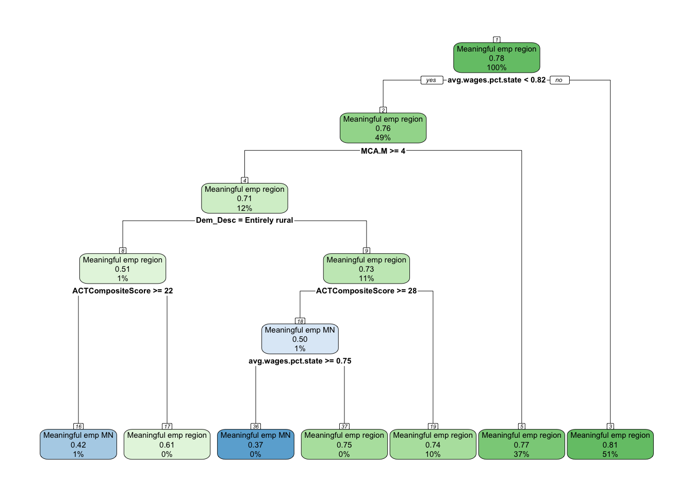
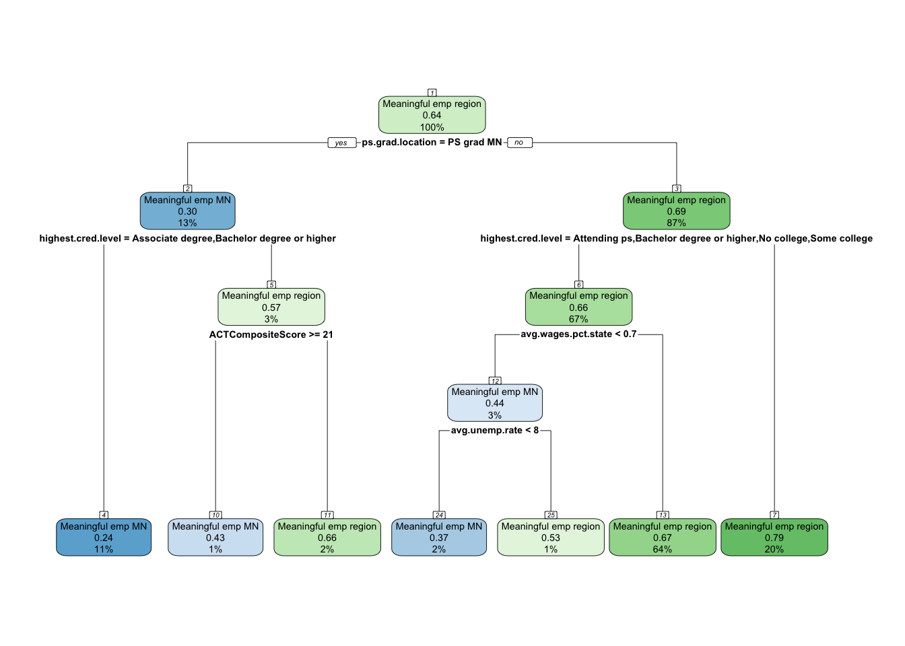
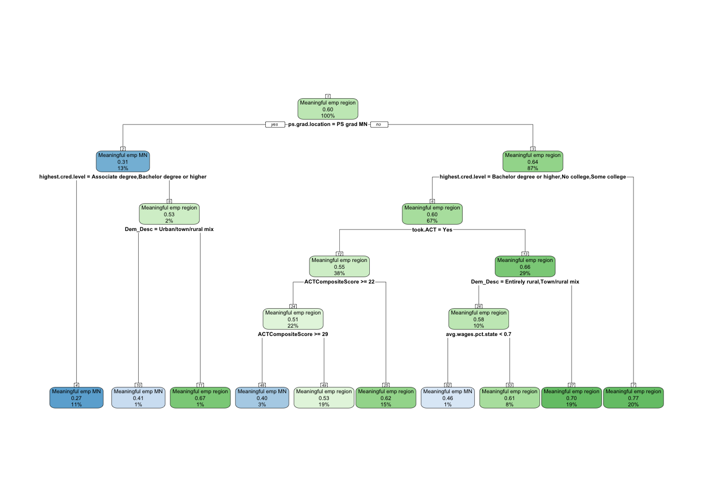
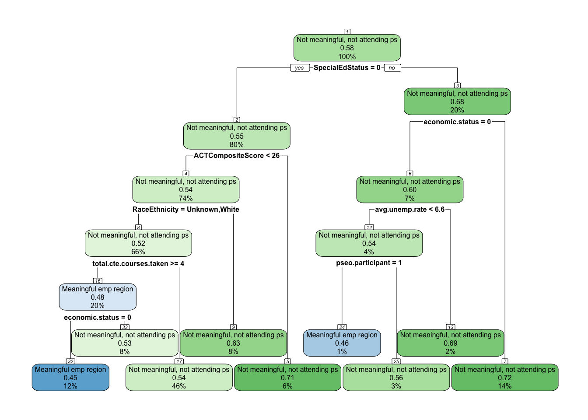
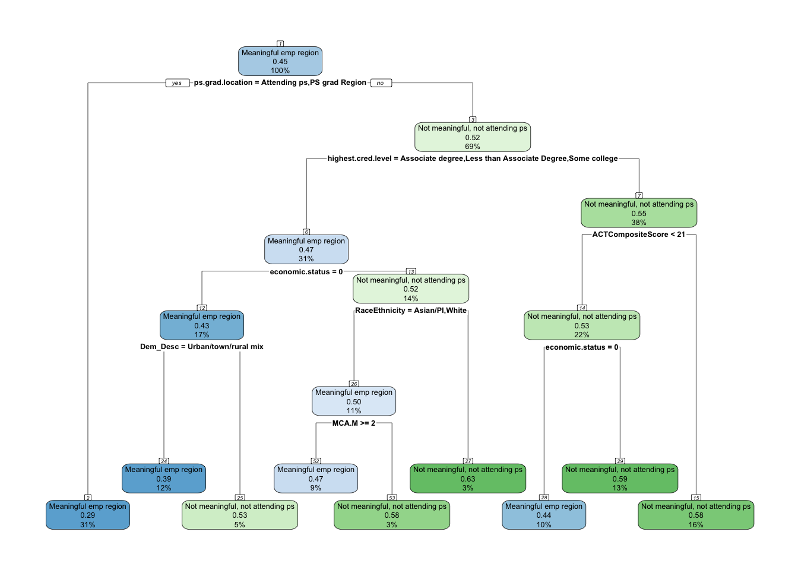
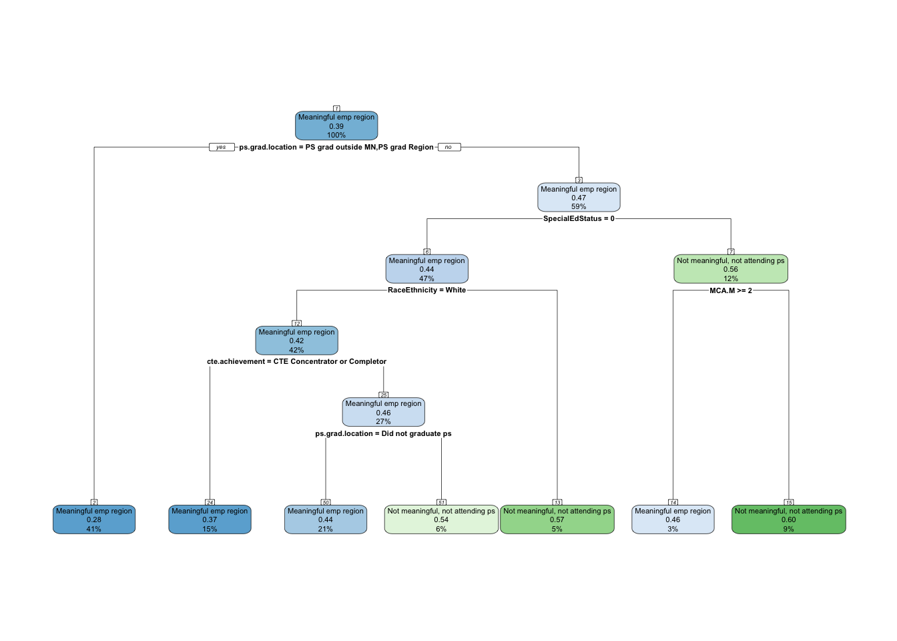
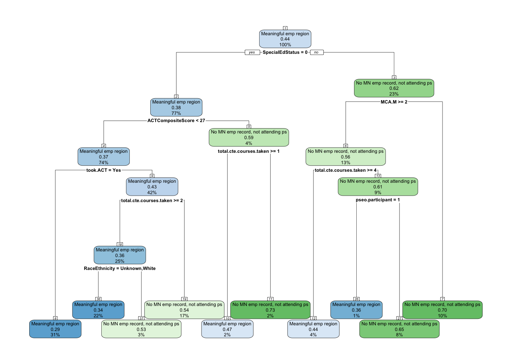
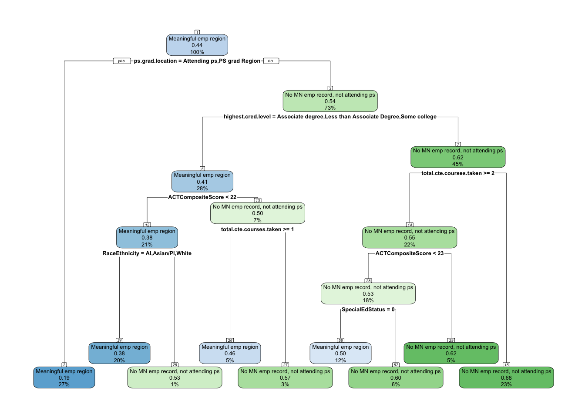
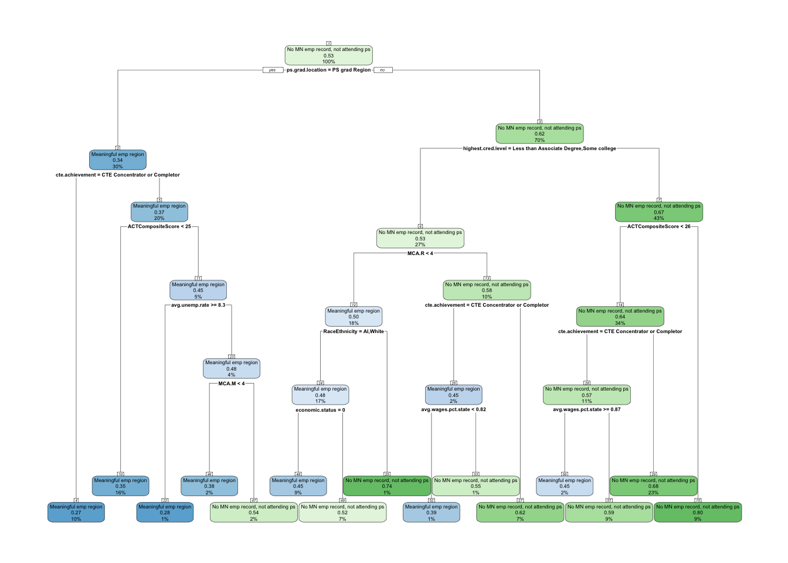

Our analysis of local employment using cross-tabs, Kramer v-test, and ANOVA tables, we identified the following rank of importance regarding independent variable relationships to employment outcomes after high school;
Demographics
Keep / Prioritize
SpecialEd Status (strongest demographic predictor)
Race/Ethnicity (moderate strength, important equity covariate)
Economic Status (moderate but weaker compared to later predictors; may retain as a control if needed)
Drop / Deprioritize
Gender (weak, V ≈ .05–.10, fades over time)
English Learner (very weak, V < .07, small group sizes)
High School Characteristics
Keep / Prioritize
Dem_Desc (Rural/Urban) – moderate, useful contextual control
Avg. Unemployment – strong early F-values, local context matters
Avg. Wages % State – strong F-values, economic environment indicator
CTE Achievement – anchors to regional meaningful employment
Total CTE Courses Taken – consistent predictor of regional attachment
PSEO Participation – strong early differentiator of statewide vs regional pathways
Drop / Deprioritize
SAT Taken (consistently weak, V ≈ .07, redundant with ACT)
AP Exam (moderate, but less powerful than ACT/MCA; may be dropped if multicollinearity is high)
Postsecondary Experiences
Keep / Prioritize
Attended Postsecondary Within First Year – strongest early effect (V > .5)
Ever Attended Postsecondary – very strong differentiator (V > .6)
Postsecondary Graduation – critical predictor of long-term stability
Highest Credential Level – strong differentiator between statewide vs regional pathways
Graduation Location – strong anchor for regional vs statewide attachment
Drop / Deprioritize
Institution Sector – moderate only (V ≈ .14–.16); may be redundant with credential level & location
Overall Guidance
Drop: Gender, English Learner, Range School, SAT Taken, possibly AP Exam, possibly Institution Sector
Keep: All others, with focus on SpecialEd, Race/Ethnicity, local economic indicators, ACT/MCA, CTE, and Postsecondary attendance/graduation/credentials.
This balances parsimony (leaner model) with coverage (keeping conceptually important drivers of outcomes). These are the ones we will be using in our model.
Employment states
Currently, we have the following employment states for 1-, 5- and 10-years after graduating high school.
Meaningful emp region: Individual has meaningful employment in the region of their high school.
Meaningful emp MN: Individual has meaningful employment in Minnesota, but not in the region of their high school.
Attending ps: Individual is attending post-secondary and does not have meaningful employment.
Not meaningful, not attending ps: Individual is working in Minnesota, but it is not meaningful and is not attending post-secondary.
No MN record, not attending ps: Individual does not have a MN employment record and is not attending post-secondary.
Methodology
This study investigates the factors that influence whether high school graduates achieve meaningful employment in the same region as their high school at 1, 5, and 10 years after graduation. To isolate and understand the predictors of this specific outcome, the analysis compares it separately against three alternative post-graduation statuses:
Meaningful employment in Minnesota, but outside the region
Not meaningful employment in Minnesota and not attending post-secondary
No Minnesota employment record and not attending post-secondary
Graduates classified as Attending post-secondary at the time of measurement are excluded from the analysis, as their employment pathways are distinct and not directly comparable to full-time workforce participation.
For each of the three alternative statuses and each time point (1, 5, and 10 years after graduation), a separate binary classification model is created, resulting in nine total models. This binary framework ensures that “Meaningful employment in the region” is always the positive class, allowing a direct focus on distinguishing regional retention from each alternative pathway.
The modeling process follows these steps:
Data Preparation All predictor variables include demographic characteristics, high school achievement indicators, and postsecondary attainment measures. Records with missing target outcome categories are excluded. For each binary comparison, the dataset is filtered to only include the two relevant classes, with “Meaningful employment in the region” coded as the positive class.
Training and Test Split For each binary dataset, the data is randomly split into a training set (70–80%) and a testing set (20–30%) to ensure that model evaluation is conducted on previously unseen data.
Modeling
We are going to use the following method to each binary comparison:
CART (Classification and Regression Tree) for interpretability and identification of clear decision rules. We will start by developing the base model, and then do pre- and post-pruning to determine which model provides the best accuracy.
Evaluation Models are evaluated on the testing set using accuracy, Cohen’s kappa, balanced accuracy, sensitivity, and specificity. Variable importance is examined to identify the most influential predictors for each comparison and time point.
This approach emphasizes clarity in interpretation by focusing each model on a single binary distinction, making it easier to identify which factors most strongly differentiate graduates who achieve meaningful regional employment from those on alternative pathways.
Analysis - Meaningful employment region vs. Meaningful employment MN
Comparative Summary
Year 1 after Graduation
At one year, regional economic conditions dominate. Graduates from counties with lower wages (<82% of state average) are most likely to remain employed in their high school region. Academic factors refine this: students with moderate MCA Math and ACT scores are more anchored locally, while those with very high ACT scores are somewhat more mobile. Rural students are also more likely to stay, unless high academic performance gives them the credentials to pursue opportunities elsewhere. Overall, weaker local economies and moderate academic preparation are the clearest anchors to early regional employment.
Year 5 after Graduation
By five years, postsecondary pathways replace high school characteristics as the main anchors. Graduates who complete college in their home region are the most likely to stay employed there. Those who attend institutions outside the region (even within Minnesota) or who do not graduate are much more likely to work elsewhere. Local labor markets still matter: when wages are low and unemployment is high, graduates are more likely to remain in their home region. Moderate ACT scores and credential attainment reinforce anchoring, while strong labor markets elsewhere and higher ACT performance increase mobility.
Year 10 after Graduation
A decade after high school, educational attainment and place of graduation remain decisive. Graduates who earned postsecondary credentials in their home region, especially bachelor’s degrees, are strongly tied to local employment. In contrast, those who graduated outside the region (even elsewhere in Minnesota) are less likely to return. ACT scores become more important over time: very high scorers are the most mobile, while moderate scorers remain anchored. Community context continues to shape retention — graduates from rural and town/rural areas are more likely to stay, while urban graduates are more mobile. Weaker local wages reinforce anchoring, while stronger wages encourage outward mobility.
Conclusion
Across all time horizons, meaningful employment in the region is the dominant outcome. What changes over time are the anchors:
In the short term, it is local economic conditions (low wages, rural context).
By the mid-term, it is postsecondary completion in the home region.
In the long term, it is a combination of regional college graduation, rural upbringing, and moderate academic achievement that keeps graduates rooted, while high academic performance and education outside the region drive mobility.
The consistent message is that place of postsecondary education and community context are central levers. Strengthening local higher education pathways, especially those tied to rural areas, and ensuring accessible, high-quality employment opportunities in weaker wage markets, are the clearest policy solutions to reinforce regional workforce retention.
Variable Usage Across Models
Predictor
Year 1
Year 5
Year 10
economic.status
—
—
—
RaceEthnicity
—
—
—
SpecialEdStatus
—
—
—
Dem_Desc (community)
⬆️ Rural = more anchored
—
⬆️ Rural/town mix = more anchored; Urban = ⬇️
avg.unemp.rate
—
⬆️ Higher unemployment = anchored
—
avg.wages.pct.state
⬆️ Low wages = anchored
⬆️ Low wages = anchored
⬆️ Low wages = anchored
ACTCompositeScore
⬆️ Moderate = anchored; ⬇️ High = mobile
⬆️ Moderate = anchored; ⬇️ High = mobile
⬆️ Moderate = anchored; ⬇️ Very high = mobile
took.ACT
—
—
⬆️ ACT taken = anchored if moderate score
MCA.M (Math)
⬆️ Higher scores = anchored
—
—
MCA.R (Reading)
—
—
—
MCA.S (Science)
—
—
—
cte.achievement
—
—
—
total.cte.courses.taken
—
—
—
ps.grad.location
—
⬆️ Region grad = anchored; MN/outside = ⬇️
⬆️ Region grad = anchored; MN/outside = ⬇️
ps.grad
—
—
—
highest.cred.level
—
⬆️ Associate/Bachelor’s = anchored
⬆️ Bachelor’s = anchored
ap.exam
—
—
—
sat.taken
—
—
—
Legend:
⬆️ = Anchor (greater likelihood of meaningful employment in the region)
⬇️ = Mobility factor (greater likelihood of meaningful employment outside the region)
— = Not used in the model
One year after graduation
First I’m going to filter out the data so only individuals that had meaningful employment in the region or Minnesota are in the dataset. In addition, I’m going to remove all the post-secondary variables from the model since those are variables that take place in the future. In addition, I’m going to remove individuals that are currently attending college one year after graduation. This should keep the model clean.
The table below shows that 78% of the individuals have meaningful employment in their high school region compared to 22% that have meaningful employment in Minnesota, but not their region.
I know the base model is going to overfit and provide an overly complex tree due to having a cost penalty of 0. So I’m just going to print the complexity plot in order to see what the appropriate CP would be to minimize xerror.
set.seed(1234)sample_ind <-sample(nrow(meaningful.emp.mn.grad.year.1), nrow(meaningful.emp.mn.grad.year.1) *.7)train <- meaningful.emp.mn.grad.year.1[sample_ind,]test <- meaningful.emp.mn.grad.year.1[-sample_ind,]#Base modelmeaningful.emp.mn.grad.year.1.model <-rpart(grad.year.1~ ., data = train, method ="class", control =rpart.control(cp =0))# Accuracytest$pred <-predict(meaningful.emp.mn.grad.year.1.model, test, type ="class")accuracy_base <-mean(test$pred == test$grad.year.1)percent(accuracy_base, accuracy = .1)
[1] "72.3%"
# Examine the complexity plotprintcp(meaningful.emp.mn.grad.year.1.model)
The lowest cross-validation error (xerror) grows continuously. There is no generalizable signal here and suggests that just “guessing” with a 78% change of accuracy is best.
Pre-pruning
Next, we need to prune. We can either pre-prune or post-prune. We will start with pre-pruning and use each method - max depth, min depth, and min bucket. It’s recommended that I start with the following parameters;
maxdepth: 5
minsplit: round(2% of nrow(train)) which is 128.
minbucket: round(minsplit / 3) which is 43
cp = 0
I’m having issues with balance since a large majority of individuals have meaningful employment in the region in the dataset. So, I’m going to tweak the parameters.
High school accomplishments: 2/8 - College readiness
The lowest cross-validation error (xerror) is lowest at step 2 with 1.0193, cp = 0, and 6 splits.
So, the accuracy of these are clear;
Base model: 72.3%
Pre-pruned model: 77.3%
Post-pruned model: 77.3%
The post-pruned model and the pre-pruned model are the same, so we will just use the pre-pruned model.
#Plot treerpart.plot(meaningful.emp.mn.grad.year.1.model.preprune, nn =TRUE)

Main takeaway
Year 1 after Graduation
Key Findings:
The pre-pruned model for Year 1 achieved an accuracy of 77.3%. The most influential predictors of whether graduates were employed meaningfully in Minnesota versus elsewhere in the region were average wages (as a percent of state), MCA math scores, community type (Dem_Desc), and ACT Composite Score. The root node error was 21.7%, with 6 splits in the final tree.
Interpretation:
One year after graduation, local wage levels strongly shaped employment outcomes. When county wages were below 82% of the state average, graduates were far more likely to be in meaningful employment elsewhere in the region (≈78%). Conversely, when wages were closer to or above the state average, graduates were relatively more likely to find meaningful employment within Minnesota. Academic performance and community type refined these patterns:
Among those in low-wage counties, higher MCA math scores (≥4) and high ACT scores (≥28) were still associated with staying in the region rather than moving into Minnesota employment.
Rural context mattered: in entirely rural communities, even with stronger MCA math scores, the balance still leaned toward regional employment over Minnesota, although moderate ACT scores (≥22) slightly increased the chance of remaining in Minnesota.
In higher-wage counties (≥82% of state wages), the probability of remaining in meaningful employment in Minnesota was stronger compared to the low-wage split, showing the importance of local labor market strength.
Decision Tree Interpretation:
The root split on avg.wages.pct.state < 0.82 shows that wage competitiveness of a county is the most decisive factor. Left branches consistently indicate higher probabilities of meaningful employment in the region, especially when paired with strong MCA math or ACT scores. Right branches (higher wage counties) provide the conditions most favorable for retaining graduates in meaningful employment within Minnesota. Taken together, the model suggests that low local wages drive graduates into the wider region, but stronger academic preparation and higher-wage counties increase the likelihood of them staying in Minnesota.
Five years after graduation
I’m going to follow the same process as the one year after graduation process, but I’m going to add in the post-secondary variables now.
The table below a bit more balanced classifications with 64% of the individuals having meaningful employment in their high school region compared to 36% that have meaningful employment in Minnesota, but not their region.
[1] "Attending ps" "Did not graduate ps" "PS grad MN"
[4] "PS grad outside MN" "PS grad Region"
test$ps.grad.location
[1] Did not graduate ps PS grad Region PS grad Region
[4] PS grad Region PS grad Region Did not graduate ps
[7] Did not graduate ps PS grad Region Did not graduate ps
[10] Did not graduate ps Did not graduate ps PS grad Region
[13] Did not graduate ps Did not graduate ps Did not graduate ps
[16] PS grad outside MN Did not graduate ps Did not graduate ps
[19] Did not graduate ps Did not graduate ps Did not graduate ps
[22] Did not graduate ps Did not graduate ps Did not graduate ps
[25] PS grad outside MN PS grad MN Did not graduate ps
[28] PS grad Region PS grad Region PS grad MN
[31] Did not graduate ps PS grad MN Attending ps
[34] PS grad outside MN Did not graduate ps PS grad MN
[37] Attending ps Did not graduate ps PS grad MN
[40] Did not graduate ps Did not graduate ps Did not graduate ps
[43] Did not graduate ps Did not graduate ps Did not graduate ps
[46] Did not graduate ps PS grad Region Did not graduate ps
[49] PS grad Region Did not graduate ps Did not graduate ps
[52] Did not graduate ps PS grad outside MN PS grad Region
[55] Did not graduate ps PS grad Region PS grad Region
[58] PS grad MN PS grad Region PS grad outside MN
[61] Did not graduate ps PS grad Region Did not graduate ps
[64] PS grad Region PS grad MN Did not graduate ps
[67] PS grad Region Did not graduate ps PS grad MN
[70] PS grad MN Did not graduate ps Attending ps
[73] PS grad Region Did not graduate ps Did not graduate ps
[76] PS grad outside MN PS grad Region Did not graduate ps
[79] PS grad Region Did not graduate ps Did not graduate ps
[82] PS grad Region PS grad outside MN PS grad Region
[85] Did not graduate ps Did not graduate ps PS grad Region
[88] Did not graduate ps PS grad Region PS grad MN
[91] PS grad Region Did not graduate ps PS grad MN
[94] Did not graduate ps Did not graduate ps Did not graduate ps
[97] Did not graduate ps Did not graduate ps Did not graduate ps
[100] PS grad Region Did not graduate ps Did not graduate ps
[103] PS grad Region PS grad Region PS grad MN
[106] Did not graduate ps PS grad Region Did not graduate ps
[109] PS grad Region PS grad Region PS grad outside MN
[112] Did not graduate ps PS grad Region Did not graduate ps
[115] Did not graduate ps PS grad Region Did not graduate ps
[118] PS grad outside MN PS grad Region PS grad Region
[121] PS grad Region Did not graduate ps PS grad MN
[124] PS grad Region PS grad Region Did not graduate ps
[127] Did not graduate ps Did not graduate ps Did not graduate ps
[130] PS grad Region Did not graduate ps Did not graduate ps
[133] PS grad MN Did not graduate ps Did not graduate ps
[136] Did not graduate ps Did not graduate ps PS grad Region
[139] Did not graduate ps Did not graduate ps Did not graduate ps
[142] PS grad Region Did not graduate ps Did not graduate ps
[145] Did not graduate ps PS grad Region Did not graduate ps
[148] PS grad Region Did not graduate ps PS grad Region
[151] PS grad Region Did not graduate ps Did not graduate ps
[154] Did not graduate ps Did not graduate ps Did not graduate ps
[157] Did not graduate ps Did not graduate ps Did not graduate ps
[160] PS grad MN Did not graduate ps Did not graduate ps
[163] Did not graduate ps PS grad Region PS grad MN
[166] PS grad Region PS grad MN Did not graduate ps
[169] PS grad Region Did not graduate ps Did not graduate ps
[172] Did not graduate ps Did not graduate ps Did not graduate ps
[175] PS grad Region PS grad outside MN Did not graduate ps
[178] Did not graduate ps Did not graduate ps PS grad MN
[181] PS grad Region PS grad outside MN Attending ps
[184] PS grad Region PS grad MN Did not graduate ps
[187] Did not graduate ps PS grad Region PS grad Region
[190] PS grad MN PS grad MN Did not graduate ps
[193] Did not graduate ps PS grad Region PS grad Region
[196] PS grad Region Did not graduate ps PS grad Region
[199] PS grad Region Did not graduate ps PS grad MN
[202] Did not graduate ps Did not graduate ps Did not graduate ps
[205] PS grad Region Did not graduate ps PS grad Region
[208] Did not graduate ps PS grad outside MN Did not graduate ps
[211] Did not graduate ps PS grad Region PS grad outside MN
[214] Did not graduate ps Did not graduate ps PS grad Region
[217] PS grad MN Did not graduate ps PS grad MN
[220] PS grad Region Did not graduate ps Did not graduate ps
[223] Did not graduate ps Did not graduate ps PS grad MN
[226] Did not graduate ps PS grad Region Did not graduate ps
[229] Did not graduate ps Did not graduate ps PS grad Region
[232] PS grad Region PS grad Region PS grad Region
[235] Did not graduate ps PS grad Region PS grad MN
[238] PS grad Region Did not graduate ps Did not graduate ps
[241] Did not graduate ps Did not graduate ps Did not graduate ps
[244] PS grad MN Did not graduate ps PS grad MN
[247] Did not graduate ps Did not graduate ps Did not graduate ps
[250] Did not graduate ps Did not graduate ps Did not graduate ps
[253] PS grad Region Did not graduate ps PS grad Region
[256] Did not graduate ps PS grad MN PS grad Region
[259] Did not graduate ps Did not graduate ps Did not graduate ps
[262] PS grad Region Did not graduate ps Did not graduate ps
[265] Did not graduate ps PS grad Region Did not graduate ps
[268] Did not graduate ps PS grad Region PS grad Region
[271] Did not graduate ps PS grad Region PS grad MN
[274] PS grad MN PS grad MN PS grad Region
[277] Did not graduate ps Did not graduate ps PS grad Region
[280] PS grad Region PS grad MN PS grad MN
[283] PS grad Region PS grad MN Did not graduate ps
[286] Did not graduate ps PS grad Region Did not graduate ps
[289] Did not graduate ps Did not graduate ps Did not graduate ps
[292] Did not graduate ps PS grad MN Did not graduate ps
[295] PS grad MN Did not graduate ps Did not graduate ps
[298] Did not graduate ps PS grad MN Did not graduate ps
[301] Did not graduate ps Did not graduate ps Did not graduate ps
[304] Did not graduate ps PS grad Region Did not graduate ps
[307] Did not graduate ps PS grad Region Did not graduate ps
[310] Did not graduate ps Did not graduate ps PS grad outside MN
[313] Did not graduate ps PS grad Region PS grad Region
[316] PS grad Region Did not graduate ps Did not graduate ps
[319] PS grad Region Did not graduate ps PS grad MN
[322] Did not graduate ps PS grad Region Did not graduate ps
[325] Did not graduate ps Attending ps PS grad MN
[328] PS grad Region PS grad Region PS grad Region
[331] PS grad Region Did not graduate ps Did not graduate ps
[334] PS grad MN Did not graduate ps PS grad Region
[337] Did not graduate ps PS grad MN PS grad Region
[340] Did not graduate ps Did not graduate ps PS grad MN
[343] PS grad Region PS grad Region Did not graduate ps
[346] Did not graduate ps PS grad Region Did not graduate ps
[349] Did not graduate ps PS grad Region Did not graduate ps
[352] PS grad Region PS grad Region PS grad Region
[355] Did not graduate ps Did not graduate ps Did not graduate ps
[358] Did not graduate ps PS grad outside MN PS grad outside MN
[361] Did not graduate ps PS grad Region PS grad Region
[364] PS grad Region PS grad Region PS grad MN
[367] PS grad Region Did not graduate ps Did not graduate ps
[370] PS grad Region Did not graduate ps PS grad MN
[373] PS grad MN Did not graduate ps Did not graduate ps
[376] Did not graduate ps Did not graduate ps Did not graduate ps
[379] Did not graduate ps PS grad MN PS grad Region
[382] Did not graduate ps PS grad outside MN Did not graduate ps
[385] Did not graduate ps PS grad Region PS grad MN
[388] PS grad MN Did not graduate ps Did not graduate ps
[391] PS grad Region PS grad outside MN PS grad Region
[394] PS grad outside MN PS grad Region PS grad Region
[397] Did not graduate ps Did not graduate ps PS grad Region
[400] PS grad MN PS grad MN Did not graduate ps
[403] PS grad Region PS grad outside MN PS grad outside MN
[406] Did not graduate ps PS grad Region Did not graduate ps
[409] PS grad outside MN PS grad MN Did not graduate ps
[412] PS grad Region Did not graduate ps PS grad Region
[415] Did not graduate ps PS grad MN Did not graduate ps
[418] Did not graduate ps PS grad MN Did not graduate ps
[421] PS grad Region PS grad Region PS grad MN
[424] PS grad Region Did not graduate ps Did not graduate ps
[427] Did not graduate ps Did not graduate ps Did not graduate ps
[430] PS grad Region Did not graduate ps PS grad Region
[433] PS grad Region PS grad Region PS grad Region
[436] PS grad MN PS grad Region PS grad Region
[439] Did not graduate ps PS grad MN Did not graduate ps
[442] Did not graduate ps Attending ps Attending ps
[445] Did not graduate ps PS grad Region Did not graduate ps
[448] Did not graduate ps PS grad Region Did not graduate ps
[451] Did not graduate ps Did not graduate ps PS grad outside MN
[454] PS grad Region Did not graduate ps Did not graduate ps
[457] PS grad MN Did not graduate ps Did not graduate ps
[460] PS grad MN PS grad MN PS grad Region
[463] Did not graduate ps Did not graduate ps PS grad outside MN
[466] Did not graduate ps Did not graduate ps PS grad Region
[469] PS grad Region Did not graduate ps Did not graduate ps
[472] PS grad Region Did not graduate ps Did not graduate ps
[475] PS grad MN PS grad Region Did not graduate ps
[478] PS grad Region PS grad Region PS grad Region
[481] PS grad MN PS grad Region PS grad Region
[484] Did not graduate ps Did not graduate ps Did not graduate ps
[487] PS grad Region PS grad Region PS grad Region
[490] Did not graduate ps Did not graduate ps PS grad MN
[493] Did not graduate ps Did not graduate ps PS grad Region
[496] Did not graduate ps Did not graduate ps PS grad Region
[499] Did not graduate ps Did not graduate ps PS grad MN
[502] Did not graduate ps PS grad Region PS grad Region
[505] Did not graduate ps Attending ps PS grad Region
[508] Did not graduate ps PS grad Region Attending ps
[511] Did not graduate ps Did not graduate ps PS grad Region
[514] Did not graduate ps PS grad Region PS grad outside MN
[517] PS grad Region PS grad Region Did not graduate ps
[520] Did not graduate ps PS grad Region Did not graduate ps
[523] Did not graduate ps Did not graduate ps PS grad MN
[526] Did not graduate ps PS grad Region Did not graduate ps
[529] PS grad outside MN Did not graduate ps Did not graduate ps
[532] PS grad Region PS grad Region PS grad Region
[535] PS grad MN PS grad Region Did not graduate ps
[538] Did not graduate ps PS grad MN Did not graduate ps
[541] PS grad outside MN Did not graduate ps Did not graduate ps
[544] PS grad MN PS grad Region Did not graduate ps
[547] PS grad Region Did not graduate ps Did not graduate ps
[550] Did not graduate ps Did not graduate ps PS grad Region
[553] PS grad Region Did not graduate ps Attending ps
[556] PS grad MN PS grad Region PS grad Region
[559] Did not graduate ps PS grad outside MN PS grad outside MN
[562] PS grad Region Did not graduate ps Did not graduate ps
[565] PS grad Region PS grad Region PS grad outside MN
[568] PS grad Region Did not graduate ps PS grad Region
[571] Did not graduate ps Did not graduate ps Did not graduate ps
[574] PS grad Region Did not graduate ps Did not graduate ps
[577] Did not graduate ps PS grad Region PS grad MN
[580] Did not graduate ps PS grad outside MN PS grad Region
[583] Did not graduate ps PS grad Region Did not graduate ps
[586] PS grad MN Did not graduate ps PS grad Region
[589] PS grad Region PS grad MN Did not graduate ps
[592] PS grad Region PS grad Region PS grad Region
[595] Did not graduate ps Did not graduate ps Did not graduate ps
[598] PS grad Region PS grad Region Did not graduate ps
[601] PS grad Region Did not graduate ps PS grad Region
[604] Did not graduate ps PS grad Region PS grad Region
[607] PS grad Region PS grad Region PS grad MN
[610] Did not graduate ps PS grad MN Did not graduate ps
[613] PS grad MN Did not graduate ps Did not graduate ps
[616] PS grad Region PS grad MN Did not graduate ps
[619] PS grad Region Did not graduate ps PS grad MN
[622] PS grad outside MN Did not graduate ps Did not graduate ps
[625] PS grad MN PS grad Region Did not graduate ps
[628] PS grad Region PS grad MN Did not graduate ps
[631] PS grad Region Did not graduate ps Did not graduate ps
[634] Did not graduate ps Did not graduate ps Did not graduate ps
[637] Did not graduate ps PS grad Region Did not graduate ps
[640] PS grad outside MN Did not graduate ps Did not graduate ps
[643] PS grad Region PS grad MN PS grad MN
[646] Did not graduate ps PS grad Region PS grad Region
[649] Did not graduate ps Did not graduate ps PS grad MN
[652] PS grad Region PS grad outside MN PS grad Region
[655] Did not graduate ps Did not graduate ps Did not graduate ps
[658] Did not graduate ps Did not graduate ps PS grad MN
[661] Did not graduate ps PS grad MN PS grad MN
[664] PS grad Region Did not graduate ps PS grad Region
[667] PS grad outside MN PS grad Region Did not graduate ps
[670] Did not graduate ps PS grad outside MN PS grad Region
[673] Did not graduate ps PS grad Region PS grad MN
[676] PS grad Region Did not graduate ps Did not graduate ps
[679] PS grad MN PS grad outside MN Did not graduate ps
[682] PS grad Region PS grad Region Did not graduate ps
[685] PS grad MN PS grad Region PS grad MN
[688] PS grad outside MN PS grad Region Did not graduate ps
[691] Did not graduate ps Did not graduate ps PS grad Region
[694] Did not graduate ps PS grad Region PS grad MN
[697] Did not graduate ps PS grad outside MN Did not graduate ps
[700] Did not graduate ps PS grad Region Did not graduate ps
[703] Attending ps PS grad Region Did not graduate ps
[706] Did not graduate ps Did not graduate ps PS grad MN
[709] Did not graduate ps PS grad Region PS grad Region
[712] Did not graduate ps PS grad Region Did not graduate ps
[715] Did not graduate ps PS grad MN Did not graduate ps
[718] Did not graduate ps Did not graduate ps PS grad Region
[721] PS grad Region Did not graduate ps Did not graduate ps
[724] Attending ps PS grad Region PS grad Region
[727] PS grad Region PS grad MN Did not graduate ps
[730] Did not graduate ps Did not graduate ps Did not graduate ps
[733] PS grad MN Did not graduate ps Did not graduate ps
[736] PS grad Region PS grad Region PS grad Region
[739] PS grad Region Did not graduate ps PS grad Region
[742] PS grad Region Did not graduate ps Did not graduate ps
[745] Did not graduate ps PS grad MN Did not graduate ps
[748] Did not graduate ps PS grad Region Did not graduate ps
[751] PS grad MN Did not graduate ps PS grad Region
[754] PS grad MN PS grad outside MN PS grad Region
[757] PS grad MN Did not graduate ps PS grad Region
[760] Did not graduate ps PS grad Region PS grad Region
[763] PS grad MN PS grad Region PS grad outside MN
[766] Did not graduate ps Did not graduate ps PS grad Region
[769] Did not graduate ps PS grad Region PS grad MN
[772] Did not graduate ps Did not graduate ps PS grad MN
[775] Did not graduate ps Did not graduate ps Did not graduate ps
[778] PS grad Region PS grad Region PS grad Region
[781] Did not graduate ps PS grad Region Did not graduate ps
[784] Did not graduate ps Did not graduate ps Did not graduate ps
[787] Did not graduate ps PS grad Region Did not graduate ps
[790] PS grad Region Did not graduate ps PS grad Region
[793] PS grad Region Did not graduate ps PS grad MN
[796] PS grad outside MN PS grad Region Did not graduate ps
[799] Did not graduate ps PS grad MN Did not graduate ps
[802] Did not graduate ps PS grad Region Did not graduate ps
[805] PS grad Region Did not graduate ps PS grad Region
[808] PS grad MN Did not graduate ps PS grad Region
[811] PS grad MN PS grad Region Did not graduate ps
[814] Did not graduate ps PS grad MN Did not graduate ps
[817] Did not graduate ps PS grad Region PS grad MN
[820] PS grad MN PS grad Region PS grad MN
[823] Did not graduate ps PS grad outside MN Did not graduate ps
[826] Did not graduate ps Did not graduate ps PS grad Region
[829] PS grad Region Did not graduate ps PS grad MN
[832] Did not graduate ps Did not graduate ps PS grad outside MN
[835] Did not graduate ps Did not graduate ps Did not graduate ps
[838] Did not graduate ps Did not graduate ps Did not graduate ps
[841] PS grad Region Did not graduate ps PS grad Region
[844] Did not graduate ps PS grad MN Did not graduate ps
[847] PS grad MN Did not graduate ps PS grad MN
[850] PS grad MN PS grad Region PS grad Region
[853] Did not graduate ps PS grad MN Did not graduate ps
[856] Did not graduate ps PS grad outside MN PS grad Region
[859] PS grad Region Did not graduate ps PS grad outside MN
[862] Did not graduate ps PS grad Region PS grad outside MN
[865] Did not graduate ps PS grad Region PS grad Region
[868] PS grad MN Did not graduate ps PS grad Region
[871] Did not graduate ps Did not graduate ps Did not graduate ps
[874] PS grad Region Did not graduate ps PS grad MN
[877] Did not graduate ps Did not graduate ps Did not graduate ps
[880] Did not graduate ps PS grad MN PS grad outside MN
[883] PS grad Region PS grad MN PS grad MN
[886] Did not graduate ps Did not graduate ps Did not graduate ps
[889] Did not graduate ps PS grad Region Did not graduate ps
[892] Did not graduate ps PS grad Region PS grad MN
[895] Did not graduate ps Did not graduate ps PS grad Region
[898] PS grad Region Did not graduate ps PS grad MN
[901] PS grad Region Did not graduate ps Did not graduate ps
[904] PS grad MN PS grad Region Did not graduate ps
[907] PS grad outside MN Did not graduate ps Did not graduate ps
[910] PS grad Region PS grad MN PS grad outside MN
[913] PS grad Region PS grad Region PS grad MN
[916] Did not graduate ps PS grad Region PS grad Region
[919] Did not graduate ps Did not graduate ps Did not graduate ps
[922] PS grad Region PS grad outside MN PS grad Region
[925] Did not graduate ps Did not graduate ps PS grad Region
[928] Did not graduate ps PS grad MN Did not graduate ps
[931] Did not graduate ps Attending ps PS grad Region
[934] PS grad Region Did not graduate ps PS grad Region
[937] PS grad MN Did not graduate ps Did not graduate ps
[940] PS grad Region PS grad Region PS grad Region
[943] PS grad Region PS grad Region Did not graduate ps
[946] Did not graduate ps Did not graduate ps Did not graduate ps
[949] PS grad Region PS grad Region PS grad Region
[952] PS grad MN PS grad Region PS grad Region
[955] Did not graduate ps PS grad Region PS grad Region
[958] PS grad MN Did not graduate ps Did not graduate ps
[961] PS grad Region Did not graduate ps Did not graduate ps
[964] Did not graduate ps Did not graduate ps Did not graduate ps
[967] PS grad Region PS grad MN PS grad Region
[970] Did not graduate ps PS grad MN Did not graduate ps
[973] PS grad Region Did not graduate ps PS grad Region
[976] PS grad outside MN Did not graduate ps Did not graduate ps
[979] PS grad Region PS grad outside MN PS grad outside MN
[982] PS grad MN Did not graduate ps PS grad Region
[985] Did not graduate ps PS grad Region Did not graduate ps
[988] Did not graduate ps Did not graduate ps PS grad MN
[991] Did not graduate ps PS grad Region Did not graduate ps
[994] Did not graduate ps Did not graduate ps PS grad Region
[997] Did not graduate ps Did not graduate ps Did not graduate ps
[1000] PS grad Region PS grad Region Did not graduate ps
[1003] PS grad Region PS grad Region PS grad MN
[1006] Did not graduate ps Did not graduate ps Did not graduate ps
[1009] PS grad MN PS grad Region Did not graduate ps
[1012] Did not graduate ps Did not graduate ps PS grad MN
[1015] Did not graduate ps Did not graduate ps PS grad Region
[1018] PS grad Region PS grad MN Did not graduate ps
[1021] Did not graduate ps PS grad MN Did not graduate ps
[1024] Did not graduate ps Did not graduate ps PS grad Region
[1027] Did not graduate ps PS grad Region PS grad Region
[1030] Did not graduate ps PS grad Region Did not graduate ps
[1033] PS grad MN PS grad Region Did not graduate ps
[1036] Did not graduate ps Did not graduate ps Did not graduate ps
[1039] Did not graduate ps PS grad outside MN Did not graduate ps
[1042] Did not graduate ps PS grad MN Did not graduate ps
[1045] PS grad Region PS grad Region Did not graduate ps
[1048] PS grad MN Did not graduate ps PS grad Region
[1051] Did not graduate ps PS grad MN Did not graduate ps
[1054] PS grad Region Did not graduate ps Did not graduate ps
[1057] PS grad Region Did not graduate ps Did not graduate ps
[1060] PS grad Region PS grad Region Did not graduate ps
[1063] PS grad Region PS grad Region Did not graduate ps
[1066] Did not graduate ps PS grad MN Did not graduate ps
[1069] Did not graduate ps Did not graduate ps Did not graduate ps
[1072] Did not graduate ps PS grad Region Did not graduate ps
[1075] Did not graduate ps Did not graduate ps PS grad Region
[1078] PS grad Region PS grad Region PS grad MN
[1081] PS grad MN Did not graduate ps Did not graduate ps
[1084] Did not graduate ps PS grad Region PS grad Region
[1087] Did not graduate ps PS grad Region PS grad Region
[1090] PS grad MN PS grad MN Did not graduate ps
[1093] Did not graduate ps PS grad Region PS grad Region
[1096] PS grad Region Did not graduate ps Did not graduate ps
[1099] PS grad Region PS grad Region Did not graduate ps
[1102] PS grad Region Did not graduate ps PS grad MN
[1105] Did not graduate ps Did not graduate ps PS grad Region
[1108] PS grad Region Did not graduate ps PS grad outside MN
[1111] Did not graduate ps Did not graduate ps PS grad Region
[1114] Did not graduate ps PS grad MN PS grad Region
[1117] Did not graduate ps Did not graduate ps PS grad MN
[1120] Did not graduate ps PS grad Region PS grad Region
[1123] PS grad Region PS grad Region Did not graduate ps
[1126] PS grad Region PS grad Region PS grad Region
[1129] PS grad Region PS grad Region Did not graduate ps
[1132] PS grad Region Did not graduate ps Did not graduate ps
[1135] Did not graduate ps Did not graduate ps Did not graduate ps
[1138] Attending ps Did not graduate ps Did not graduate ps
[1141] Did not graduate ps PS grad Region Did not graduate ps
[1144] Did not graduate ps PS grad Region Did not graduate ps
[1147] Did not graduate ps Did not graduate ps Did not graduate ps
[1150] PS grad MN PS grad MN Did not graduate ps
[1153] Did not graduate ps PS grad Region Did not graduate ps
[1156] Did not graduate ps PS grad outside MN Did not graduate ps
[1159] Did not graduate ps PS grad MN Did not graduate ps
[1162] PS grad Region PS grad Region PS grad Region
[1165] Did not graduate ps Did not graduate ps Did not graduate ps
[1168] PS grad Region PS grad Region Attending ps
[1171] PS grad outside MN PS grad Region Did not graduate ps
[1174] Did not graduate ps Did not graduate ps Did not graduate ps
[1177] Did not graduate ps PS grad Region PS grad Region
[1180] PS grad MN PS grad Region PS grad Region
[1183] PS grad Region PS grad Region PS grad Region
[1186] PS grad MN PS grad Region Did not graduate ps
[1189] PS grad Region PS grad Region PS grad Region
[1192] PS grad MN PS grad Region PS grad Region
[1195] PS grad Region Did not graduate ps PS grad Region
[1198] Did not graduate ps PS grad Region PS grad MN
[1201] Did not graduate ps PS grad MN PS grad Region
[1204] PS grad outside MN PS grad MN Did not graduate ps
[1207] PS grad Region Did not graduate ps PS grad MN
[1210] PS grad Region Did not graduate ps PS grad Region
[1213] PS grad Region Did not graduate ps Did not graduate ps
[1216] PS grad Region Did not graduate ps PS grad Region
[1219] Did not graduate ps Did not graduate ps PS grad outside MN
[1222] Did not graduate ps PS grad MN PS grad Region
[1225] PS grad MN Did not graduate ps PS grad Region
[1228] Did not graduate ps PS grad Region PS grad Region
[1231] PS grad MN PS grad Region Did not graduate ps
[1234] PS grad outside MN PS grad MN PS grad Region
[1237] PS grad Region PS grad MN Did not graduate ps
[1240] PS grad Region PS grad Region PS grad Region
[1243] Did not graduate ps PS grad Region PS grad Region
[1246] Did not graduate ps Did not graduate ps PS grad Region
[1249] PS grad MN Did not graduate ps PS grad Region
[1252] PS grad Region Did not graduate ps PS grad Region
[1255] PS grad MN PS grad Region PS grad Region
[1258] PS grad Region PS grad outside MN PS grad Region
[1261] PS grad MN PS grad MN Did not graduate ps
[1264] Did not graduate ps Did not graduate ps Did not graduate ps
[1267] Did not graduate ps Did not graduate ps Did not graduate ps
[1270] PS grad Region Did not graduate ps Did not graduate ps
[1273] Did not graduate ps PS grad Region PS grad Region
[1276] PS grad MN PS grad MN PS grad MN
[1279] PS grad MN Did not graduate ps PS grad Region
[1282] Did not graduate ps Did not graduate ps Did not graduate ps
[1285] Did not graduate ps Did not graduate ps Did not graduate ps
[1288] PS grad Region PS grad Region PS grad Region
[1291] PS grad MN PS grad Region PS grad Region
[1294] PS grad Region PS grad Region PS grad Region
[1297] PS grad Region PS grad MN Did not graduate ps
[1300] PS grad Region Did not graduate ps Did not graduate ps
[1303] Did not graduate ps Did not graduate ps Did not graduate ps
[1306] PS grad Region PS grad Region Did not graduate ps
[1309] PS grad Region PS grad Region PS grad Region
[1312] PS grad Region Did not graduate ps Did not graduate ps
[1315] Did not graduate ps Did not graduate ps Did not graduate ps
[1318] PS grad Region PS grad Region PS grad outside MN
[1321] Did not graduate ps PS grad MN Did not graduate ps
[1324] Did not graduate ps Did not graduate ps PS grad MN
[1327] Did not graduate ps Did not graduate ps Did not graduate ps
[1330] PS grad Region PS grad MN PS grad Region
[1333] Did not graduate ps Did not graduate ps PS grad MN
[1336] Did not graduate ps Did not graduate ps PS grad Region
[1339] PS grad MN PS grad Region Did not graduate ps
[1342] Did not graduate ps PS grad MN PS grad Region
[1345] Did not graduate ps PS grad MN PS grad MN
[1348] PS grad Region PS grad MN PS grad MN
[1351] Did not graduate ps PS grad MN PS grad Region
[1354] PS grad Region Did not graduate ps PS grad outside MN
[1357] PS grad Region Did not graduate ps PS grad Region
[1360] PS grad Region Did not graduate ps PS grad MN
[1363] PS grad Region Did not graduate ps Did not graduate ps
[1366] Did not graduate ps PS grad Region Did not graduate ps
[1369] Did not graduate ps PS grad Region PS grad Region
[1372] Did not graduate ps PS grad Region PS grad Region
[1375] Did not graduate ps Did not graduate ps Did not graduate ps
[1378] PS grad Region Did not graduate ps PS grad Region
[1381] Did not graduate ps Did not graduate ps Did not graduate ps
[1384] PS grad MN Did not graduate ps PS grad Region
[1387] PS grad outside MN Did not graduate ps Did not graduate ps
[1390] PS grad Region Did not graduate ps Did not graduate ps
[1393] Did not graduate ps Did not graduate ps Did not graduate ps
[1396] PS grad MN Did not graduate ps Did not graduate ps
[1399] Did not graduate ps PS grad MN PS grad Region
[1402] Did not graduate ps PS grad Region PS grad Region
[1405] PS grad MN Did not graduate ps Did not graduate ps
[1408] PS grad Region PS grad MN PS grad Region
[1411] PS grad Region PS grad Region PS grad Region
[1414] PS grad Region PS grad MN Did not graduate ps
[1417] PS grad Region PS grad Region PS grad Region
[1420] Did not graduate ps PS grad Region PS grad Region
[1423] Did not graduate ps PS grad Region PS grad Region
[1426] PS grad Region PS grad MN Did not graduate ps
[1429] PS grad MN PS grad Region PS grad MN
[1432] Did not graduate ps Did not graduate ps Did not graduate ps
[1435] PS grad Region Did not graduate ps Did not graduate ps
[1438] PS grad Region PS grad MN Did not graduate ps
[1441] Did not graduate ps Did not graduate ps PS grad Region
[1444] PS grad MN PS grad MN Did not graduate ps
[1447] PS grad Region PS grad outside MN Did not graduate ps
[1450] Did not graduate ps PS grad Region Did not graduate ps
[1453] Did not graduate ps PS grad Region Did not graduate ps
[1456] Did not graduate ps PS grad Region Did not graduate ps
[1459] PS grad Region Did not graduate ps PS grad MN
[1462] PS grad Region Did not graduate ps Did not graduate ps
[1465] PS grad outside MN PS grad Region Did not graduate ps
[1468] Did not graduate ps PS grad Region PS grad MN
[1471] Did not graduate ps Did not graduate ps PS grad Region
[1474] Did not graduate ps PS grad Region PS grad MN
[1477] PS grad outside MN PS grad Region PS grad Region
[1480] Did not graduate ps Did not graduate ps PS grad Region
[1483] PS grad Region PS grad Region PS grad Region
[1486] Did not graduate ps Did not graduate ps Did not graduate ps
[1489] PS grad Region Did not graduate ps PS grad outside MN
[1492] PS grad outside MN PS grad Region Did not graduate ps
[1495] Did not graduate ps PS grad Region PS grad Region
[1498] Did not graduate ps PS grad Region PS grad Region
[1501] Did not graduate ps Did not graduate ps PS grad Region
[1504] Did not graduate ps PS grad Region PS grad outside MN
[1507] Did not graduate ps Did not graduate ps PS grad MN
[1510] PS grad Region Did not graduate ps Did not graduate ps
[1513] Did not graduate ps Did not graduate ps PS grad Region
[1516] PS grad Region Did not graduate ps Did not graduate ps
[1519] Did not graduate ps Did not graduate ps Did not graduate ps
[1522] Did not graduate ps PS grad Region Did not graduate ps
[1525] PS grad MN PS grad Region PS grad MN
[1528] Did not graduate ps PS grad Region PS grad MN
[1531] PS grad Region PS grad Region PS grad outside MN
[1534] Did not graduate ps Did not graduate ps PS grad Region
[1537] Did not graduate ps PS grad MN Did not graduate ps
[1540] PS grad MN PS grad MN Did not graduate ps
[1543] PS grad Region PS grad Region PS grad Region
[1546] PS grad Region PS grad Region Did not graduate ps
[1549] Did not graduate ps PS grad Region PS grad Region
[1552] Did not graduate ps PS grad Region PS grad Region
[1555] PS grad Region Did not graduate ps Did not graduate ps
[1558] PS grad Region PS grad outside MN Did not graduate ps
[1561] PS grad Region PS grad Region PS grad Region
[1564] PS grad Region Did not graduate ps PS grad Region
[1567] Did not graduate ps Did not graduate ps PS grad outside MN
[1570] Did not graduate ps PS grad MN PS grad Region
[1573] Did not graduate ps PS grad Region PS grad Region
[1576] Did not graduate ps PS grad Region PS grad Region
[1579] Did not graduate ps Did not graduate ps PS grad Region
[1582] PS grad Region PS grad Region Did not graduate ps
[1585] PS grad MN PS grad Region PS grad Region
[1588] Did not graduate ps Did not graduate ps Did not graduate ps
[1591] PS grad Region PS grad Region PS grad MN
[1594] Did not graduate ps Did not graduate ps PS grad Region
[1597] PS grad MN Did not graduate ps PS grad Region
[1600] Did not graduate ps Did not graduate ps Did not graduate ps
[1603] PS grad Region PS grad Region Did not graduate ps
[1606] Did not graduate ps Did not graduate ps Did not graduate ps
[1609] PS grad Region Did not graduate ps PS grad MN
[1612] Did not graduate ps PS grad MN PS grad MN
[1615] Did not graduate ps Did not graduate ps Did not graduate ps
[1618] PS grad Region PS grad MN Did not graduate ps
[1621] Did not graduate ps Did not graduate ps PS grad Region
[1624] PS grad Region Did not graduate ps PS grad MN
[1627] Did not graduate ps PS grad MN Did not graduate ps
[1630] PS grad Region Did not graduate ps Attending ps
[1633] PS grad outside MN PS grad MN Did not graduate ps
[1636] PS grad Region PS grad Region Did not graduate ps
[1639] PS grad MN PS grad Region PS grad Region
[1642] PS grad Region Did not graduate ps PS grad Region
[1645] PS grad Region PS grad Region PS grad Region
[1648] PS grad MN Did not graduate ps PS grad Region
[1651] PS grad Region Did not graduate ps PS grad MN
[1654] Did not graduate ps Did not graduate ps Did not graduate ps
[1657] Did not graduate ps Did not graduate ps Did not graduate ps
[1660] PS grad Region Did not graduate ps PS grad Region
[1663] PS grad MN PS grad Region PS grad Region
[1666] Did not graduate ps Did not graduate ps PS grad outside MN
[1669] PS grad MN Did not graduate ps PS grad Region
[1672] PS grad MN PS grad Region Did not graduate ps
[1675] Did not graduate ps PS grad Region PS grad MN
[1678] Did not graduate ps PS grad MN Did not graduate ps
[1681] Did not graduate ps Did not graduate ps Did not graduate ps
[1684] PS grad MN Did not graduate ps Did not graduate ps
[1687] Did not graduate ps PS grad Region Did not graduate ps
[1690] Did not graduate ps PS grad Region PS grad Region
[1693] Did not graduate ps PS grad Region PS grad MN
[1696] Did not graduate ps Did not graduate ps PS grad MN
[1699] Did not graduate ps PS grad Region Did not graduate ps
[1702] PS grad Region Did not graduate ps PS grad MN
[1705] PS grad Region PS grad Region Did not graduate ps
[1708] Did not graduate ps PS grad Region Did not graduate ps
[1711] PS grad Region PS grad outside MN PS grad Region
[1714] PS grad Region PS grad MN Did not graduate ps
[1717] PS grad Region PS grad Region PS grad MN
[1720] Did not graduate ps Did not graduate ps Attending ps
[1723] PS grad MN PS grad Region PS grad Region
[1726] PS grad Region Did not graduate ps Did not graduate ps
[1729] PS grad Region Did not graduate ps PS grad Region
[1732] Did not graduate ps Did not graduate ps PS grad Region
[1735] PS grad Region Did not graduate ps Did not graduate ps
[1738] Did not graduate ps PS grad Region PS grad MN
[1741] Did not graduate ps PS grad MN Did not graduate ps
[1744] PS grad outside MN Did not graduate ps PS grad Region
[1747] PS grad Region Did not graduate ps Did not graduate ps
[1750] Did not graduate ps Did not graduate ps PS grad Region
[1753] PS grad Region Did not graduate ps PS grad MN
[1756] PS grad Region PS grad Region PS grad Region
[1759] PS grad MN PS grad Region Did not graduate ps
[1762] PS grad MN PS grad Region PS grad MN
[1765] Did not graduate ps Did not graduate ps Did not graduate ps
[1768] Did not graduate ps Did not graduate ps PS grad MN
[1771] PS grad Region PS grad Region PS grad Region
[1774] PS grad outside MN Did not graduate ps Did not graduate ps
[1777] Did not graduate ps PS grad Region Did not graduate ps
[1780] Did not graduate ps Did not graduate ps Did not graduate ps
[1783] PS grad MN PS grad Region Did not graduate ps
[1786] PS grad Region Did not graduate ps PS grad Region
[1789] Did not graduate ps PS grad Region Did not graduate ps
[1792] Did not graduate ps Did not graduate ps PS grad Region
[1795] Did not graduate ps Did not graduate ps PS grad Region
[1798] Did not graduate ps Did not graduate ps Did not graduate ps
[1801] PS grad Region Did not graduate ps PS grad MN
[1804] Did not graduate ps PS grad Region Did not graduate ps
[1807] Did not graduate ps Did not graduate ps Did not graduate ps
[1810] PS grad outside MN Did not graduate ps Attending ps
[1813] Did not graduate ps PS grad Region Did not graduate ps
[1816] PS grad Region Did not graduate ps PS grad Region
[1819] PS grad MN Did not graduate ps Did not graduate ps
[1822] Did not graduate ps PS grad Region Did not graduate ps
[1825] PS grad outside MN PS grad Region PS grad Region
[1828] Did not graduate ps Did not graduate ps PS grad Region
[1831] PS grad Region Did not graduate ps PS grad Region
[1834] PS grad Region Did not graduate ps Did not graduate ps
[1837] Did not graduate ps Did not graduate ps Did not graduate ps
[1840] PS grad Region Did not graduate ps PS grad Region
[1843] PS grad Region PS grad Region PS grad Region
[1846] PS grad Region Did not graduate ps Did not graduate ps
[1849] PS grad Region PS grad Region PS grad Region
[1852] Did not graduate ps Did not graduate ps PS grad Region
[1855] Did not graduate ps Did not graduate ps PS grad MN
[1858] Did not graduate ps PS grad Region PS grad Region
[1861] PS grad Region Did not graduate ps PS grad MN
[1864] Did not graduate ps PS grad MN Did not graduate ps
[1867] PS grad MN Did not graduate ps PS grad Region
[1870] Did not graduate ps Did not graduate ps PS grad Region
[1873] Did not graduate ps Did not graduate ps Did not graduate ps
[1876] PS grad MN PS grad outside MN PS grad Region
[1879] PS grad Region PS grad Region Did not graduate ps
[1882] Did not graduate ps Did not graduate ps PS grad MN
[1885] PS grad Region PS grad Region Did not graduate ps
[1888] PS grad Region PS grad MN Did not graduate ps
[1891] PS grad Region PS grad outside MN PS grad Region
[1894] PS grad Region Did not graduate ps Did not graduate ps
[1897] Did not graduate ps Did not graduate ps Did not graduate ps
[1900] Did not graduate ps PS grad Region PS grad Region
[1903] Did not graduate ps PS grad outside MN PS grad MN
[1906] PS grad MN Did not graduate ps Did not graduate ps
[1909] PS grad Region PS grad Region PS grad Region
[1912] Did not graduate ps Did not graduate ps Did not graduate ps
[1915] PS grad Region Did not graduate ps PS grad Region
[1918] Did not graduate ps PS grad Region PS grad Region
[1921] Did not graduate ps Did not graduate ps Did not graduate ps
[1924] PS grad Region Did not graduate ps Did not graduate ps
[1927] PS grad Region PS grad Region Did not graduate ps
[1930] PS grad MN Did not graduate ps PS grad outside MN
[1933] Did not graduate ps PS grad Region Did not graduate ps
[1936] PS grad Region PS grad MN PS grad Region
[1939] PS grad Region PS grad outside MN Did not graduate ps
[1942] Did not graduate ps PS grad MN Did not graduate ps
[1945] PS grad outside MN PS grad Region PS grad Region
[1948] PS grad MN Did not graduate ps PS grad MN
[1951] Did not graduate ps PS grad MN PS grad MN
[1954] PS grad Region PS grad outside MN PS grad Region
[1957] PS grad outside MN PS grad Region Did not graduate ps
[1960] Attending ps PS grad outside MN Did not graduate ps
[1963] Attending ps Did not graduate ps Did not graduate ps
[1966] PS grad Region Did not graduate ps Did not graduate ps
[1969] Did not graduate ps Did not graduate ps PS grad MN
[1972] Did not graduate ps Did not graduate ps Did not graduate ps
[1975] Did not graduate ps Did not graduate ps Did not graduate ps
[1978] PS grad Region Did not graduate ps Did not graduate ps
[1981] Did not graduate ps PS grad Region Did not graduate ps
[1984] Did not graduate ps PS grad MN Did not graduate ps
[1987] Did not graduate ps PS grad outside MN PS grad Region
[1990] Did not graduate ps PS grad Region Did not graduate ps
[1993] Did not graduate ps Did not graduate ps Did not graduate ps
[1996] PS grad Region Did not graduate ps Did not graduate ps
[1999] Did not graduate ps Did not graduate ps PS grad Region
[2002] PS grad Region PS grad outside MN PS grad Region
[2005] PS grad Region Did not graduate ps Did not graduate ps
[2008] Did not graduate ps Did not graduate ps Did not graduate ps
[2011] PS grad MN PS grad MN PS grad Region
[2014] PS grad Region Did not graduate ps Did not graduate ps
[2017] PS grad Region Did not graduate ps PS grad Region
[2020] PS grad Region Did not graduate ps Did not graduate ps
[2023] Did not graduate ps PS grad Region Did not graduate ps
[2026] Did not graduate ps Did not graduate ps PS grad Region
[2029] Attending ps PS grad MN Did not graduate ps
[2032] PS grad Region PS grad MN Did not graduate ps
[2035] PS grad Region PS grad Region Did not graduate ps
[2038] PS grad Region Did not graduate ps PS grad outside MN
[2041] PS grad Region Did not graduate ps Did not graduate ps
[2044] Did not graduate ps PS grad Region Did not graduate ps
[2047] PS grad Region PS grad outside MN Did not graduate ps
[2050] Did not graduate ps Did not graduate ps PS grad Region
[2053] Did not graduate ps Did not graduate ps Did not graduate ps
[2056] Did not graduate ps PS grad MN PS grad Region
[2059] Did not graduate ps PS grad Region Did not graduate ps
[2062] Did not graduate ps PS grad Region PS grad MN
[2065] Did not graduate ps PS grad MN PS grad MN
[2068] PS grad Region PS grad Region Did not graduate ps
[2071] PS grad outside MN PS grad MN PS grad Region
[2074] PS grad Region PS grad MN PS grad Region
[2077] Did not graduate ps PS grad Region Did not graduate ps
[2080] PS grad Region PS grad Region Did not graduate ps
[2083] Did not graduate ps PS grad Region Did not graduate ps
[2086] PS grad Region PS grad MN Did not graduate ps
[2089] PS grad Region Did not graduate ps PS grad MN
[2092] Did not graduate ps PS grad Region PS grad Region
[2095] Did not graduate ps PS grad MN Did not graduate ps
[2098] PS grad Region Did not graduate ps PS grad Region
[2101] PS grad Region Did not graduate ps Did not graduate ps
[2104] PS grad Region PS grad Region Did not graduate ps
[2107] PS grad Region PS grad outside MN Did not graduate ps
[2110] Did not graduate ps Did not graduate ps Did not graduate ps
[2113] PS grad MN PS grad MN PS grad outside MN
[2116] Did not graduate ps Did not graduate ps PS grad Region
[2119] PS grad Region Did not graduate ps PS grad Region
[2122] Did not graduate ps PS grad Region Did not graduate ps
[2125] Did not graduate ps Did not graduate ps PS grad Region
[2128] PS grad Region Did not graduate ps Did not graduate ps
[2131] Did not graduate ps Did not graduate ps PS grad Region
[2134] Did not graduate ps Did not graduate ps PS grad Region
[2137] PS grad Region PS grad Region PS grad outside MN
[2140] PS grad Region PS grad outside MN PS grad outside MN
[2143] Did not graduate ps PS grad Region PS grad MN
[2146] PS grad Region PS grad MN Did not graduate ps
[2149] PS grad Region Did not graduate ps Did not graduate ps
[2152] Did not graduate ps PS grad MN Did not graduate ps
[2155] Did not graduate ps Did not graduate ps Did not graduate ps
[2158] Did not graduate ps Did not graduate ps PS grad Region
[2161] PS grad MN PS grad Region Did not graduate ps
[2164] PS grad Region PS grad Region Did not graduate ps
[2167] Did not graduate ps Did not graduate ps PS grad MN
[2170] Did not graduate ps Did not graduate ps Did not graduate ps
[2173] Did not graduate ps PS grad MN PS grad Region
[2176] PS grad MN PS grad Region Did not graduate ps
[2179] PS grad Region Did not graduate ps PS grad MN
[2182] PS grad MN Did not graduate ps Did not graduate ps
[2185] Did not graduate ps PS grad outside MN Did not graduate ps
[2188] Did not graduate ps Did not graduate ps Did not graduate ps
[2191] Did not graduate ps Did not graduate ps Did not graduate ps
[2194] PS grad Region PS grad Region PS grad MN
[2197] PS grad Region Did not graduate ps PS grad Region
[2200] PS grad Region Did not graduate ps Did not graduate ps
[2203] PS grad MN Did not graduate ps PS grad MN
[2206] Did not graduate ps PS grad MN Did not graduate ps
[2209] PS grad Region Did not graduate ps Did not graduate ps
[2212] PS grad Region Did not graduate ps PS grad Region
[2215] PS grad Region Did not graduate ps Did not graduate ps
[2218] PS grad MN Did not graduate ps PS grad MN
[2221] PS grad Region PS grad Region Did not graduate ps
[2224] PS grad Region PS grad Region Did not graduate ps
[2227] Did not graduate ps PS grad Region Did not graduate ps
[2230] PS grad MN Did not graduate ps PS grad MN
[2233] Did not graduate ps PS grad Region Did not graduate ps
[2236] PS grad MN Did not graduate ps PS grad Region
[2239] PS grad Region Did not graduate ps PS grad Region
[2242] PS grad Region Did not graduate ps Did not graduate ps
[2245] PS grad MN Did not graduate ps PS grad MN
[2248] Did not graduate ps Did not graduate ps PS grad Region
[2251] PS grad Region PS grad Region Did not graduate ps
[2254] PS grad MN Did not graduate ps PS grad outside MN
[2257] Did not graduate ps PS grad MN PS grad MN
[2260] Did not graduate ps Did not graduate ps Did not graduate ps
[2263] PS grad MN Did not graduate ps Did not graduate ps
[2266] Did not graduate ps PS grad MN Did not graduate ps
[2269] PS grad Region PS grad Region Did not graduate ps
[2272] PS grad MN PS grad MN PS grad outside MN
[2275] Did not graduate ps PS grad Region PS grad Region
[2278] PS grad Region PS grad Region Did not graduate ps
[2281] PS grad MN PS grad Region PS grad Region
[2284] PS grad Region PS grad Region Did not graduate ps
[2287] PS grad Region Did not graduate ps PS grad MN
[2290] Did not graduate ps Did not graduate ps PS grad Region
[2293] PS grad Region PS grad Region Did not graduate ps
[2296] PS grad MN PS grad Region PS grad Region
[2299] PS grad Region Did not graduate ps PS grad MN
[2302] PS grad Region PS grad Region PS grad Region
[2305] Did not graduate ps Did not graduate ps PS grad MN
[2308] Did not graduate ps PS grad MN Did not graduate ps
[2311] PS grad Region Did not graduate ps Did not graduate ps
[2314] PS grad MN PS grad MN Did not graduate ps
[2317] Did not graduate ps PS grad Region PS grad Region
[2320] Did not graduate ps Did not graduate ps Did not graduate ps
[2323] Did not graduate ps Did not graduate ps Did not graduate ps
[2326] PS grad MN PS grad Region Did not graduate ps
[2329] PS grad Region PS grad Region PS grad Region
[2332] Did not graduate ps PS grad Region Did not graduate ps
[2335] Did not graduate ps PS grad Region PS grad outside MN
[2338] PS grad Region Did not graduate ps Did not graduate ps
[2341] PS grad Region PS grad Region Did not graduate ps
[2344] PS grad Region PS grad Region Did not graduate ps
[2347] PS grad Region Did not graduate ps PS grad Region
[2350] PS grad Region PS grad outside MN PS grad Region
[2353] PS grad MN Did not graduate ps Did not graduate ps
[2356] Did not graduate ps Did not graduate ps PS grad Region
[2359] PS grad MN PS grad Region Did not graduate ps
[2362] PS grad MN Did not graduate ps PS grad Region
[2365] Did not graduate ps Did not graduate ps PS grad Region
[2368] PS grad Region Did not graduate ps PS grad Region
[2371] PS grad Region PS grad Region PS grad Region
[2374] Did not graduate ps Did not graduate ps Did not graduate ps
[2377] Did not graduate ps Did not graduate ps PS grad outside MN
[2380] PS grad MN PS grad Region PS grad MN
[2383] Did not graduate ps Did not graduate ps PS grad Region
[2386] PS grad Region PS grad MN Did not graduate ps
[2389] Did not graduate ps PS grad outside MN Did not graduate ps
[2392] PS grad MN Did not graduate ps Did not graduate ps
[2395] Did not graduate ps PS grad MN Did not graduate ps
[2398] Did not graduate ps PS grad Region PS grad MN
[2401] PS grad Region PS grad Region Did not graduate ps
[2404] PS grad Region Did not graduate ps Did not graduate ps
[2407] PS grad Region PS grad Region PS grad outside MN
[2410] PS grad Region PS grad Region PS grad outside MN
[2413] PS grad Region PS grad Region Did not graduate ps
[2416] PS grad MN Did not graduate ps Did not graduate ps
[2419] Did not graduate ps Did not graduate ps Did not graduate ps
[2422] PS grad MN PS grad Region PS grad MN
[2425] PS grad Region Did not graduate ps Did not graduate ps
[2428] PS grad MN Did not graduate ps Did not graduate ps
[2431] PS grad Region Did not graduate ps Did not graduate ps
[2434] PS grad Region PS grad Region Did not graduate ps
[2437] PS grad MN Did not graduate ps PS grad Region
[2440] PS grad Region PS grad Region PS grad Region
[2443] Did not graduate ps Did not graduate ps PS grad Region
[2446] PS grad Region PS grad MN PS grad Region
[2449] Did not graduate ps PS grad Region Did not graduate ps
[2452] Did not graduate ps Did not graduate ps PS grad Region
[2455] Did not graduate ps Did not graduate ps Did not graduate ps
[2458] Did not graduate ps Did not graduate ps PS grad MN
[2461] PS grad Region PS grad Region Did not graduate ps
[2464] PS grad Region Did not graduate ps PS grad Region
[2467] Did not graduate ps Did not graduate ps Did not graduate ps
[2470] PS grad Region Did not graduate ps Did not graduate ps
[2473] PS grad Region Did not graduate ps Attending ps
[2476] PS grad MN Did not graduate ps Did not graduate ps
[2479] Did not graduate ps Did not graduate ps Did not graduate ps
[2482] PS grad MN PS grad MN Did not graduate ps
[2485] Did not graduate ps PS grad Region PS grad MN
[2488] PS grad outside MN Did not graduate ps Did not graduate ps
[2491] Did not graduate ps PS grad outside MN Did not graduate ps
[2494] Did not graduate ps PS grad Region PS grad outside MN
[2497] PS grad outside MN PS grad outside MN Did not graduate ps
[2500] PS grad MN PS grad Region Did not graduate ps
[2503] PS grad Region PS grad MN PS grad Region
[2506] PS grad Region Did not graduate ps Did not graduate ps
[2509] Did not graduate ps PS grad Region PS grad Region
[2512] Did not graduate ps PS grad outside MN PS grad MN
[2515] PS grad MN PS grad Region PS grad Region
[2518] PS grad Region Did not graduate ps PS grad Region
[2521] PS grad MN Attending ps Did not graduate ps
[2524] PS grad MN PS grad Region PS grad Region
[2527] Did not graduate ps Did not graduate ps Did not graduate ps
[2530] Did not graduate ps Did not graduate ps Did not graduate ps
[2533] Did not graduate ps PS grad Region Did not graduate ps
[2536] PS grad Region PS grad outside MN PS grad Region
[2539] Did not graduate ps PS grad Region Did not graduate ps
[2542] PS grad Region Did not graduate ps Did not graduate ps
[2545] PS grad Region Did not graduate ps PS grad Region
[2548] PS grad Region Did not graduate ps Did not graduate ps
[2551] Did not graduate ps Did not graduate ps Did not graduate ps
[2554] Did not graduate ps Did not graduate ps PS grad Region
[2557] Did not graduate ps Did not graduate ps PS grad MN
[2560] PS grad Region Did not graduate ps PS grad MN
[2563] Did not graduate ps PS grad MN PS grad outside MN
[2566] PS grad Region PS grad MN PS grad MN
[2569] Did not graduate ps PS grad MN Did not graduate ps
[2572] PS grad Region PS grad Region Did not graduate ps
[2575] Did not graduate ps PS grad Region PS grad MN
[2578] PS grad Region PS grad Region Did not graduate ps
[2581] PS grad Region PS grad Region PS grad Region
[2584] PS grad Region PS grad Region Did not graduate ps
[2587] Did not graduate ps PS grad MN PS grad Region
[2590] PS grad MN Did not graduate ps Did not graduate ps
[2593] Did not graduate ps Did not graduate ps Did not graduate ps
[2596] Did not graduate ps Did not graduate ps Did not graduate ps
[2599] Did not graduate ps Did not graduate ps Did not graduate ps
[2602] PS grad Region PS grad Region PS grad Region
[2605] PS grad MN PS grad MN Did not graduate ps
[2608] PS grad Region PS grad Region Did not graduate ps
[2611] PS grad MN Did not graduate ps Did not graduate ps
[2614] PS grad Region Did not graduate ps Did not graduate ps
[2617] Did not graduate ps PS grad Region Did not graduate ps
[2620] PS grad Region PS grad outside MN Did not graduate ps
[2623] Did not graduate ps Did not graduate ps Did not graduate ps
[2626] PS grad Region Did not graduate ps PS grad Region
[2629] Did not graduate ps Did not graduate ps Did not graduate ps
[2632] PS grad Region PS grad Region PS grad Region
[2635] Did not graduate ps Did not graduate ps PS grad outside MN
[2638] Did not graduate ps PS grad Region PS grad MN
[2641] Did not graduate ps PS grad Region PS grad Region
[2644] PS grad Region Did not graduate ps Did not graduate ps
[2647] PS grad MN Did not graduate ps PS grad MN
[2650] PS grad Region PS grad MN Did not graduate ps
[2653] Did not graduate ps Did not graduate ps PS grad MN
[2656] Did not graduate ps PS grad Region PS grad Region
[2659] Did not graduate ps PS grad Region Did not graduate ps
[2662] Did not graduate ps Did not graduate ps Did not graduate ps
[2665] PS grad Region PS grad Region Did not graduate ps
[2668] PS grad Region Did not graduate ps PS grad Region
[2671] Did not graduate ps PS grad MN Did not graduate ps
[2674] Did not graduate ps Did not graduate ps Did not graduate ps
[2677] Did not graduate ps PS grad Region PS grad Region
[2680] Did not graduate ps Did not graduate ps Did not graduate ps
[2683] PS grad Region PS grad MN PS grad Region
[2686] Did not graduate ps PS grad Region Did not graduate ps
[2689] Did not graduate ps PS grad outside MN Did not graduate ps
[2692] PS grad Region PS grad Region PS grad Region
[2695] PS grad Region PS grad outside MN PS grad MN
[2698] Did not graduate ps Did not graduate ps PS grad Region
[2701] PS grad MN PS grad Region Did not graduate ps
[2704] PS grad outside MN Did not graduate ps Did not graduate ps
[2707] PS grad Region PS grad MN Did not graduate ps
[2710] Did not graduate ps PS grad Region Did not graduate ps
[2713] PS grad MN PS grad Region PS grad Region
[2716] PS grad Region Did not graduate ps PS grad MN
[2719] Did not graduate ps Did not graduate ps Did not graduate ps
[2722] PS grad Region PS grad Region Did not graduate ps
[2725] PS grad Region Did not graduate ps PS grad Region
[2728] Did not graduate ps Did not graduate ps PS grad Region
[2731] PS grad Region Did not graduate ps PS grad MN
[2734] Did not graduate ps PS grad Region PS grad Region
[2737] PS grad MN Did not graduate ps Did not graduate ps
[2740] Did not graduate ps PS grad Region Did not graduate ps
[2743] PS grad MN PS grad MN PS grad Region
[2746] Did not graduate ps PS grad Region PS grad Region
[2749] PS grad Region PS grad Region Did not graduate ps
[2752] PS grad outside MN Did not graduate ps PS grad outside MN
[2755] PS grad MN Did not graduate ps PS grad Region
[2758] PS grad Region Did not graduate ps PS grad outside MN
[2761] Did not graduate ps Did not graduate ps Did not graduate ps
[2764] Did not graduate ps PS grad MN PS grad Region
[2767] PS grad Region PS grad Region PS grad outside MN
[2770] PS grad Region Did not graduate ps Did not graduate ps
[2773] Did not graduate ps PS grad Region PS grad MN
[2776] PS grad Region PS grad Region PS grad MN
[2779] Did not graduate ps PS grad Region Did not graduate ps
[2782] PS grad Region Did not graduate ps PS grad Region
[2785] PS grad Region PS grad Region PS grad Region
[2788] PS grad MN PS grad Region PS grad MN
[2791] PS grad Region PS grad Region PS grad Region
[2794] PS grad MN Did not graduate ps PS grad MN
[2797] Did not graduate ps Did not graduate ps Did not graduate ps
[2800] Did not graduate ps Did not graduate ps Did not graduate ps
[2803] PS grad Region PS grad Region PS grad Region
[2806] Did not graduate ps Did not graduate ps Did not graduate ps
[2809] PS grad Region Did not graduate ps Did not graduate ps
[2812] PS grad MN PS grad MN PS grad Region
[2815] PS grad outside MN PS grad Region PS grad Region
[2818] PS grad Region PS grad MN Did not graduate ps
[2821] Did not graduate ps PS grad MN Did not graduate ps
[2824] Did not graduate ps PS grad outside MN Did not graduate ps
[2827] PS grad MN PS grad Region PS grad outside MN
[2830] PS grad Region PS grad MN Did not graduate ps
[2833] Did not graduate ps PS grad MN Did not graduate ps
[2836] PS grad Region PS grad Region PS grad Region
[2839] Did not graduate ps PS grad Region PS grad Region
[2842] PS grad Region Did not graduate ps PS grad Region
[2845] PS grad Region PS grad MN Did not graduate ps
[2848] PS grad Region PS grad Region Did not graduate ps
[2851] PS grad MN Did not graduate ps Did not graduate ps
[2854] PS grad Region PS grad outside MN Did not graduate ps
[2857] Did not graduate ps Did not graduate ps PS grad Region
[2860] Did not graduate ps PS grad Region Did not graduate ps
[2863] PS grad Region Did not graduate ps PS grad Region
[2866] Did not graduate ps Did not graduate ps PS grad Region
[2869] Did not graduate ps Attending ps PS grad Region
[2872] PS grad Region Did not graduate ps Did not graduate ps
[2875] PS grad Region PS grad Region Did not graduate ps
[2878] PS grad Region PS grad MN Did not graduate ps
[2881] Did not graduate ps Attending ps Did not graduate ps
[2884] Did not graduate ps PS grad Region PS grad Region
[2887] PS grad Region PS grad Region PS grad MN
[2890] PS grad Region PS grad Region PS grad Region
[2893] PS grad Region Did not graduate ps Did not graduate ps
[2896] Did not graduate ps PS grad Region PS grad Region
[2899] PS grad MN Did not graduate ps Did not graduate ps
[2902] Did not graduate ps PS grad Region PS grad Region
[2905] Did not graduate ps Did not graduate ps PS grad Region
[2908] PS grad Region Did not graduate ps PS grad MN
[2911] Did not graduate ps Did not graduate ps PS grad MN
[2914] Did not graduate ps PS grad Region Did not graduate ps
[2917] PS grad Region Did not graduate ps Did not graduate ps
[2920] PS grad Region Did not graduate ps Did not graduate ps
[2923] Did not graduate ps Did not graduate ps Did not graduate ps
[2926] PS grad Region Did not graduate ps PS grad MN
[2929] PS grad Region Did not graduate ps Did not graduate ps
[2932] PS grad Region Did not graduate ps PS grad outside MN
[2935] PS grad outside MN Did not graduate ps PS grad Region
[2938] PS grad Region PS grad MN Did not graduate ps
[2941] PS grad Region Did not graduate ps PS grad Region
[2944] PS grad Region PS grad Region Did not graduate ps
[2947] Did not graduate ps Did not graduate ps Did not graduate ps
[2950] Did not graduate ps Did not graduate ps Did not graduate ps
[2953] PS grad Region Did not graduate ps PS grad Region
[2956] PS grad outside MN Did not graduate ps Did not graduate ps
[2959] Did not graduate ps Did not graduate ps Did not graduate ps
[2962] PS grad Region PS grad Region Did not graduate ps
[2965] PS grad Region PS grad Region PS grad outside MN
[2968] PS grad Region PS grad Region Did not graduate ps
[2971] Did not graduate ps Did not graduate ps PS grad Region
[2974] Did not graduate ps Did not graduate ps PS grad Region
[2977] PS grad Region Did not graduate ps PS grad Region
[2980] Did not graduate ps PS grad Region Did not graduate ps
[2983] Did not graduate ps Did not graduate ps PS grad Region
[2986] Did not graduate ps Did not graduate ps Did not graduate ps
[2989] PS grad Region PS grad Region Did not graduate ps
[2992] PS grad MN PS grad MN PS grad Region
[2995] Did not graduate ps Did not graduate ps PS grad MN
[2998] PS grad Region PS grad Region Did not graduate ps
[3001] PS grad MN Did not graduate ps Did not graduate ps
[3004] Did not graduate ps PS grad Region PS grad outside MN
[3007] Did not graduate ps Did not graduate ps PS grad Region
[3010] PS grad Region Did not graduate ps Did not graduate ps
[3013] PS grad Region PS grad Region PS grad Region
[3016] PS grad Region Did not graduate ps PS grad MN
[3019] PS grad MN PS grad Region Did not graduate ps
[3022] PS grad Region PS grad Region PS grad MN
[3025] Did not graduate ps PS grad Region PS grad MN
[3028] Did not graduate ps PS grad Region PS grad Region
[3031] PS grad Region Did not graduate ps PS grad outside MN
[3034] Did not graduate ps PS grad Region Did not graduate ps
[3037] Did not graduate ps Did not graduate ps Did not graduate ps
[3040] Did not graduate ps Did not graduate ps PS grad Region
[3043] Did not graduate ps Did not graduate ps Did not graduate ps
[3046] Did not graduate ps Did not graduate ps PS grad Region
[3049] PS grad Region Did not graduate ps Did not graduate ps
[3052] PS grad Region PS grad Region PS grad Region
[3055] Did not graduate ps Did not graduate ps Did not graduate ps
[3058] Did not graduate ps PS grad MN PS grad Region
[3061] PS grad MN PS grad outside MN Did not graduate ps
[3064] Did not graduate ps PS grad MN PS grad MN
[3067] PS grad Region Did not graduate ps PS grad MN
[3070] Did not graduate ps Did not graduate ps PS grad outside MN
[3073] Did not graduate ps Did not graduate ps Did not graduate ps
[3076] Did not graduate ps Did not graduate ps PS grad MN
[3079] PS grad Region PS grad MN Did not graduate ps
[3082] Did not graduate ps PS grad MN Did not graduate ps
[3085] Did not graduate ps PS grad Region Did not graduate ps
[3088] PS grad Region Did not graduate ps Did not graduate ps
[3091] PS grad Region PS grad outside MN PS grad Region
[3094] PS grad MN Did not graduate ps PS grad MN
[3097] Did not graduate ps PS grad Region PS grad MN
[3100] Did not graduate ps PS grad MN Did not graduate ps
[3103] Did not graduate ps PS grad Region Did not graduate ps
[3106] PS grad Region Did not graduate ps Did not graduate ps
[3109] PS grad Region PS grad MN Did not graduate ps
[3112] PS grad Region Did not graduate ps PS grad Region
[3115] Did not graduate ps Did not graduate ps Did not graduate ps
[3118] Did not graduate ps Did not graduate ps Did not graduate ps
[3121] PS grad Region PS grad Region Did not graduate ps
[3124] PS grad Region Did not graduate ps Did not graduate ps
[3127] PS grad outside MN PS grad outside MN Did not graduate ps
[3130] Did not graduate ps Did not graduate ps PS grad Region
[3133] Did not graduate ps PS grad outside MN PS grad outside MN
[3136] PS grad Region PS grad Region PS grad Region
[3139] PS grad Region PS grad MN Did not graduate ps
[3142] Did not graduate ps PS grad MN PS grad Region
[3145] PS grad Region PS grad Region Did not graduate ps
[3148] PS grad Region PS grad Region Did not graduate ps
[3151] PS grad MN PS grad Region PS grad Region
[3154] Did not graduate ps PS grad Region Did not graduate ps
[3157] Did not graduate ps Did not graduate ps Did not graduate ps
[3160] PS grad Region PS grad Region Did not graduate ps
[3163] Did not graduate ps PS grad Region PS grad MN
[3166] PS grad outside MN PS grad MN Did not graduate ps
[3169] PS grad Region PS grad Region PS grad outside MN
[3172] Did not graduate ps PS grad Region PS grad Region
[3175] PS grad Region Did not graduate ps PS grad MN
[3178] PS grad Region Did not graduate ps Did not graduate ps
[3181] PS grad MN Did not graduate ps Did not graduate ps
[3184] Did not graduate ps PS grad MN Did not graduate ps
[3187] PS grad Region Attending ps Did not graduate ps
[3190] Did not graduate ps Did not graduate ps Attending ps
[3193] Did not graduate ps Did not graduate ps PS grad Region
[3196] Did not graduate ps Did not graduate ps Did not graduate ps
[3199] PS grad outside MN Did not graduate ps PS grad Region
[3202] Did not graduate ps PS grad MN PS grad outside MN
[3205] PS grad Region PS grad outside MN Did not graduate ps
[3208] PS grad outside MN PS grad Region Did not graduate ps
[3211] Did not graduate ps PS grad Region PS grad MN
[3214] PS grad MN PS grad Region Did not graduate ps
[3217] PS grad Region PS grad MN Did not graduate ps
[3220] Did not graduate ps Did not graduate ps PS grad outside MN
[3223] PS grad Region Did not graduate ps Did not graduate ps
[3226] PS grad Region PS grad MN PS grad Region
[3229] PS grad Region PS grad MN Did not graduate ps
[3232] PS grad Region Did not graduate ps PS grad MN
[3235] Did not graduate ps Did not graduate ps PS grad MN
[3238] Did not graduate ps PS grad Region Did not graduate ps
[3241] PS grad MN Did not graduate ps Did not graduate ps
[3244] PS grad Region Did not graduate ps Did not graduate ps
[3247] Did not graduate ps PS grad outside MN PS grad Region
[3250] PS grad MN PS grad Region PS grad outside MN
[3253] Did not graduate ps PS grad Region Did not graduate ps
[3256] PS grad Region Did not graduate ps PS grad Region
[3259] PS grad Region Did not graduate ps PS grad Region
[3262] PS grad Region PS grad Region Did not graduate ps
[3265] Did not graduate ps Did not graduate ps Did not graduate ps
[3268] Did not graduate ps PS grad Region Did not graduate ps
[3271] PS grad MN PS grad MN Did not graduate ps
[3274] PS grad Region Did not graduate ps Attending ps
[3277] PS grad MN PS grad Region PS grad MN
[3280] PS grad Region Did not graduate ps PS grad Region
[3283] PS grad Region Did not graduate ps Did not graduate ps
[3286] PS grad Region Attending ps PS grad Region
[3289] Did not graduate ps Did not graduate ps Did not graduate ps
[3292] PS grad Region Did not graduate ps Did not graduate ps
[3295] PS grad Region PS grad outside MN PS grad MN
[3298] Did not graduate ps PS grad Region Did not graduate ps
[3301] PS grad MN PS grad MN PS grad Region
[3304] PS grad MN PS grad Region PS grad MN
[3307] Did not graduate ps PS grad Region PS grad MN
[3310] PS grad Region PS grad outside MN PS grad MN
[3313] Did not graduate ps PS grad Region PS grad Region
[3316] Did not graduate ps Did not graduate ps Did not graduate ps
[3319] PS grad Region Did not graduate ps PS grad Region
[3322] PS grad MN PS grad MN Did not graduate ps
[3325] PS grad outside MN PS grad Region Did not graduate ps
[3328] PS grad MN PS grad MN Did not graduate ps
[3331] Did not graduate ps PS grad Region Did not graduate ps
[3334] Did not graduate ps PS grad Region PS grad Region
[3337] Did not graduate ps PS grad Region Did not graduate ps
[3340] Did not graduate ps Did not graduate ps Did not graduate ps
[3343] Did not graduate ps PS grad outside MN PS grad Region
[3346] Did not graduate ps Did not graduate ps PS grad Region
[3349] PS grad MN Did not graduate ps PS grad Region
[3352] PS grad Region Did not graduate ps PS grad MN
[3355] PS grad outside MN Did not graduate ps Did not graduate ps
[3358] Did not graduate ps Did not graduate ps PS grad MN
[3361] PS grad Region PS grad Region Did not graduate ps
[3364] PS grad Region PS grad Region PS grad Region
[3367] Did not graduate ps Did not graduate ps Did not graduate ps
[3370] Did not graduate ps Did not graduate ps Did not graduate ps
[3373] Did not graduate ps Did not graduate ps Did not graduate ps
[3376] PS grad Region Did not graduate ps Did not graduate ps
[3379] Did not graduate ps PS grad Region Did not graduate ps
[3382] PS grad MN Did not graduate ps Did not graduate ps
[3385] PS grad MN PS grad Region PS grad Region
[3388] Did not graduate ps PS grad Region PS grad Region
[3391] Did not graduate ps Did not graduate ps Did not graduate ps
[3394] PS grad Region Did not graduate ps PS grad Region
[3397] Did not graduate ps PS grad outside MN PS grad Region
[3400] Did not graduate ps Did not graduate ps Did not graduate ps
[3403] Did not graduate ps PS grad Region Did not graduate ps
[3406] Did not graduate ps Did not graduate ps PS grad Region
[3409] Did not graduate ps PS grad outside MN PS grad Region
[3412] PS grad Region PS grad outside MN Did not graduate ps
[3415] Did not graduate ps Did not graduate ps PS grad MN
[3418] Did not graduate ps Did not graduate ps PS grad Region
[3421] Did not graduate ps Did not graduate ps Did not graduate ps
[3424] PS grad MN PS grad Region Did not graduate ps
[3427] Did not graduate ps Did not graduate ps Did not graduate ps
[3430] Did not graduate ps PS grad Region PS grad Region
[3433] PS grad Region PS grad Region Did not graduate ps
[3436] Did not graduate ps Did not graduate ps Did not graduate ps
[3439] PS grad outside MN Did not graduate ps PS grad Region
[3442] PS grad Region PS grad Region PS grad Region
[3445] PS grad Region Did not graduate ps PS grad MN
[3448] Did not graduate ps Did not graduate ps Did not graduate ps
[3451] Did not graduate ps PS grad MN Did not graduate ps
[3454] PS grad Region PS grad MN PS grad Region
[3457] PS grad Region PS grad outside MN Did not graduate ps
[3460] PS grad MN Did not graduate ps PS grad Region
[3463] Did not graduate ps Attending ps PS grad Region
[3466] Did not graduate ps Did not graduate ps Did not graduate ps
[3469] Did not graduate ps Did not graduate ps PS grad Region
[3472] PS grad Region PS grad MN Did not graduate ps
[3475] PS grad Region Did not graduate ps PS grad Region
[3478] PS grad Region Did not graduate ps PS grad outside MN
[3481] PS grad Region PS grad Region Did not graduate ps
[3484] Did not graduate ps PS grad Region Did not graduate ps
[3487] PS grad MN Did not graduate ps PS grad MN
[3490] PS grad MN PS grad Region Did not graduate ps
[3493] PS grad Region Did not graduate ps Did not graduate ps
[3496] PS grad Region PS grad Region PS grad Region
[3499] PS grad Region Did not graduate ps PS grad Region
[3502] Did not graduate ps PS grad MN Did not graduate ps
[3505] PS grad outside MN Did not graduate ps PS grad Region
[3508] Did not graduate ps PS grad outside MN PS grad outside MN
[3511] PS grad MN PS grad MN PS grad Region
[3514] Did not graduate ps PS grad Region Did not graduate ps
[3517] Did not graduate ps Did not graduate ps PS grad MN
[3520] Did not graduate ps Did not graduate ps PS grad Region
[3523] Did not graduate ps Did not graduate ps PS grad Region
[3526] PS grad MN Did not graduate ps PS grad MN
[3529] PS grad Region Did not graduate ps PS grad Region
[3532] PS grad Region PS grad outside MN Did not graduate ps
[3535] Did not graduate ps Did not graduate ps PS grad MN
[3538] PS grad Region PS grad MN Did not graduate ps
[3541] PS grad Region Did not graduate ps PS grad MN
[3544] Did not graduate ps Did not graduate ps PS grad MN
[3547] Did not graduate ps PS grad MN PS grad Region
[3550] Did not graduate ps PS grad Region Attending ps
[3553] PS grad Region PS grad Region Did not graduate ps
[3556] PS grad MN PS grad MN Did not graduate ps
[3559] PS grad MN Did not graduate ps Did not graduate ps
[3562] PS grad Region PS grad Region Did not graduate ps
[3565] Did not graduate ps Did not graduate ps PS grad Region
[3568] PS grad Region PS grad Region Did not graduate ps
[3571] Did not graduate ps PS grad Region Did not graduate ps
[3574] PS grad outside MN PS grad MN PS grad MN
[3577] PS grad Region PS grad Region Did not graduate ps
[3580] PS grad MN PS grad outside MN Did not graduate ps
[3583] Did not graduate ps Did not graduate ps PS grad Region
[3586] Did not graduate ps Did not graduate ps Did not graduate ps
[3589] PS grad Region Did not graduate ps Did not graduate ps
[3592] Did not graduate ps PS grad Region Did not graduate ps
[3595] Did not graduate ps PS grad Region Did not graduate ps
[3598] PS grad MN Did not graduate ps PS grad Region
[3601] PS grad Region PS grad MN PS grad outside MN
[3604] PS grad Region Did not graduate ps Did not graduate ps
[3607] Did not graduate ps Attending ps PS grad Region
[3610] Did not graduate ps Did not graduate ps Did not graduate ps
[3613] PS grad Region PS grad Region Did not graduate ps
[3616] Did not graduate ps PS grad Region PS grad Region
[3619] PS grad Region Did not graduate ps PS grad MN
[3622] PS grad Region PS grad Region PS grad outside MN
[3625] Did not graduate ps Did not graduate ps Did not graduate ps
[3628] PS grad Region Did not graduate ps Did not graduate ps
[3631] PS grad Region Did not graduate ps Did not graduate ps
[3634] Did not graduate ps PS grad MN Did not graduate ps
[3637] PS grad Region Did not graduate ps Did not graduate ps
[3640] PS grad Region Did not graduate ps PS grad Region
[3643] PS grad Region Did not graduate ps Did not graduate ps
[3646] Did not graduate ps PS grad MN PS grad Region
[3649] PS grad outside MN Did not graduate ps PS grad Region
[3652] Did not graduate ps PS grad Region PS grad Region
[3655] Did not graduate ps PS grad MN Did not graduate ps
[3658] Did not graduate ps Did not graduate ps PS grad Region
[3661] Did not graduate ps Did not graduate ps Did not graduate ps
[3664] PS grad Region PS grad Region Did not graduate ps
[3667] Did not graduate ps Did not graduate ps PS grad MN
[3670] PS grad outside MN Did not graduate ps Did not graduate ps
[3673] PS grad Region PS grad outside MN PS grad Region
[3676] Did not graduate ps Did not graduate ps PS grad MN
[3679] Attending ps Did not graduate ps PS grad Region
[3682] PS grad Region PS grad MN Did not graduate ps
[3685] Did not graduate ps PS grad Region Did not graduate ps
[3688] Did not graduate ps PS grad Region PS grad MN
[3691] Did not graduate ps Did not graduate ps PS grad Region
[3694] Did not graduate ps PS grad Region PS grad Region
[3697] Did not graduate ps PS grad Region PS grad MN
[3700] Did not graduate ps Did not graduate ps Did not graduate ps
[3703] PS grad Region Did not graduate ps Did not graduate ps
[3706] PS grad MN Did not graduate ps Did not graduate ps
[3709] PS grad Region PS grad Region PS grad Region
[3712] PS grad Region Did not graduate ps PS grad outside MN
[3715] PS grad Region PS grad Region Did not graduate ps
[3718] PS grad Region PS grad MN Did not graduate ps
[3721] Did not graduate ps Did not graduate ps PS grad Region
[3724] PS grad Region Did not graduate ps PS grad MN
[3727] Did not graduate ps Did not graduate ps Did not graduate ps
[3730] Did not graduate ps Did not graduate ps PS grad Region
[3733] Did not graduate ps Did not graduate ps PS grad MN
[3736] Did not graduate ps PS grad Region Did not graduate ps
[3739] PS grad MN Did not graduate ps PS grad Region
[3742] PS grad MN PS grad Region Did not graduate ps
[3745] PS grad Region PS grad MN PS grad Region
[3748] PS grad Region PS grad Region Did not graduate ps
[3751] PS grad Region PS grad MN PS grad outside MN
[3754] Did not graduate ps Did not graduate ps PS grad Region
[3757] PS grad MN Did not graduate ps Did not graduate ps
[3760] PS grad Region Did not graduate ps PS grad Region
[3763] PS grad Region Did not graduate ps Did not graduate ps
[3766] Did not graduate ps Did not graduate ps PS grad Region
[3769] PS grad Region PS grad MN Did not graduate ps
[3772] Did not graduate ps Did not graduate ps PS grad MN
[3775] Did not graduate ps Did not graduate ps PS grad Region
[3778] Attending ps PS grad MN Did not graduate ps
[3781] PS grad MN PS grad outside MN PS grad MN
[3784] PS grad Region Did not graduate ps PS grad Region
[3787] Did not graduate ps Did not graduate ps Did not graduate ps
[3790] Did not graduate ps Did not graduate ps PS grad Region
[3793] PS grad Region PS grad Region PS grad Region
[3796] PS grad Region PS grad MN Did not graduate ps
[3799] PS grad Region PS grad MN Did not graduate ps
[3802] Did not graduate ps Did not graduate ps PS grad Region
[3805] Did not graduate ps PS grad Region Did not graduate ps
[3808] PS grad outside MN Did not graduate ps PS grad Region
[3811] PS grad Region Did not graduate ps Did not graduate ps
[3814] Did not graduate ps Did not graduate ps Did not graduate ps
[3817] PS grad outside MN Did not graduate ps Did not graduate ps
[3820] PS grad Region Did not graduate ps PS grad MN
[3823] PS grad outside MN PS grad Region Did not graduate ps
[3826] Did not graduate ps Did not graduate ps Did not graduate ps
[3829] PS grad MN PS grad Region PS grad Region
[3832] Did not graduate ps Did not graduate ps Did not graduate ps
[3835] PS grad Region PS grad MN PS grad Region
[3838] Did not graduate ps PS grad Region Did not graduate ps
[3841] Did not graduate ps PS grad Region Did not graduate ps
[3844] PS grad Region Did not graduate ps Did not graduate ps
[3847] Did not graduate ps Did not graduate ps PS grad MN
[3850] Did not graduate ps Did not graduate ps Did not graduate ps
[3853] Did not graduate ps PS grad Region PS grad Region
[3856] Did not graduate ps Did not graduate ps Did not graduate ps
[3859] PS grad outside MN Did not graduate ps PS grad Region
[3862] Did not graduate ps Did not graduate ps PS grad MN
[3865] PS grad Region PS grad outside MN Did not graduate ps
[3868] PS grad Region Did not graduate ps Did not graduate ps
[3871] PS grad MN Did not graduate ps Did not graduate ps
[3874] PS grad MN Did not graduate ps PS grad MN
[3877] PS grad MN Did not graduate ps Did not graduate ps
[3880] PS grad Region Attending ps PS grad outside MN
[3883] PS grad Region Did not graduate ps Did not graduate ps
[3886] PS grad MN PS grad Region PS grad outside MN
[3889] PS grad Region PS grad Region Did not graduate ps
[3892] Did not graduate ps PS grad Region PS grad Region
[3895] Did not graduate ps PS grad MN Did not graduate ps
[3898] Did not graduate ps Did not graduate ps Did not graduate ps
[3901] PS grad Region PS grad outside MN Did not graduate ps
[3904] PS grad Region PS grad MN Did not graduate ps
[3907] Did not graduate ps Did not graduate ps Did not graduate ps
[3910] PS grad MN Did not graduate ps PS grad MN
[3913] PS grad Region PS grad Region PS grad Region
[3916] PS grad Region Did not graduate ps PS grad Region
[3919] PS grad Region PS grad MN Did not graduate ps
[3922] PS grad MN Did not graduate ps Did not graduate ps
[3925] Did not graduate ps PS grad Region Did not graduate ps
[3928] PS grad MN Did not graduate ps Did not graduate ps
[3931] Did not graduate ps Did not graduate ps PS grad Region
[3934] PS grad MN Did not graduate ps Did not graduate ps
[3937] PS grad outside MN PS grad MN Did not graduate ps
[3940] PS grad Region Did not graduate ps Did not graduate ps
[3943] PS grad Region PS grad Region Did not graduate ps
[3946] Did not graduate ps Did not graduate ps PS grad Region
[3949] PS grad Region PS grad Region PS grad MN
[3952] Did not graduate ps PS grad Region Did not graduate ps
[3955] PS grad outside MN Did not graduate ps PS grad Region
[3958] Did not graduate ps Did not graduate ps Did not graduate ps
[3961] Did not graduate ps PS grad Region PS grad Region
[3964] Did not graduate ps Did not graduate ps Did not graduate ps
[3967] PS grad Region Did not graduate ps Did not graduate ps
[3970] Did not graduate ps PS grad MN Did not graduate ps
[3973] Did not graduate ps Did not graduate ps PS grad Region
[3976] PS grad outside MN Did not graduate ps Did not graduate ps
[3979] PS grad Region PS grad outside MN Did not graduate ps
[3982] PS grad Region Did not graduate ps Did not graduate ps
[3985] Did not graduate ps PS grad Region Did not graduate ps
[3988] PS grad MN Did not graduate ps PS grad MN
[3991] PS grad Region Did not graduate ps Did not graduate ps
[3994] Did not graduate ps PS grad Region Did not graduate ps
[3997] Did not graduate ps Attending ps PS grad Region
[4000] Did not graduate ps PS grad Region Did not graduate ps
[4003] PS grad Region Did not graduate ps PS grad Region
[4006] PS grad Region PS grad MN Did not graduate ps
[4009] Did not graduate ps Did not graduate ps PS grad MN
[4012] Did not graduate ps PS grad Region PS grad Region
[4015] PS grad MN Did not graduate ps PS grad MN
[4018] PS grad MN Did not graduate ps Did not graduate ps
[4021] Did not graduate ps Did not graduate ps Did not graduate ps
[4024] PS grad Region Did not graduate ps Did not graduate ps
[4027] PS grad outside MN Did not graduate ps PS grad outside MN
[4030] Did not graduate ps PS grad MN Did not graduate ps
[4033] Did not graduate ps PS grad Region PS grad MN
[4036] Did not graduate ps PS grad MN PS grad Region
[4039] Did not graduate ps PS grad MN Did not graduate ps
[4042] PS grad Region Did not graduate ps PS grad Region
[4045] Did not graduate ps Did not graduate ps Did not graduate ps
[4048] PS grad MN PS grad Region Did not graduate ps
[4051] Did not graduate ps Did not graduate ps PS grad Region
[4054] Did not graduate ps Did not graduate ps PS grad MN
[4057] Did not graduate ps PS grad Region PS grad Region
[4060] Did not graduate ps Did not graduate ps Did not graduate ps
[4063] Did not graduate ps Did not graduate ps Did not graduate ps
[4066] Did not graduate ps PS grad Region Did not graduate ps
[4069] PS grad Region Did not graduate ps PS grad MN
[4072] Did not graduate ps PS grad Region Did not graduate ps
[4075] Did not graduate ps PS grad Region PS grad Region
[4078] Did not graduate ps Did not graduate ps Did not graduate ps
[4081] PS grad outside MN PS grad Region Did not graduate ps
[4084] Did not graduate ps Did not graduate ps Did not graduate ps
[4087] PS grad MN Did not graduate ps PS grad Region
[4090] PS grad MN Attending ps Did not graduate ps
[4093] Did not graduate ps Attending ps PS grad MN
[4096] Attending ps PS grad Region PS grad MN
[4099] PS grad MN Did not graduate ps PS grad MN
[4102] PS grad Region PS grad Region PS grad Region
[4105] PS grad MN Did not graduate ps PS grad outside MN
[4108] PS grad MN PS grad Region Did not graduate ps
[4111] Did not graduate ps Did not graduate ps Did not graduate ps
[4114] Did not graduate ps Did not graduate ps PS grad Region
[4117] PS grad MN Did not graduate ps Did not graduate ps
[4120] Did not graduate ps PS grad outside MN PS grad Region
[4123] PS grad Region PS grad Region PS grad Region
[4126] Did not graduate ps PS grad Region Did not graduate ps
[4129] Did not graduate ps Did not graduate ps Attending ps
[4132] PS grad outside MN Did not graduate ps PS grad Region
[4135] PS grad Region PS grad Region PS grad MN
[4138] Did not graduate ps PS grad outside MN Did not graduate ps
[4141] PS grad Region Did not graduate ps PS grad Region
[4144] Did not graduate ps PS grad Region PS grad Region
[4147] Did not graduate ps PS grad MN PS grad Region
[4150] Did not graduate ps PS grad MN PS grad Region
[4153] Did not graduate ps Did not graduate ps Did not graduate ps
[4156] Did not graduate ps Did not graduate ps PS grad Region
[4159] PS grad MN PS grad Region PS grad MN
[4162] Did not graduate ps PS grad Region Did not graduate ps
[4165] PS grad MN PS grad Region PS grad Region
[4168] PS grad Region PS grad Region Did not graduate ps
[4171] PS grad MN Did not graduate ps PS grad outside MN
[4174] PS grad Region Did not graduate ps Did not graduate ps
[4177] PS grad MN Did not graduate ps Did not graduate ps
[4180] PS grad Region Did not graduate ps Did not graduate ps
[4183] PS grad Region Did not graduate ps PS grad outside MN
[4186] PS grad Region PS grad Region PS grad MN
[4189] Did not graduate ps Did not graduate ps PS grad Region
[4192] Did not graduate ps PS grad outside MN PS grad Region
[4195] PS grad Region Did not graduate ps PS grad Region
[4198] Did not graduate ps PS grad Region Did not graduate ps
[4201] PS grad MN Did not graduate ps Did not graduate ps
[4204] Did not graduate ps Did not graduate ps Did not graduate ps
[4207] Did not graduate ps Did not graduate ps PS grad Region
[4210] PS grad Region Did not graduate ps PS grad Region
[4213] PS grad Region PS grad Region Did not graduate ps
[4216] PS grad Region Did not graduate ps Did not graduate ps
[4219] PS grad MN Did not graduate ps Did not graduate ps
[4222] PS grad MN Did not graduate ps PS grad MN
[4225] Did not graduate ps Did not graduate ps Did not graduate ps
[4228] PS grad Region Did not graduate ps PS grad MN
[4231] PS grad Region Did not graduate ps PS grad outside MN
[4234] Did not graduate ps PS grad Region PS grad MN
[4237] Did not graduate ps Did not graduate ps Did not graduate ps
[4240] Did not graduate ps Did not graduate ps PS grad MN
[4243] PS grad Region Did not graduate ps PS grad Region
[4246] Did not graduate ps PS grad Region Did not graduate ps
[4249] PS grad Region Did not graduate ps PS grad Region
[4252] Did not graduate ps Did not graduate ps Did not graduate ps
[4255] PS grad Region PS grad Region PS grad Region
[4258] PS grad Region Did not graduate ps PS grad Region
[4261] PS grad Region Attending ps Did not graduate ps
[4264] PS grad Region PS grad Region Did not graduate ps
[4267] Did not graduate ps PS grad MN Did not graduate ps
[4270] PS grad Region PS grad Region PS grad outside MN
[4273] PS grad MN Did not graduate ps Did not graduate ps
[4276] PS grad MN Did not graduate ps PS grad MN
[4279] Did not graduate ps PS grad Region Did not graduate ps
[4282] Did not graduate ps PS grad Region PS grad MN
[4285] PS grad Region Did not graduate ps PS grad Region
[4288] Did not graduate ps Did not graduate ps Did not graduate ps
[4291] PS grad Region PS grad Region Did not graduate ps
[4294] Did not graduate ps PS grad Region PS grad outside MN
[4297] Did not graduate ps Did not graduate ps PS grad Region
[4300] Did not graduate ps Did not graduate ps Did not graduate ps
[4303] Did not graduate ps PS grad MN PS grad MN
[4306] Did not graduate ps Did not graduate ps Did not graduate ps
[4309] Did not graduate ps Did not graduate ps Did not graduate ps
[4312] PS grad MN PS grad Region PS grad Region
[4315] PS grad Region Did not graduate ps PS grad Region
[4318] PS grad Region Did not graduate ps Did not graduate ps
[4321] PS grad MN PS grad Region Did not graduate ps
[4324] Did not graduate ps Did not graduate ps Did not graduate ps
[4327] PS grad MN PS grad MN Did not graduate ps
[4330] PS grad Region Did not graduate ps Did not graduate ps
[4333] Did not graduate ps Did not graduate ps Did not graduate ps
[4336] PS grad Region Did not graduate ps PS grad MN
[4339] Did not graduate ps Did not graduate ps Did not graduate ps
[4342] PS grad Region Did not graduate ps PS grad Region
[4345] PS grad Region PS grad Region Did not graduate ps
[4348] Did not graduate ps Did not graduate ps PS grad Region
[4351] Did not graduate ps Did not graduate ps Did not graduate ps
[4354] PS grad Region PS grad MN PS grad outside MN
[4357] Did not graduate ps PS grad MN PS grad MN
[4360] PS grad MN Did not graduate ps PS grad Region
[4363] PS grad MN PS grad MN PS grad Region
[4366] PS grad MN PS grad Region Did not graduate ps
[4369] Did not graduate ps Did not graduate ps Did not graduate ps
[4372] PS grad outside MN PS grad Region PS grad Region
[4375] PS grad Region Did not graduate ps Did not graduate ps
[4378] PS grad Region PS grad Region Did not graduate ps
[4381] PS grad Region Did not graduate ps Did not graduate ps
[4384] PS grad Region Did not graduate ps PS grad Region
[4387] Did not graduate ps Did not graduate ps Did not graduate ps
[4390] Did not graduate ps PS grad MN Did not graduate ps
[4393] Did not graduate ps Did not graduate ps PS grad Region
[4396] Did not graduate ps PS grad Region PS grad Region
[4399] PS grad MN Did not graduate ps Did not graduate ps
[4402] PS grad outside MN PS grad MN PS grad Region
[4405] PS grad MN PS grad Region Did not graduate ps
[4408] PS grad Region PS grad Region PS grad Region
[4411] Did not graduate ps PS grad Region PS grad Region
[4414] PS grad Region PS grad MN Did not graduate ps
[4417] Did not graduate ps Did not graduate ps PS grad Region
[4420] PS grad outside MN Did not graduate ps Did not graduate ps
[4423] Did not graduate ps PS grad outside MN PS grad Region
[4426] Did not graduate ps PS grad Region Did not graduate ps
[4429] PS grad Region Attending ps PS grad Region
[4432] Did not graduate ps Did not graduate ps PS grad MN
[4435] PS grad MN Did not graduate ps PS grad Region
[4438] PS grad Region Did not graduate ps PS grad Region
[4441] Did not graduate ps Did not graduate ps PS grad Region
[4444] Did not graduate ps Did not graduate ps Did not graduate ps
[4447] PS grad Region PS grad Region Did not graduate ps
[4450] PS grad Region Did not graduate ps Did not graduate ps
[4453] Did not graduate ps PS grad Region Did not graduate ps
[4456] PS grad Region Attending ps PS grad Region
[4459] PS grad Region PS grad Region Did not graduate ps
[4462] PS grad Region PS grad MN Did not graduate ps
[4465] Did not graduate ps PS grad Region Did not graduate ps
[4468] PS grad Region PS grad Region PS grad Region
[4471] PS grad MN PS grad Region Did not graduate ps
[4474] PS grad MN Did not graduate ps Did not graduate ps
[4477] Did not graduate ps PS grad Region Did not graduate ps
[4480] PS grad Region Did not graduate ps PS grad MN
[4483] PS grad Region PS grad Region PS grad Region
[4486] Did not graduate ps PS grad MN PS grad MN
[4489] Did not graduate ps PS grad Region PS grad Region
[4492] PS grad Region Did not graduate ps Did not graduate ps
[4495] PS grad Region PS grad Region PS grad outside MN
[4498] Did not graduate ps Did not graduate ps PS grad Region
[4501] Did not graduate ps PS grad MN Attending ps
[4504] Did not graduate ps PS grad Region Did not graduate ps
[4507] Did not graduate ps PS grad MN Did not graduate ps
[4510] Did not graduate ps PS grad Region Did not graduate ps
[4513] Did not graduate ps PS grad Region PS grad MN
[4516] PS grad MN PS grad Region Did not graduate ps
[4519] PS grad Region Did not graduate ps PS grad Region
[4522] Did not graduate ps Did not graduate ps PS grad MN
[4525] PS grad Region Did not graduate ps Did not graduate ps
[4528] PS grad Region PS grad Region PS grad MN
[4531] Did not graduate ps Did not graduate ps PS grad Region
[4534] Did not graduate ps PS grad MN PS grad MN
[4537] PS grad outside MN PS grad Region PS grad Region
[4540] PS grad Region PS grad Region Did not graduate ps
[4543] PS grad Region Did not graduate ps Did not graduate ps
[4546] PS grad Region Did not graduate ps PS grad Region
[4549] Did not graduate ps PS grad MN PS grad Region
[4552] Did not graduate ps PS grad MN Did not graduate ps
[4555] PS grad Region PS grad MN PS grad MN
[4558] Did not graduate ps PS grad Region Did not graduate ps
[4561] PS grad Region PS grad MN PS grad Region
[4564] PS grad Region PS grad outside MN PS grad outside MN
[4567] Did not graduate ps PS grad MN PS grad Region
[4570] PS grad Region Did not graduate ps PS grad Region
[4573] Did not graduate ps PS grad MN Did not graduate ps
[4576] Did not graduate ps PS grad Region PS grad MN
[4579] PS grad Region PS grad Region Did not graduate ps
[4582] Did not graduate ps Did not graduate ps PS grad Region
[4585] PS grad outside MN Did not graduate ps Did not graduate ps
[4588] PS grad outside MN PS grad Region Did not graduate ps
[4591] Did not graduate ps Did not graduate ps PS grad Region
[4594] PS grad MN PS grad MN Attending ps
[4597] PS grad Region Did not graduate ps PS grad outside MN
[4600] PS grad Region Did not graduate ps Did not graduate ps
[4603] PS grad Region PS grad Region Did not graduate ps
[4606] Did not graduate ps Did not graduate ps PS grad Region
[4609] Did not graduate ps PS grad Region Did not graduate ps
[4612] Did not graduate ps PS grad MN PS grad Region
[4615] Did not graduate ps Did not graduate ps PS grad Region
[4618] Did not graduate ps Did not graduate ps Did not graduate ps
[4621] Did not graduate ps Did not graduate ps Did not graduate ps
[4624] PS grad Region Did not graduate ps Did not graduate ps
[4627] Did not graduate ps PS grad Region PS grad Region
[4630] PS grad Region Did not graduate ps PS grad Region
[4633] Did not graduate ps Did not graduate ps PS grad Region
[4636] PS grad Region PS grad Region PS grad Region
[4639] Did not graduate ps PS grad Region Did not graduate ps
[4642] PS grad Region PS grad Region PS grad Region
[4645] Did not graduate ps PS grad Region Did not graduate ps
[4648] Did not graduate ps Did not graduate ps Did not graduate ps
[4651] Did not graduate ps PS grad Region Did not graduate ps
[4654] Did not graduate ps Did not graduate ps PS grad MN
[4657] Did not graduate ps Did not graduate ps Attending ps
[4660] PS grad Region Did not graduate ps Did not graduate ps
[4663] PS grad MN PS grad Region Did not graduate ps
[4666] Did not graduate ps PS grad MN PS grad Region
[4669] Did not graduate ps Did not graduate ps PS grad MN
[4672] PS grad Region Did not graduate ps Did not graduate ps
[4675] Did not graduate ps Attending ps Did not graduate ps
[4678] Did not graduate ps Did not graduate ps PS grad MN
[4681] Did not graduate ps Did not graduate ps PS grad Region
[4684] Did not graduate ps PS grad Region PS grad Region
[4687] PS grad MN PS grad Region PS grad outside MN
[4690] PS grad Region PS grad Region Did not graduate ps
[4693] PS grad Region Did not graduate ps Did not graduate ps
[4696] PS grad MN Did not graduate ps Did not graduate ps
[4699] Did not graduate ps PS grad Region Did not graduate ps
[4702] Did not graduate ps PS grad Region PS grad Region
[4705] PS grad MN PS grad Region PS grad MN
[4708] Did not graduate ps PS grad Region Did not graduate ps
[4711] PS grad Region Did not graduate ps PS grad Region
[4714] Did not graduate ps PS grad MN PS grad MN
[4717] PS grad Region Did not graduate ps PS grad Region
[4720] PS grad Region Did not graduate ps Did not graduate ps
[4723] PS grad Region Did not graduate ps PS grad Region
[4726] PS grad Region PS grad Region PS grad Region
[4729] Did not graduate ps PS grad Region PS grad Region
[4732] PS grad MN Did not graduate ps PS grad Region
[4735] PS grad MN Did not graduate ps PS grad outside MN
[4738] PS grad outside MN PS grad Region PS grad Region
[4741] Did not graduate ps PS grad Region Did not graduate ps
[4744] Did not graduate ps Did not graduate ps PS grad MN
[4747] Did not graduate ps PS grad Region PS grad Region
[4750] Did not graduate ps PS grad Region Did not graduate ps
[4753] Did not graduate ps Did not graduate ps Did not graduate ps
[4756] PS grad Region Did not graduate ps Did not graduate ps
[4759] PS grad Region Did not graduate ps PS grad MN
[4762] Did not graduate ps PS grad MN PS grad Region
[4765] PS grad MN Attending ps Did not graduate ps
[4768] PS grad MN Did not graduate ps Did not graduate ps
[4771] Did not graduate ps Did not graduate ps PS grad Region
[4774] PS grad Region PS grad Region PS grad Region
[4777] Did not graduate ps Did not graduate ps PS grad MN
[4780] Did not graduate ps PS grad Region PS grad Region
[4783] PS grad Region PS grad Region PS grad Region
[4786] Did not graduate ps PS grad MN PS grad Region
[4789] PS grad Region Did not graduate ps PS grad Region
[4792] Did not graduate ps PS grad Region Did not graduate ps
[4795] Did not graduate ps PS grad Region PS grad MN
[4798] PS grad outside MN Did not graduate ps Did not graduate ps
[4801] Did not graduate ps PS grad Region PS grad MN
[4804] Did not graduate ps PS grad outside MN PS grad Region
[4807] Did not graduate ps PS grad Region Attending ps
[4810] Attending ps Did not graduate ps Did not graduate ps
[4813] PS grad Region PS grad Region PS grad Region
[4816] Did not graduate ps PS grad Region PS grad outside MN
[4819] Did not graduate ps PS grad MN PS grad MN
[4822] PS grad Region PS grad Region Did not graduate ps
[4825] PS grad Region PS grad MN PS grad Region
[4828] PS grad MN PS grad Region PS grad Region
[4831] PS grad Region PS grad Region PS grad outside MN
[4834] Did not graduate ps PS grad Region PS grad Region
[4837] PS grad MN Did not graduate ps PS grad Region
[4840] PS grad Region PS grad Region PS grad Region
[4843] Did not graduate ps Did not graduate ps Did not graduate ps
[4846] PS grad outside MN Did not graduate ps Did not graduate ps
[4849] Did not graduate ps Did not graduate ps PS grad MN
[4852] PS grad Region PS grad Region Did not graduate ps
[4855] Did not graduate ps PS grad Region PS grad Region
[4858] Did not graduate ps PS grad Region Did not graduate ps
[4861] Did not graduate ps Did not graduate ps Did not graduate ps
[4864] PS grad MN Did not graduate ps Did not graduate ps
[4867] PS grad Region Did not graduate ps PS grad Region
[4870] Did not graduate ps PS grad Region PS grad MN
[4873] PS grad Region Did not graduate ps PS grad Region
[4876] PS grad Region Did not graduate ps PS grad Region
[4879] Did not graduate ps Did not graduate ps PS grad Region
[4882] PS grad Region PS grad Region Did not graduate ps
[4885] Did not graduate ps Did not graduate ps Did not graduate ps
[4888] Attending ps PS grad MN Did not graduate ps
[4891] PS grad MN PS grad outside MN Did not graduate ps
[4894] PS grad Region PS grad outside MN PS grad Region
[4897] Did not graduate ps Did not graduate ps Did not graduate ps
[4900] Did not graduate ps PS grad Region PS grad Region
[4903] PS grad MN PS grad MN Did not graduate ps
[4906] Did not graduate ps Did not graduate ps Did not graduate ps
[4909] PS grad MN PS grad MN PS grad Region
[4912] PS grad MN PS grad Region Did not graduate ps
[4915] PS grad MN PS grad Region PS grad Region
[4918] Did not graduate ps PS grad Region PS grad Region
[4921] PS grad Region PS grad Region PS grad Region
[4924] PS grad MN PS grad Region PS grad Region
[4927] PS grad Region Did not graduate ps PS grad MN
[4930] Did not graduate ps PS grad MN Did not graduate ps
[4933] Did not graduate ps Did not graduate ps PS grad Region
[4936] PS grad Region Did not graduate ps PS grad MN
[4939] PS grad Region Did not graduate ps PS grad MN
[4942] PS grad MN PS grad MN PS grad outside MN
[4945] Did not graduate ps PS grad Region Did not graduate ps
[4948] PS grad Region Did not graduate ps PS grad outside MN
[4951] PS grad MN Did not graduate ps PS grad Region
[4954] Did not graduate ps PS grad Region Did not graduate ps
[4957] PS grad MN Did not graduate ps Did not graduate ps
[4960] PS grad Region Did not graduate ps Did not graduate ps
[4963] PS grad MN PS grad Region Did not graduate ps
[4966] Did not graduate ps Did not graduate ps PS grad outside MN
[4969] Attending ps PS grad MN Did not graduate ps
[4972] Did not graduate ps PS grad Region PS grad Region
[4975] Did not graduate ps Attending ps PS grad Region
[4978] PS grad Region Did not graduate ps Did not graduate ps
[4981] Attending ps Did not graduate ps Attending ps
[4984] Did not graduate ps Did not graduate ps PS grad outside MN
[4987] Did not graduate ps PS grad Region Did not graduate ps
[4990] Did not graduate ps PS grad outside MN Did not graduate ps
[4993] Did not graduate ps PS grad MN Did not graduate ps
[4996] Did not graduate ps PS grad MN Did not graduate ps
[4999] PS grad Region Did not graduate ps Did not graduate ps
[5002] Did not graduate ps PS grad Region Did not graduate ps
[5005] PS grad Region PS grad Region PS grad MN
[5008] PS grad Region PS grad Region Did not graduate ps
[5011] Did not graduate ps PS grad Region Did not graduate ps
[5014] Did not graduate ps Did not graduate ps Did not graduate ps
[5017] PS grad Region Did not graduate ps PS grad Region
[5020] Did not graduate ps Did not graduate ps Did not graduate ps
[5023] PS grad Region Did not graduate ps PS grad Region
[5026] Did not graduate ps Did not graduate ps PS grad outside MN
[5029] PS grad outside MN Did not graduate ps Did not graduate ps
[5032] PS grad Region PS grad outside MN Did not graduate ps
[5035] PS grad Region Did not graduate ps PS grad Region
[5038] Did not graduate ps PS grad Region PS grad Region
[5041] PS grad MN PS grad MN Did not graduate ps
[5044] PS grad Region PS grad Region PS grad Region
[5047] PS grad Region PS grad Region PS grad Region
[5050] Did not graduate ps PS grad Region PS grad Region
[5053] PS grad outside MN Did not graduate ps Did not graduate ps
[5056] PS grad MN PS grad Region Did not graduate ps
[5059] PS grad Region Did not graduate ps PS grad Region
[5062] PS grad Region PS grad Region PS grad MN
[5065] Did not graduate ps PS grad MN PS grad Region
[5068] Did not graduate ps PS grad Region Did not graduate ps
[5071] PS grad outside MN PS grad Region PS grad MN
[5074] PS grad MN PS grad Region Did not graduate ps
[5077] PS grad Region PS grad MN Did not graduate ps
[5080] PS grad Region Did not graduate ps PS grad Region
[5083] Did not graduate ps Did not graduate ps Did not graduate ps
[5086] Did not graduate ps Did not graduate ps PS grad Region
[5089] Did not graduate ps Did not graduate ps Did not graduate ps
[5092] PS grad Region PS grad Region Did not graduate ps
[5095] PS grad MN Did not graduate ps PS grad Region
[5098] Did not graduate ps Did not graduate ps PS grad Region
[5101] Did not graduate ps PS grad Region PS grad MN
[5104] PS grad MN Did not graduate ps Did not graduate ps
[5107] Did not graduate ps PS grad Region Did not graduate ps
[5110] PS grad Region PS grad MN PS grad Region
[5113] PS grad Region PS grad Region PS grad Region
[5116] PS grad Region PS grad Region PS grad Region
[5119] PS grad Region PS grad outside MN PS grad Region
[5122] PS grad Region Did not graduate ps PS grad Region
[5125] PS grad outside MN Did not graduate ps PS grad Region
[5128] PS grad Region Did not graduate ps Did not graduate ps
[5131] Did not graduate ps Did not graduate ps PS grad MN
[5134] Did not graduate ps PS grad Region PS grad Region
[5137] Did not graduate ps PS grad MN PS grad MN
[5140] PS grad outside MN PS grad Region PS grad MN
[5143] PS grad Region Did not graduate ps Did not graduate ps
[5146] Did not graduate ps PS grad MN Did not graduate ps
[5149] Did not graduate ps PS grad Region PS grad MN
[5152] PS grad Region Did not graduate ps Did not graduate ps
[5155] PS grad MN PS grad Region Did not graduate ps
[5158] PS grad Region Did not graduate ps Did not graduate ps
[5161] PS grad Region PS grad MN PS grad MN
[5164] PS grad MN Did not graduate ps PS grad outside MN
[5167] Did not graduate ps PS grad Region Did not graduate ps
[5170] PS grad MN Did not graduate ps Did not graduate ps
[5173] PS grad Region PS grad Region PS grad Region
[5176] Did not graduate ps Did not graduate ps PS grad Region
[5179] PS grad MN PS grad MN Did not graduate ps
[5182] Did not graduate ps PS grad outside MN PS grad Region
[5185] Did not graduate ps PS grad MN Did not graduate ps
[5188] Did not graduate ps PS grad MN Did not graduate ps
[5191] PS grad outside MN Did not graduate ps PS grad MN
[5194] Did not graduate ps PS grad Region PS grad Region
[5197] PS grad Region Did not graduate ps Did not graduate ps
[5200] Did not graduate ps Did not graduate ps PS grad Region
[5203] Did not graduate ps Did not graduate ps Did not graduate ps
[5206] Did not graduate ps Did not graduate ps Did not graduate ps
[5209] PS grad Region PS grad Region Did not graduate ps
[5212] PS grad MN Did not graduate ps Did not graduate ps
[5215] PS grad Region PS grad Region Did not graduate ps
[5218] Did not graduate ps Did not graduate ps PS grad Region
[5221] Did not graduate ps PS grad Region PS grad Region
[5224] PS grad Region Did not graduate ps PS grad Region
[5227] PS grad Region PS grad Region Did not graduate ps
[5230] Did not graduate ps Did not graduate ps PS grad outside MN
[5233] PS grad MN Did not graduate ps PS grad Region
[5236] Did not graduate ps Did not graduate ps PS grad Region
[5239] PS grad Region PS grad Region Did not graduate ps
[5242] PS grad outside MN Did not graduate ps Did not graduate ps
[5245] PS grad MN Did not graduate ps PS grad Region
[5248] PS grad MN PS grad Region PS grad outside MN
[5251] Did not graduate ps PS grad Region Did not graduate ps
[5254] PS grad Region Did not graduate ps PS grad Region
[5257] PS grad Region PS grad MN PS grad Region
[5260] PS grad Region PS grad MN PS grad Region
[5263] PS grad MN PS grad MN Did not graduate ps
[5266] PS grad Region PS grad MN Did not graduate ps
[5269] PS grad MN PS grad MN PS grad Region
[5272] PS grad MN PS grad Region PS grad Region
[5275] PS grad Region Did not graduate ps Did not graduate ps
[5278] Did not graduate ps Did not graduate ps PS grad Region
[5281] PS grad outside MN Did not graduate ps Did not graduate ps
[5284] Did not graduate ps Did not graduate ps Did not graduate ps
[5287] PS grad Region PS grad Region Did not graduate ps
[5290] PS grad outside MN PS grad Region PS grad Region
[5293] PS grad Region Did not graduate ps Did not graduate ps
[5296] PS grad MN PS grad MN Did not graduate ps
[5299] PS grad Region PS grad MN PS grad MN
[5302] Did not graduate ps PS grad Region PS grad Region
[5305] PS grad MN Did not graduate ps Did not graduate ps
[5308] Did not graduate ps Did not graduate ps PS grad Region
[5311] Did not graduate ps PS grad Region Did not graduate ps
[5314] Did not graduate ps Did not graduate ps PS grad Region
[5317] PS grad Region PS grad outside MN PS grad MN
[5320] Did not graduate ps PS grad Region PS grad Region
[5323] Did not graduate ps Did not graduate ps PS grad Region
[5326] Did not graduate ps Did not graduate ps PS grad Region
[5329] PS grad MN PS grad Region PS grad Region
[5332] PS grad Region PS grad Region PS grad Region
[5335] PS grad Region Did not graduate ps PS grad outside MN
[5338] Did not graduate ps Did not graduate ps PS grad Region
[5341] PS grad MN Did not graduate ps PS grad MN
[5344] PS grad Region Did not graduate ps PS grad MN
[5347] Did not graduate ps PS grad Region Did not graduate ps
[5350] Did not graduate ps PS grad Region Did not graduate ps
[5353] PS grad Region Did not graduate ps Did not graduate ps
[5356] PS grad outside MN Did not graduate ps Did not graduate ps
[5359] Did not graduate ps PS grad Region Did not graduate ps
[5362] PS grad Region PS grad MN PS grad Region
[5365] Did not graduate ps PS grad Region Did not graduate ps
[5368] PS grad Region PS grad Region PS grad outside MN
[5371] Did not graduate ps PS grad Region Did not graduate ps
[5374] Did not graduate ps Did not graduate ps Did not graduate ps
[5377] Did not graduate ps PS grad Region Did not graduate ps
[5380] Did not graduate ps PS grad Region PS grad MN
[5383] PS grad MN PS grad MN PS grad MN
[5386] Did not graduate ps Did not graduate ps Did not graduate ps
[5389] Did not graduate ps PS grad outside MN PS grad Region
[5392] PS grad Region Did not graduate ps Did not graduate ps
[5395] PS grad Region PS grad Region PS grad Region
[5398] PS grad MN PS grad Region PS grad MN
[5401] PS grad Region Did not graduate ps PS grad MN
[5404] PS grad MN Did not graduate ps Did not graduate ps
[5407] PS grad Region Did not graduate ps Did not graduate ps
[5410] PS grad Region PS grad MN PS grad Region
[5413] PS grad Region PS grad MN Did not graduate ps
[5416] Did not graduate ps PS grad MN Did not graduate ps
[5419] PS grad MN Did not graduate ps Did not graduate ps
[5422] Did not graduate ps Did not graduate ps PS grad Region
[5425] PS grad Region Did not graduate ps Did not graduate ps
[5428] Did not graduate ps Did not graduate ps PS grad outside MN
[5431] PS grad MN Did not graduate ps Did not graduate ps
[5434] Did not graduate ps Did not graduate ps PS grad MN
[5437] PS grad Region PS grad Region Did not graduate ps
[5440] Did not graduate ps Did not graduate ps Did not graduate ps
[5443] Did not graduate ps Did not graduate ps Did not graduate ps
[5446] Did not graduate ps PS grad Region PS grad MN
[5449] Did not graduate ps PS grad Region PS grad Region
[5452] Did not graduate ps Did not graduate ps Did not graduate ps
[5455] PS grad MN PS grad Region PS grad outside MN
[5458] Did not graduate ps PS grad MN PS grad Region
[5461] Did not graduate ps PS grad Region PS grad Region
[5464] PS grad MN PS grad Region Did not graduate ps
[5467] Did not graduate ps PS grad Region PS grad MN
[5470] Did not graduate ps PS grad Region PS grad Region
[5473] Did not graduate ps Did not graduate ps PS grad Region
[5476] PS grad MN PS grad MN Did not graduate ps
[5479] PS grad Region PS grad MN PS grad Region
[5482] Did not graduate ps PS grad Region Did not graduate ps
[5485] Attending ps Did not graduate ps PS grad Region
[5488] PS grad Region PS grad Region Did not graduate ps
[5491] PS grad Region PS grad MN Did not graduate ps
[5494] PS grad MN Did not graduate ps Did not graduate ps
[5497] PS grad Region PS grad Region PS grad Region
[5500] Did not graduate ps PS grad Region PS grad Region
[5503] PS grad Region PS grad Region PS grad MN
[5506] PS grad MN PS grad outside MN PS grad MN
[5509] Did not graduate ps PS grad Region PS grad MN
[5512] PS grad Region PS grad Region PS grad Region
[5515] PS grad Region PS grad Region Did not graduate ps
[5518] Did not graduate ps Did not graduate ps PS grad Region
[5521] PS grad outside MN Did not graduate ps PS grad Region
[5524] Did not graduate ps Did not graduate ps Did not graduate ps
[5527] PS grad outside MN PS grad MN Did not graduate ps
[5530] Did not graduate ps PS grad Region Did not graduate ps
[5533] Did not graduate ps PS grad Region PS grad MN
[5536] PS grad Region Did not graduate ps Did not graduate ps
[5539] PS grad Region PS grad MN PS grad Region
[5542] PS grad Region Did not graduate ps Did not graduate ps
[5545] PS grad Region PS grad MN PS grad MN
[5548] Did not graduate ps Did not graduate ps PS grad Region
[5551] Did not graduate ps PS grad Region PS grad Region
[5554] Did not graduate ps PS grad Region Did not graduate ps
[5557] PS grad Region Did not graduate ps PS grad MN
[5560] PS grad Region Did not graduate ps PS grad Region
[5563] Did not graduate ps Did not graduate ps Did not graduate ps
[5566] Did not graduate ps PS grad Region Did not graduate ps
[5569] PS grad MN Did not graduate ps PS grad Region
[5572] Did not graduate ps PS grad Region PS grad Region
[5575] Did not graduate ps Did not graduate ps PS grad Region
[5578] Did not graduate ps Did not graduate ps Did not graduate ps
[5581] Did not graduate ps PS grad outside MN PS grad outside MN
[5584] PS grad Region Did not graduate ps PS grad outside MN
[5587] PS grad Region Did not graduate ps Did not graduate ps
[5590] PS grad Region PS grad outside MN PS grad Region
[5593] Did not graduate ps Did not graduate ps Did not graduate ps
[5596] Did not graduate ps PS grad outside MN PS grad MN
[5599] PS grad Region PS grad Region Did not graduate ps
[5602] Did not graduate ps PS grad Region PS grad outside MN
[5605] Did not graduate ps Did not graduate ps Did not graduate ps
[5608] PS grad Region PS grad Region PS grad Region
[5611] Did not graduate ps PS grad MN PS grad Region
[5614] PS grad Region Did not graduate ps Did not graduate ps
[5617] PS grad MN PS grad Region PS grad MN
[5620] PS grad Region Did not graduate ps Did not graduate ps
[5623] PS grad Region Did not graduate ps Did not graduate ps
[5626] Did not graduate ps Did not graduate ps Did not graduate ps
[5629] PS grad Region Did not graduate ps PS grad Region
[5632] PS grad MN Did not graduate ps Did not graduate ps
[5635] Did not graduate ps PS grad Region Did not graduate ps
[5638] Did not graduate ps PS grad Region PS grad Region
[5641] PS grad Region PS grad outside MN PS grad outside MN
[5644] PS grad Region Did not graduate ps PS grad Region
[5647] PS grad MN Attending ps PS grad Region
[5650] PS grad outside MN Did not graduate ps PS grad Region
[5653] Did not graduate ps Did not graduate ps Did not graduate ps
[5656] PS grad Region PS grad Region PS grad outside MN
[5659] PS grad MN PS grad MN PS grad MN
[5662] Did not graduate ps PS grad Region PS grad Region
[5665] Did not graduate ps Did not graduate ps PS grad outside MN
[5668] Did not graduate ps Did not graduate ps Did not graduate ps
[5671] PS grad Region PS grad Region Did not graduate ps
[5674] Did not graduate ps PS grad Region Did not graduate ps
[5677] Did not graduate ps PS grad Region Did not graduate ps
[5680] Did not graduate ps PS grad Region Did not graduate ps
[5683] Did not graduate ps PS grad MN PS grad MN
[5686] PS grad Region Did not graduate ps PS grad outside MN
[5689] PS grad Region PS grad MN PS grad Region
[5692] Did not graduate ps Did not graduate ps Did not graduate ps
[5695] Did not graduate ps PS grad MN PS grad Region
[5698] PS grad Region PS grad Region PS grad Region
[5701] Did not graduate ps Did not graduate ps PS grad MN
[5704] PS grad Region Did not graduate ps Did not graduate ps
[5707] PS grad Region Did not graduate ps PS grad MN
[5710] PS grad Region Did not graduate ps Did not graduate ps
[5713] Did not graduate ps PS grad Region PS grad MN
[5716] Did not graduate ps Did not graduate ps PS grad MN
[5719] PS grad outside MN Did not graduate ps Did not graduate ps
[5722] Did not graduate ps PS grad Region Did not graduate ps
[5725] Did not graduate ps Did not graduate ps Did not graduate ps
[5728] PS grad outside MN PS grad Region PS grad Region
[5731] PS grad Region Did not graduate ps PS grad MN
[5734] Attending ps PS grad Region PS grad outside MN
[5737] PS grad outside MN PS grad MN Did not graduate ps
[5740] PS grad Region PS grad Region PS grad MN
[5743] PS grad Region Did not graduate ps Did not graduate ps
[5746] PS grad Region PS grad Region PS grad MN
[5749] PS grad outside MN Did not graduate ps PS grad Region
[5752] PS grad Region PS grad Region PS grad MN
[5755] PS grad outside MN Did not graduate ps Did not graduate ps
[5758] Did not graduate ps Did not graduate ps Did not graduate ps
[5761] Did not graduate ps Did not graduate ps Did not graduate ps
[5764] PS grad MN Did not graduate ps Did not graduate ps
[5767] Did not graduate ps PS grad Region PS grad Region
[5770] PS grad Region PS grad MN Did not graduate ps
[5773] Did not graduate ps Did not graduate ps PS grad Region
[5776] Did not graduate ps PS grad MN Did not graduate ps
[5779] Did not graduate ps PS grad Region PS grad Region
[5782] Did not graduate ps PS grad Region Did not graduate ps
[5785] PS grad Region PS grad outside MN Did not graduate ps
[5788] PS grad Region PS grad outside MN PS grad Region
[5791] PS grad Region PS grad Region Did not graduate ps
[5794] Did not graduate ps PS grad MN Did not graduate ps
[5797] Did not graduate ps PS grad Region PS grad Region
[5800] Did not graduate ps PS grad MN PS grad outside MN
[5803] PS grad outside MN Did not graduate ps Did not graduate ps
[5806] Did not graduate ps Did not graduate ps Did not graduate ps
[5809] Did not graduate ps PS grad Region PS grad Region
[5812] PS grad MN Did not graduate ps Did not graduate ps
[5815] Did not graduate ps PS grad Region PS grad Region
[5818] PS grad Region Did not graduate ps PS grad Region
[5821] PS grad MN PS grad MN PS grad MN
[5824] Did not graduate ps PS grad MN PS grad Region
[5827] PS grad Region PS grad Region PS grad MN
[5830] Did not graduate ps Did not graduate ps Did not graduate ps
[5833] Did not graduate ps Did not graduate ps PS grad Region
[5836] Did not graduate ps Did not graduate ps PS grad Region
[5839] Did not graduate ps Did not graduate ps Did not graduate ps
[5842] Did not graduate ps PS grad Region Did not graduate ps
[5845] Did not graduate ps Did not graduate ps PS grad Region
[5848] Did not graduate ps PS grad Region Did not graduate ps
[5851] PS grad Region PS grad Region Did not graduate ps
[5854] PS grad Region PS grad MN Did not graduate ps
[5857] Did not graduate ps PS grad Region PS grad MN
[5860] PS grad Region PS grad Region PS grad Region
[5863] PS grad Region Did not graduate ps PS grad MN
[5866] Did not graduate ps Did not graduate ps PS grad Region
[5869] PS grad Region Did not graduate ps PS grad outside MN
[5872] Did not graduate ps PS grad Region Did not graduate ps
[5875] PS grad MN Did not graduate ps Did not graduate ps
[5878] PS grad Region PS grad MN PS grad outside MN
[5881] Did not graduate ps PS grad Region Attending ps
[5884] PS grad Region Did not graduate ps Did not graduate ps
[5887] Did not graduate ps PS grad MN PS grad Region
[5890] PS grad Region PS grad MN Did not graduate ps
[5893] PS grad Region Did not graduate ps Did not graduate ps
[5896] Did not graduate ps PS grad MN Attending ps
[5899] PS grad Region PS grad Region Did not graduate ps
[5902] PS grad Region PS grad Region Did not graduate ps
[5905] Did not graduate ps PS grad MN Did not graduate ps
[5908] Did not graduate ps PS grad Region PS grad Region
[5911] PS grad MN Did not graduate ps PS grad outside MN
[5914] Did not graduate ps PS grad Region PS grad Region
[5917] Did not graduate ps PS grad outside MN PS grad MN
[5920] PS grad Region PS grad MN Did not graduate ps
[5923] PS grad outside MN Did not graduate ps Did not graduate ps
[5926] Did not graduate ps Did not graduate ps PS grad Region
[5929] Did not graduate ps PS grad Region Attending ps
[5932] Did not graduate ps Did not graduate ps Did not graduate ps
[5935] PS grad Region Did not graduate ps PS grad MN
[5938] Did not graduate ps PS grad MN PS grad Region
[5941] PS grad Region Did not graduate ps PS grad Region
[5944] PS grad outside MN PS grad Region PS grad Region
[5947] PS grad Region Did not graduate ps PS grad Region
[5950] PS grad Region Did not graduate ps PS grad Region
[5953] PS grad MN PS grad Region Did not graduate ps
[5956] PS grad outside MN PS grad MN Did not graduate ps
[5959] PS grad MN PS grad Region Did not graduate ps
[5962] PS grad MN Did not graduate ps PS grad Region
[5965] PS grad Region PS grad outside MN PS grad Region
[5968] PS grad Region Did not graduate ps PS grad Region
[5971] Did not graduate ps Did not graduate ps Did not graduate ps
[5974] Did not graduate ps PS grad Region Did not graduate ps
[5977] Did not graduate ps Did not graduate ps Did not graduate ps
[5980] Did not graduate ps Did not graduate ps PS grad Region
[5983] PS grad MN Did not graduate ps Did not graduate ps
[5986] PS grad Region PS grad Region Did not graduate ps
[5989] PS grad MN Did not graduate ps PS grad MN
[5992] PS grad Region Did not graduate ps Did not graduate ps
[5995] PS grad MN PS grad MN PS grad Region
[5998] Did not graduate ps PS grad Region PS grad Region
[6001] Did not graduate ps Did not graduate ps Did not graduate ps
[6004] PS grad Region Did not graduate ps Did not graduate ps
[6007] Did not graduate ps PS grad Region PS grad Region
[6010] PS grad Region PS grad Region Did not graduate ps
[6013] PS grad Region PS grad Region Attending ps
[6016] Did not graduate ps PS grad Region PS grad Region
[6019] PS grad Region PS grad Region PS grad Region
[6022] PS grad Region PS grad Region PS grad MN
[6025] Did not graduate ps Did not graduate ps Did not graduate ps
[6028] PS grad Region PS grad MN Did not graduate ps
[6031] Did not graduate ps PS grad Region PS grad outside MN
[6034] PS grad outside MN Did not graduate ps Did not graduate ps
[6037] Did not graduate ps PS grad Region PS grad outside MN
[6040] PS grad MN PS grad Region PS grad Region
[6043] PS grad Region Did not graduate ps Did not graduate ps
[6046] Did not graduate ps Did not graduate ps Did not graduate ps
[6049] PS grad MN Did not graduate ps PS grad MN
[6052] Did not graduate ps PS grad Region Attending ps
[6055] Did not graduate ps PS grad Region PS grad Region
[6058] Did not graduate ps Did not graduate ps PS grad Region
[6061] Did not graduate ps PS grad MN Did not graduate ps
[6064] PS grad MN Did not graduate ps PS grad Region
[6067] PS grad outside MN PS grad Region Did not graduate ps
[6070] Did not graduate ps PS grad MN Did not graduate ps
[6073] PS grad Region PS grad MN PS grad outside MN
[6076] PS grad Region Did not graduate ps Did not graduate ps
[6079] PS grad Region PS grad MN PS grad MN
[6082] Did not graduate ps Did not graduate ps Did not graduate ps
[6085] Did not graduate ps Did not graduate ps PS grad MN
[6088] PS grad outside MN PS grad Region Did not graduate ps
[6091] Did not graduate ps PS grad MN Did not graduate ps
[6094] Did not graduate ps Did not graduate ps Did not graduate ps
[6097] Did not graduate ps PS grad MN Did not graduate ps
[6100] PS grad Region Did not graduate ps PS grad Region
[6103] PS grad Region Did not graduate ps Did not graduate ps
[6106] Did not graduate ps PS grad Region Did not graduate ps
[6109] PS grad outside MN PS grad Region Did not graduate ps
[6112] PS grad outside MN Did not graduate ps PS grad Region
[6115] PS grad MN Did not graduate ps Did not graduate ps
[6118] PS grad Region Did not graduate ps PS grad Region
[6121] Did not graduate ps Did not graduate ps PS grad outside MN
[6124] PS grad outside MN PS grad MN Did not graduate ps
[6127] Did not graduate ps Did not graduate ps Did not graduate ps
[6130] Did not graduate ps Did not graduate ps Did not graduate ps
[6133] Did not graduate ps Attending ps PS grad Region
[6136] PS grad Region PS grad Region PS grad Region
[6139] Did not graduate ps Did not graduate ps Did not graduate ps
[6142] PS grad Region PS grad Region Did not graduate ps
[6145] PS grad outside MN PS grad Region Did not graduate ps
[6148] PS grad outside MN Did not graduate ps PS grad Region
[6151] PS grad Region Did not graduate ps PS grad Region
[6154] Did not graduate ps PS grad MN Did not graduate ps
[6157] Did not graduate ps PS grad MN PS grad outside MN
[6160] Did not graduate ps Did not graduate ps Did not graduate ps
[6163] PS grad MN PS grad MN Did not graduate ps
[6166] Did not graduate ps PS grad Region Did not graduate ps
[6169] PS grad Region Did not graduate ps PS grad MN
[6172] PS grad MN Did not graduate ps Did not graduate ps
[6175] Did not graduate ps PS grad Region PS grad MN
[6178] PS grad outside MN PS grad Region Did not graduate ps
[6181] PS grad MN PS grad Region Did not graduate ps
[6184] Did not graduate ps Did not graduate ps Did not graduate ps
[6187] Did not graduate ps PS grad Region PS grad MN
[6190] Did not graduate ps PS grad Region PS grad MN
[6193] Did not graduate ps Did not graduate ps PS grad Region
[6196] Did not graduate ps Did not graduate ps Did not graduate ps
[6199] Did not graduate ps Did not graduate ps Did not graduate ps
[6202] Did not graduate ps PS grad outside MN Did not graduate ps
[6205] Attending ps Did not graduate ps Did not graduate ps
[6208] Did not graduate ps PS grad outside MN Did not graduate ps
[6211] Did not graduate ps PS grad Region Did not graduate ps
[6214] Did not graduate ps Did not graduate ps PS grad MN
[6217] PS grad outside MN PS grad Region PS grad Region
[6220] Did not graduate ps Did not graduate ps Did not graduate ps
[6223] PS grad MN PS grad Region PS grad Region
[6226] PS grad MN PS grad Region Did not graduate ps
[6229] PS grad Region PS grad Region Did not graduate ps
[6232] Did not graduate ps Did not graduate ps PS grad Region
[6235] PS grad Region PS grad Region PS grad Region
[6238] Did not graduate ps Did not graduate ps PS grad Region
[6241] PS grad Region Did not graduate ps Did not graduate ps
[6244] Did not graduate ps PS grad Region Attending ps
[6247] PS grad MN PS grad outside MN Did not graduate ps
[6250] PS grad Region PS grad Region PS grad Region
[6253] Did not graduate ps PS grad Region PS grad MN
[6256] Did not graduate ps Did not graduate ps Did not graduate ps
[6259] PS grad MN Did not graduate ps Did not graduate ps
[6262] PS grad Region PS grad Region Did not graduate ps
[6265] PS grad Region PS grad Region Did not graduate ps
[6268] PS grad Region PS grad Region Did not graduate ps
[6271] Did not graduate ps Did not graduate ps PS grad MN
[6274] Did not graduate ps Did not graduate ps PS grad Region
[6277] Did not graduate ps PS grad Region PS grad MN
[6280] PS grad Region PS grad outside MN Did not graduate ps
[6283] Did not graduate ps Did not graduate ps PS grad MN
[6286] Did not graduate ps PS grad Region Did not graduate ps
[6289] Did not graduate ps PS grad MN Did not graduate ps
[6292] PS grad Region PS grad Region Did not graduate ps
[6295] PS grad Region Did not graduate ps PS grad Region
[6298] PS grad Region Did not graduate ps PS grad Region
[6301] PS grad MN PS grad MN PS grad Region
[6304] PS grad MN Did not graduate ps Did not graduate ps
[6307] PS grad Region Did not graduate ps PS grad MN
[6310] Did not graduate ps PS grad MN PS grad Region
[6313] PS grad outside MN Did not graduate ps Did not graduate ps
[6316] Did not graduate ps PS grad MN PS grad MN
[6319] PS grad Region Did not graduate ps PS grad Region
[6322] PS grad Region Did not graduate ps Did not graduate ps
[6325] Did not graduate ps PS grad Region Did not graduate ps
[6328] PS grad Region PS grad Region Did not graduate ps
[6331] Did not graduate ps Did not graduate ps Did not graduate ps
[6334] Did not graduate ps PS grad Region PS grad outside MN
[6337] Did not graduate ps PS grad Region PS grad outside MN
[6340] Did not graduate ps PS grad Region Did not graduate ps
[6343] Did not graduate ps PS grad MN PS grad Region
[6346] Did not graduate ps PS grad outside MN Did not graduate ps
[6349] PS grad outside MN PS grad Region Did not graduate ps
[6352] PS grad MN PS grad MN Did not graduate ps
[6355] Did not graduate ps Did not graduate ps Did not graduate ps
[6358] Did not graduate ps PS grad Region PS grad Region
[6361] PS grad Region Did not graduate ps Did not graduate ps
[6364] Did not graduate ps Did not graduate ps PS grad Region
[6367] Did not graduate ps Did not graduate ps PS grad MN
[6370] PS grad outside MN PS grad Region PS grad outside MN
[6373] Did not graduate ps PS grad Region Did not graduate ps
[6376] PS grad Region PS grad Region PS grad Region
[6379] Did not graduate ps Did not graduate ps Did not graduate ps
[6382] Did not graduate ps PS grad Region PS grad Region
[6385] PS grad Region Attending ps Did not graduate ps
[6388] Did not graduate ps Did not graduate ps PS grad MN
[6391] Did not graduate ps Did not graduate ps Did not graduate ps
[6394] Did not graduate ps PS grad outside MN PS grad Region
[6397] PS grad Region Did not graduate ps PS grad MN
[6400] PS grad MN Did not graduate ps Did not graduate ps
[6403] PS grad outside MN Did not graduate ps PS grad outside MN
[6406] PS grad Region Did not graduate ps Did not graduate ps
[6409] Did not graduate ps PS grad Region Did not graduate ps
[6412] PS grad Region PS grad Region Did not graduate ps
[6415] PS grad outside MN PS grad outside MN Did not graduate ps
[6418] PS grad Region Did not graduate ps Did not graduate ps
[6421] PS grad MN Did not graduate ps PS grad MN
[6424] Did not graduate ps Did not graduate ps Did not graduate ps
[6427] Did not graduate ps PS grad Region PS grad Region
[6430] Did not graduate ps PS grad Region Attending ps
[6433] PS grad MN PS grad Region PS grad Region
[6436] PS grad MN Did not graduate ps Did not graduate ps
[6439] PS grad Region PS grad Region Did not graduate ps
[6442] Did not graduate ps PS grad outside MN PS grad Region
[6445] PS grad Region Did not graduate ps PS grad MN
[6448] PS grad MN PS grad Region Did not graduate ps
[6451] Did not graduate ps PS grad Region Did not graduate ps
[6454] Did not graduate ps PS grad MN Did not graduate ps
[6457] PS grad Region Did not graduate ps Did not graduate ps
[6460] PS grad MN Did not graduate ps PS grad Region
[6463] PS grad Region PS grad MN Did not graduate ps
[6466] Did not graduate ps PS grad outside MN PS grad MN
[6469] PS grad Region Did not graduate ps Did not graduate ps
[6472] PS grad outside MN Did not graduate ps PS grad Region
[6475] Did not graduate ps Did not graduate ps PS grad Region
[6478] PS grad Region Did not graduate ps PS grad MN
[6481] PS grad Region PS grad MN Did not graduate ps
[6484] PS grad Region PS grad MN Did not graduate ps
[6487] PS grad Region Did not graduate ps PS grad Region
[6490] PS grad Region PS grad Region PS grad Region
[6493] Did not graduate ps PS grad Region PS grad outside MN
[6496] Did not graduate ps PS grad MN Did not graduate ps
[6499] Did not graduate ps PS grad Region Did not graduate ps
[6502] Did not graduate ps Did not graduate ps PS grad MN
[6505] PS grad MN PS grad Region PS grad Region
[6508] PS grad Region Did not graduate ps PS grad Region
[6511] Did not graduate ps PS grad Region Did not graduate ps
[6514] Did not graduate ps Did not graduate ps Did not graduate ps
[6517] PS grad MN Did not graduate ps Did not graduate ps
[6520] Did not graduate ps Did not graduate ps Did not graduate ps
[6523] PS grad Region Did not graduate ps Did not graduate ps
[6526] Did not graduate ps Did not graduate ps Did not graduate ps
[6529] Did not graduate ps PS grad outside MN PS grad Region
[6532] PS grad Region PS grad MN Did not graduate ps
[6535] Did not graduate ps PS grad MN Did not graduate ps
[6538] PS grad Region PS grad Region PS grad Region
[6541] Did not graduate ps PS grad MN Did not graduate ps
[6544] Did not graduate ps PS grad Region PS grad Region
[6547] PS grad Region Did not graduate ps PS grad Region
[6550] PS grad Region Did not graduate ps Did not graduate ps
[6553] PS grad Region PS grad Region Did not graduate ps
[6556] PS grad Region PS grad Region PS grad MN
[6559] PS grad Region Did not graduate ps PS grad Region
[6562] PS grad outside MN Did not graduate ps PS grad Region
[6565] Did not graduate ps PS grad Region Did not graduate ps
[6568] PS grad MN PS grad Region Did not graduate ps
[6571] Did not graduate ps PS grad outside MN Did not graduate ps
[6574] Did not graduate ps PS grad Region PS grad Region
[6577] PS grad MN PS grad MN Did not graduate ps
[6580] Did not graduate ps PS grad Region PS grad MN
[6583] PS grad MN PS grad Region PS grad Region
[6586] PS grad MN Did not graduate ps PS grad MN
[6589] PS grad MN Did not graduate ps Did not graduate ps
[6592] Did not graduate ps Did not graduate ps Did not graduate ps
[6595] PS grad Region Did not graduate ps PS grad outside MN
[6598] Did not graduate ps Did not graduate ps Did not graduate ps
[6601] Did not graduate ps PS grad Region Did not graduate ps
[6604] Did not graduate ps Did not graduate ps PS grad Region
[6607] Did not graduate ps Did not graduate ps Did not graduate ps
[6610] Did not graduate ps PS grad Region Did not graduate ps
[6613] Did not graduate ps PS grad MN PS grad Region
[6616] PS grad Region Did not graduate ps PS grad Region
[6619] PS grad outside MN PS grad Region PS grad Region
[6622] Did not graduate ps PS grad Region Did not graduate ps
[6625] Did not graduate ps PS grad Region PS grad outside MN
[6628] PS grad MN Did not graduate ps Did not graduate ps
[6631] Did not graduate ps PS grad MN PS grad Region
[6634] Did not graduate ps PS grad Region Did not graduate ps
[6637] PS grad outside MN PS grad Region PS grad MN
[6640] PS grad outside MN PS grad Region Did not graduate ps
[6643] Did not graduate ps PS grad Region PS grad Region
[6646] PS grad outside MN PS grad Region Did not graduate ps
[6649] Did not graduate ps Did not graduate ps Did not graduate ps
[6652] PS grad Region PS grad MN PS grad MN
[6655] PS grad MN Did not graduate ps Did not graduate ps
[6658] PS grad outside MN PS grad Region Did not graduate ps
[6661] Did not graduate ps Did not graduate ps PS grad Region
[6664] PS grad Region PS grad Region PS grad Region
[6667] Did not graduate ps Did not graduate ps PS grad Region
[6670] PS grad outside MN PS grad outside MN PS grad Region
[6673] PS grad Region Did not graduate ps Did not graduate ps
[6676] PS grad Region PS grad MN Did not graduate ps
[6679] Did not graduate ps PS grad outside MN Did not graduate ps
[6682] Did not graduate ps Did not graduate ps PS grad Region
[6685] Did not graduate ps Did not graduate ps PS grad Region
[6688] PS grad Region PS grad Region PS grad MN
[6691] Did not graduate ps Did not graduate ps PS grad Region
[6694] Did not graduate ps PS grad outside MN PS grad Region
[6697] Did not graduate ps PS grad Region Did not graduate ps
[6700] Did not graduate ps PS grad Region PS grad outside MN
[6703] Did not graduate ps Did not graduate ps PS grad outside MN
[6706] PS grad outside MN Did not graduate ps PS grad Region
[6709] Did not graduate ps PS grad Region PS grad Region
[6712] PS grad Region Did not graduate ps PS grad MN
[6715] PS grad Region PS grad Region PS grad Region
[6718] Did not graduate ps PS grad MN PS grad Region
[6721] Did not graduate ps PS grad Region Did not graduate ps
[6724] PS grad Region Did not graduate ps PS grad Region
[6727] Did not graduate ps PS grad Region Did not graduate ps
[6730] PS grad outside MN PS grad MN PS grad MN
[6733] Did not graduate ps PS grad Region PS grad Region
[6736] PS grad Region Did not graduate ps Did not graduate ps
[6739] Did not graduate ps PS grad Region Did not graduate ps
[6742] Attending ps PS grad Region PS grad Region
[6745] Did not graduate ps Did not graduate ps Did not graduate ps
[6748] Did not graduate ps PS grad MN Did not graduate ps
[6751] Did not graduate ps PS grad Region Did not graduate ps
[6754] PS grad Region PS grad Region Did not graduate ps
[6757] Did not graduate ps PS grad MN Did not graduate ps
[6760] PS grad outside MN Did not graduate ps Did not graduate ps
[6763] Did not graduate ps PS grad Region PS grad MN
[6766] Did not graduate ps PS grad Region PS grad MN
[6769] Did not graduate ps PS grad outside MN Did not graduate ps
[6772] PS grad MN PS grad Region PS grad Region
[6775] PS grad MN Did not graduate ps PS grad MN
[6778] Did not graduate ps Did not graduate ps PS grad MN
[6781] Did not graduate ps PS grad outside MN Did not graduate ps
[6784] Did not graduate ps Did not graduate ps PS grad Region
[6787] PS grad Region Did not graduate ps Did not graduate ps
[6790] PS grad Region PS grad Region PS grad Region
[6793] PS grad MN Did not graduate ps Did not graduate ps
[6796] PS grad Region PS grad outside MN PS grad Region
[6799] Did not graduate ps PS grad Region PS grad MN
[6802] PS grad Region PS grad MN Did not graduate ps
[6805] PS grad MN Did not graduate ps Did not graduate ps
[6808] PS grad MN PS grad Region PS grad MN
[6811] Did not graduate ps PS grad MN PS grad Region
[6814] Did not graduate ps PS grad Region PS grad MN
[6817] PS grad Region PS grad MN Did not graduate ps
[6820] Did not graduate ps PS grad Region PS grad MN
[6823] PS grad Region PS grad Region Did not graduate ps
[6826] Did not graduate ps Did not graduate ps PS grad MN
[6829] PS grad MN Did not graduate ps Did not graduate ps
[6832] PS grad MN PS grad Region Did not graduate ps
[6835] Did not graduate ps Did not graduate ps Did not graduate ps
[6838] Did not graduate ps Did not graduate ps PS grad Region
[6841] PS grad MN Did not graduate ps PS grad Region
[6844] Did not graduate ps PS grad Region PS grad MN
[6847] PS grad Region PS grad Region Did not graduate ps
[6850] Did not graduate ps PS grad Region Did not graduate ps
[6853] Did not graduate ps Did not graduate ps Did not graduate ps
[6856] Did not graduate ps Attending ps Did not graduate ps
[6859] Did not graduate ps Did not graduate ps Did not graduate ps
[6862] PS grad MN PS grad MN Did not graduate ps
[6865] PS grad MN Did not graduate ps Did not graduate ps
[6868] Did not graduate ps Did not graduate ps Did not graduate ps
[6871] PS grad MN Did not graduate ps Did not graduate ps
[6874] Did not graduate ps Did not graduate ps Did not graduate ps
[6877] Did not graduate ps Did not graduate ps Did not graduate ps
[6880] Did not graduate ps Did not graduate ps PS grad Region
[6883] PS grad MN PS grad MN Did not graduate ps
[6886] Did not graduate ps PS grad outside MN Did not graduate ps
[6889] PS grad outside MN PS grad Region Did not graduate ps
[6892] PS grad Region PS grad Region PS grad Region
[6895] Did not graduate ps PS grad Region PS grad MN
[6898] PS grad outside MN Did not graduate ps PS grad MN
[6901] Did not graduate ps PS grad Region Did not graduate ps
[6904] PS grad MN Did not graduate ps PS grad Region
[6907] PS grad outside MN PS grad Region Did not graduate ps
[6910] PS grad MN PS grad Region Did not graduate ps
[6913] Did not graduate ps PS grad Region Did not graduate ps
[6916] Did not graduate ps Did not graduate ps Did not graduate ps
[6919] PS grad Region Did not graduate ps PS grad Region
[6922] PS grad Region PS grad MN PS grad Region
[6925] Did not graduate ps PS grad MN Did not graduate ps
[6928] PS grad Region Did not graduate ps PS grad Region
[6931] PS grad Region Did not graduate ps Did not graduate ps
[6934] PS grad outside MN PS grad Region PS grad MN
[6937] PS grad Region PS grad MN Did not graduate ps
[6940] Did not graduate ps PS grad Region PS grad Region
[6943] PS grad Region Did not graduate ps Did not graduate ps
[6946] PS grad MN Did not graduate ps Did not graduate ps
[6949] PS grad Region PS grad Region Did not graduate ps
[6952] PS grad Region Did not graduate ps PS grad Region
[6955] PS grad Region Did not graduate ps PS grad Region
[6958] PS grad Region Did not graduate ps Did not graduate ps
[6961] Did not graduate ps Did not graduate ps Did not graduate ps
[6964] Did not graduate ps PS grad MN PS grad Region
[6967] Did not graduate ps PS grad MN PS grad outside MN
[6970] Did not graduate ps PS grad MN Did not graduate ps
[6973] PS grad MN PS grad Region Did not graduate ps
[6976] PS grad Region Did not graduate ps PS grad Region
[6979] PS grad Region Did not graduate ps Did not graduate ps
[6982] Did not graduate ps Did not graduate ps Did not graduate ps
[6985] Did not graduate ps PS grad Region PS grad MN
[6988] PS grad Region Did not graduate ps Did not graduate ps
[6991] PS grad Region PS grad Region PS grad Region
[6994] PS grad Region PS grad MN PS grad Region
[6997] PS grad MN PS grad MN Did not graduate ps
[7000] Did not graduate ps PS grad Region Did not graduate ps
[7003] Did not graduate ps PS grad Region PS grad Region
[7006] Did not graduate ps Did not graduate ps Did not graduate ps
[7009] Did not graduate ps PS grad MN Did not graduate ps
[7012] PS grad Region PS grad Region Did not graduate ps
[7015] PS grad MN PS grad Region Did not graduate ps
[7018] Did not graduate ps PS grad MN PS grad Region
[7021] Did not graduate ps PS grad Region PS grad Region
[7024] Did not graduate ps PS grad Region PS grad Region
[7027] Did not graduate ps Did not graduate ps Did not graduate ps
[7030] PS grad Region Did not graduate ps Did not graduate ps
[7033] Did not graduate ps PS grad MN Did not graduate ps
[7036] Did not graduate ps PS grad Region PS grad Region
[7039] PS grad MN PS grad Region Did not graduate ps
[7042] Did not graduate ps PS grad Region PS grad Region
[7045] PS grad MN PS grad Region PS grad Region
[7048] PS grad Region Did not graduate ps Did not graduate ps
[7051] Did not graduate ps Did not graduate ps PS grad MN
[7054] Did not graduate ps Did not graduate ps PS grad Region
[7057] Did not graduate ps Did not graduate ps PS grad outside MN
[7060] PS grad Region Did not graduate ps PS grad Region
[7063] PS grad MN Did not graduate ps PS grad Region
[7066] PS grad MN Did not graduate ps Did not graduate ps
[7069] PS grad Region PS grad Region PS grad MN
[7072] Did not graduate ps Did not graduate ps Did not graduate ps
[7075] PS grad MN Did not graduate ps PS grad Region
[7078] PS grad Region PS grad Region PS grad outside MN
[7081] Did not graduate ps PS grad Region PS grad Region
[7084] Did not graduate ps Did not graduate ps Did not graduate ps
[7087] Did not graduate ps PS grad outside MN PS grad Region
[7090] PS grad Region PS grad Region Did not graduate ps
[7093] Did not graduate ps PS grad Region Did not graduate ps
[7096] PS grad Region PS grad Region PS grad Region
[7099] Did not graduate ps PS grad MN Did not graduate ps
[7102] PS grad Region Did not graduate ps PS grad Region
[7105] PS grad Region Did not graduate ps PS grad Region
[7108] PS grad MN PS grad Region Did not graduate ps
[7111] PS grad Region PS grad MN Did not graduate ps
[7114] PS grad MN Did not graduate ps PS grad MN
[7117] Did not graduate ps Did not graduate ps Did not graduate ps
[7120] PS grad MN Did not graduate ps PS grad Region
[7123] Did not graduate ps Did not graduate ps Did not graduate ps
[7126] PS grad Region Did not graduate ps PS grad Region
[7129] Did not graduate ps Did not graduate ps Did not graduate ps
[7132] Did not graduate ps PS grad Region Did not graduate ps
[7135] PS grad Region PS grad MN Did not graduate ps
[7138] Did not graduate ps PS grad outside MN PS grad Region
[7141] Did not graduate ps PS grad Region PS grad MN
[7144] Did not graduate ps PS grad Region PS grad Region
[7147] Did not graduate ps PS grad Region PS grad MN
[7150] PS grad MN PS grad MN Did not graduate ps
[7153] Did not graduate ps PS grad outside MN PS grad Region
[7156] PS grad MN PS grad Region Did not graduate ps
[7159] Did not graduate ps PS grad outside MN PS grad Region
[7162] Did not graduate ps PS grad MN Did not graduate ps
[7165] PS grad Region PS grad MN Did not graduate ps
[7168] Did not graduate ps PS grad MN Did not graduate ps
[7171] Did not graduate ps Did not graduate ps PS grad Region
[7174] PS grad MN PS grad MN Did not graduate ps
[7177] Did not graduate ps Did not graduate ps PS grad Region
[7180] PS grad Region PS grad Region Did not graduate ps
[7183] PS grad Region Did not graduate ps Did not graduate ps
[7186] Did not graduate ps Attending ps Did not graduate ps
[7189] Did not graduate ps PS grad Region PS grad MN
[7192] PS grad Region PS grad Region PS grad outside MN
[7195] Did not graduate ps PS grad MN Did not graduate ps
[7198] PS grad MN PS grad Region Did not graduate ps
[7201] PS grad outside MN Did not graduate ps PS grad Region
[7204] Did not graduate ps Did not graduate ps Did not graduate ps
[7207] PS grad Region PS grad MN Did not graduate ps
[7210] Did not graduate ps Did not graduate ps PS grad Region
[7213] Did not graduate ps PS grad MN PS grad Region
[7216] Did not graduate ps PS grad Region PS grad MN
[7219] Did not graduate ps Did not graduate ps Did not graduate ps
[7222] PS grad Region Did not graduate ps PS grad MN
[7225] Did not graduate ps Did not graduate ps Attending ps
[7228] PS grad Region PS grad outside MN PS grad Region
[7231] PS grad MN PS grad Region PS grad MN
[7234] Did not graduate ps Did not graduate ps PS grad outside MN
[7237] Did not graduate ps PS grad Region Did not graduate ps
[7240] PS grad MN PS grad outside MN Did not graduate ps
[7243] PS grad Region PS grad Region PS grad Region
[7246] PS grad Region PS grad MN PS grad outside MN
[7249] PS grad Region Did not graduate ps Did not graduate ps
[7252] Did not graduate ps PS grad Region PS grad MN
[7255] PS grad Region Did not graduate ps PS grad Region
[7258] Did not graduate ps PS grad Region Did not graduate ps
[7261] PS grad MN Did not graduate ps PS grad outside MN
[7264] Did not graduate ps PS grad Region PS grad Region
[7267] Did not graduate ps Did not graduate ps Did not graduate ps
[7270] Did not graduate ps PS grad Region PS grad outside MN
[7273] PS grad Region Did not graduate ps PS grad Region
[7276] PS grad Region PS grad Region Did not graduate ps
[7279] Did not graduate ps PS grad MN PS grad Region
[7282] Did not graduate ps Did not graduate ps PS grad outside MN
[7285] PS grad Region PS grad MN Did not graduate ps
[7288] PS grad outside MN Did not graduate ps PS grad Region
[7291] PS grad Region Did not graduate ps Did not graduate ps
[7294] PS grad Region Did not graduate ps Did not graduate ps
[7297] PS grad outside MN Did not graduate ps Attending ps
[7300] Did not graduate ps PS grad Region PS grad Region
[7303] PS grad Region Did not graduate ps PS grad Region
[7306] PS grad MN PS grad Region PS grad MN
[7309] PS grad MN PS grad outside MN Did not graduate ps
[7312] Did not graduate ps PS grad outside MN PS grad Region
[7315] Did not graduate ps PS grad Region Did not graduate ps
[7318] PS grad Region Did not graduate ps Did not graduate ps
[7321] PS grad outside MN PS grad Region Did not graduate ps
[7324] PS grad Region Did not graduate ps PS grad Region
[7327] PS grad Region PS grad Region Did not graduate ps
[7330] Did not graduate ps PS grad outside MN Did not graduate ps
[7333] PS grad MN PS grad MN Did not graduate ps
[7336] Did not graduate ps Did not graduate ps PS grad Region
[7339] Did not graduate ps Did not graduate ps Did not graduate ps
[7342] Did not graduate ps PS grad Region Did not graduate ps
[7345] Did not graduate ps Attending ps PS grad Region
[7348] Did not graduate ps Did not graduate ps Did not graduate ps
[7351] Did not graduate ps PS grad Region Did not graduate ps
[7354] PS grad Region PS grad MN PS grad MN
[7357] Did not graduate ps PS grad MN PS grad MN
[7360] PS grad Region PS grad Region PS grad Region
[7363] Did not graduate ps PS grad outside MN PS grad Region
[7366] PS grad Region Did not graduate ps Did not graduate ps
[7369] Did not graduate ps Did not graduate ps PS grad MN
[7372] Did not graduate ps PS grad Region Did not graduate ps
[7375] PS grad Region Did not graduate ps Did not graduate ps
[7378] Did not graduate ps PS grad Region Did not graduate ps
[7381] PS grad MN PS grad Region PS grad Region
[7384] Did not graduate ps PS grad Region PS grad Region
[7387] PS grad Region PS grad Region Did not graduate ps
[7390] Did not graduate ps PS grad Region Did not graduate ps
[7393] Did not graduate ps PS grad outside MN Did not graduate ps
[7396] PS grad Region PS grad Region PS grad Region
[7399] PS grad Region Did not graduate ps Did not graduate ps
[7402] Did not graduate ps PS grad outside MN PS grad Region
[7405] Did not graduate ps Did not graduate ps Did not graduate ps
[7408] PS grad Region Did not graduate ps Did not graduate ps
[7411] PS grad Region Did not graduate ps Did not graduate ps
[7414] PS grad Region Did not graduate ps Did not graduate ps
[7417] Did not graduate ps Did not graduate ps PS grad outside MN
[7420] PS grad Region PS grad Region Did not graduate ps
[7423] PS grad Region Did not graduate ps PS grad Region
[7426] PS grad Region PS grad Region PS grad Region
[7429] Did not graduate ps Did not graduate ps Did not graduate ps
[7432] PS grad Region Did not graduate ps Did not graduate ps
[7435] PS grad Region PS grad Region Did not graduate ps
[7438] PS grad Region PS grad Region Did not graduate ps
[7441] PS grad Region PS grad Region Did not graduate ps
[7444] Did not graduate ps PS grad outside MN Did not graduate ps
[7447] Did not graduate ps Did not graduate ps PS grad MN
[7450] Did not graduate ps Did not graduate ps Did not graduate ps
[7453] PS grad Region Did not graduate ps Did not graduate ps
[7456] Did not graduate ps PS grad Region Did not graduate ps
[7459] PS grad Region PS grad MN PS grad MN
[7462] Did not graduate ps PS grad Region Did not graduate ps
[7465] Did not graduate ps Attending ps PS grad Region
[7468] Did not graduate ps Did not graduate ps Did not graduate ps
[7471] PS grad Region Did not graduate ps Did not graduate ps
[7474] PS grad MN PS grad Region Did not graduate ps
[7477] Did not graduate ps Did not graduate ps Did not graduate ps
[7480] PS grad Region Did not graduate ps PS grad Region
[7483] PS grad Region PS grad outside MN PS grad Region
[7486] Did not graduate ps PS grad Region PS grad MN
[7489] PS grad Region Did not graduate ps PS grad Region
[7492] Did not graduate ps Did not graduate ps PS grad outside MN
[7495] PS grad Region Did not graduate ps PS grad Region
[7498] PS grad Region Did not graduate ps PS grad MN
[7501] Did not graduate ps PS grad MN PS grad Region
[7504] PS grad Region PS grad MN PS grad Region
[7507] Did not graduate ps PS grad Region PS grad MN
[7510] Did not graduate ps Did not graduate ps Did not graduate ps
[7513] PS grad MN PS grad Region PS grad MN
[7516] Did not graduate ps PS grad Region PS grad MN
[7519] PS grad Region Did not graduate ps PS grad Region
[7522] Did not graduate ps Did not graduate ps Did not graduate ps
[7525] Did not graduate ps Did not graduate ps PS grad Region
[7528] PS grad Region Did not graduate ps Did not graduate ps
[7531] PS grad MN PS grad Region Did not graduate ps
[7534] PS grad Region Did not graduate ps Did not graduate ps
[7537] Did not graduate ps Did not graduate ps PS grad Region
[7540] Did not graduate ps Did not graduate ps Did not graduate ps
[7543] Did not graduate ps Did not graduate ps Did not graduate ps
[7546] Did not graduate ps Did not graduate ps PS grad MN
[7549] PS grad Region PS grad Region Did not graduate ps
[7552] PS grad Region PS grad Region PS grad MN
[7555] PS grad Region PS grad Region Did not graduate ps
[7558] PS grad MN PS grad MN Did not graduate ps
[7561] Did not graduate ps Did not graduate ps Did not graduate ps
[7564] PS grad Region PS grad Region Did not graduate ps
[7567] Did not graduate ps PS grad Region PS grad outside MN
[7570] PS grad Region PS grad Region Did not graduate ps
[7573] Did not graduate ps Did not graduate ps PS grad Region
[7576] Did not graduate ps Did not graduate ps Did not graduate ps
[7579] PS grad MN PS grad Region PS grad MN
[7582] PS grad MN Did not graduate ps PS grad Region
[7585] Did not graduate ps PS grad Region PS grad MN
[7588] Did not graduate ps PS grad Region Attending ps
[7591] PS grad Region PS grad Region Did not graduate ps
[7594] Did not graduate ps PS grad MN Did not graduate ps
[7597] PS grad Region Did not graduate ps PS grad MN
[7600] Did not graduate ps PS grad Region PS grad Region
[7603] PS grad Region Did not graduate ps Did not graduate ps
[7606] PS grad Region PS grad Region Did not graduate ps
[7609] Did not graduate ps PS grad Region PS grad MN
[7612] Did not graduate ps PS grad MN PS grad Region
[7615] PS grad Region Did not graduate ps Did not graduate ps
[7618] PS grad Region PS grad MN PS grad MN
[7621] PS grad outside MN Did not graduate ps PS grad Region
[7624] PS grad Region PS grad Region Attending ps
[7627] Did not graduate ps PS grad Region Did not graduate ps
[7630] PS grad MN PS grad Region Did not graduate ps
[7633] PS grad outside MN Did not graduate ps Did not graduate ps
[7636] Did not graduate ps PS grad Region PS grad Region
[7639] Did not graduate ps Did not graduate ps PS grad outside MN
[7642] Did not graduate ps Did not graduate ps PS grad Region
[7645] Did not graduate ps Did not graduate ps PS grad Region
[7648] Did not graduate ps Did not graduate ps PS grad Region
[7651] Did not graduate ps Did not graduate ps Did not graduate ps
[7654] Did not graduate ps PS grad Region Did not graduate ps
[7657] Did not graduate ps PS grad MN Did not graduate ps
[7660] Did not graduate ps Did not graduate ps PS grad Region
[7663] Did not graduate ps Did not graduate ps Did not graduate ps
[7666] Did not graduate ps Did not graduate ps Did not graduate ps
[7669] Did not graduate ps PS grad Region Did not graduate ps
[7672] PS grad MN PS grad MN Did not graduate ps
[7675] PS grad Region PS grad outside MN Did not graduate ps
[7678] PS grad MN Did not graduate ps Did not graduate ps
[7681] Did not graduate ps Did not graduate ps Did not graduate ps
[7684] PS grad Region Did not graduate ps PS grad MN
[7687] Did not graduate ps PS grad Region PS grad MN
[7690] Did not graduate ps Did not graduate ps PS grad Region
[7693] Did not graduate ps Attending ps Did not graduate ps
[7696] Did not graduate ps Did not graduate ps PS grad Region
[7699] Did not graduate ps PS grad outside MN PS grad MN
[7702] Did not graduate ps Did not graduate ps PS grad outside MN
[7705] Did not graduate ps Did not graduate ps PS grad MN
[7708] PS grad Region Did not graduate ps Did not graduate ps
[7711] PS grad MN PS grad Region Did not graduate ps
[7714] Did not graduate ps Attending ps Did not graduate ps
[7717] PS grad MN Did not graduate ps Did not graduate ps
[7720] Did not graduate ps Did not graduate ps Did not graduate ps
[7723] Did not graduate ps Did not graduate ps PS grad Region
[7726] Did not graduate ps Did not graduate ps PS grad Region
[7729] Did not graduate ps Attending ps PS grad Region
[7732] PS grad MN PS grad Region Did not graduate ps
[7735] PS grad Region Did not graduate ps PS grad Region
[7738] Did not graduate ps PS grad Region Did not graduate ps
[7741] Did not graduate ps Did not graduate ps PS grad Region
[7744] PS grad Region Did not graduate ps Did not graduate ps
[7747] Did not graduate ps Did not graduate ps PS grad outside MN
[7750] PS grad Region PS grad Region PS grad Region
[7753] PS grad MN PS grad MN PS grad Region
[7756] PS grad Region Did not graduate ps Did not graduate ps
[7759] Did not graduate ps Did not graduate ps PS grad MN
[7762] PS grad Region PS grad MN Did not graduate ps
[7765] PS grad Region PS grad MN PS grad MN
[7768] PS grad outside MN Attending ps PS grad Region
[7771] Did not graduate ps PS grad Region PS grad Region
[7774] Did not graduate ps Did not graduate ps Did not graduate ps
[7777] PS grad MN Did not graduate ps Did not graduate ps
[7780] Did not graduate ps Did not graduate ps Did not graduate ps
[7783] Did not graduate ps PS grad outside MN PS grad MN
[7786] Did not graduate ps PS grad Region Did not graduate ps
[7789] Did not graduate ps Did not graduate ps Did not graduate ps
[7792] Did not graduate ps PS grad Region PS grad Region
[7795] PS grad Region PS grad MN Did not graduate ps
[7798] PS grad Region PS grad Region PS grad Region
[7801] Did not graduate ps Did not graduate ps PS grad Region
[7804] PS grad Region Did not graduate ps PS grad outside MN
[7807] Did not graduate ps Did not graduate ps Attending ps
[7810] PS grad Region Did not graduate ps PS grad outside MN
[7813] PS grad MN PS grad Region Did not graduate ps
[7816] PS grad Region Did not graduate ps PS grad outside MN
[7819] Did not graduate ps PS grad MN PS grad MN
[7822] PS grad MN PS grad MN Did not graduate ps
[7825] PS grad Region Did not graduate ps PS grad Region
[7828] PS grad Region Did not graduate ps PS grad Region
[7831] PS grad MN PS grad Region PS grad Region
[7834] PS grad outside MN Did not graduate ps PS grad Region
[7837] PS grad Region Did not graduate ps PS grad Region
[7840] Did not graduate ps Did not graduate ps Did not graduate ps
[7843] PS grad MN PS grad Region PS grad MN
[7846] Did not graduate ps Did not graduate ps Did not graduate ps
[7849] Attending ps Did not graduate ps Did not graduate ps
[7852] Did not graduate ps PS grad Region PS grad Region
[7855] PS grad outside MN PS grad MN PS grad Region
[7858] PS grad Region PS grad outside MN Did not graduate ps
[7861] PS grad MN PS grad MN Did not graduate ps
[7864] Did not graduate ps PS grad Region PS grad Region
[7867] PS grad MN Did not graduate ps PS grad Region
[7870] PS grad outside MN Did not graduate ps Did not graduate ps
[7873] PS grad Region PS grad MN Did not graduate ps
[7876] Did not graduate ps Did not graduate ps PS grad Region
[7879] PS grad Region PS grad Region PS grad outside MN
[7882] Did not graduate ps Did not graduate ps PS grad Region
[7885] PS grad MN PS grad Region Did not graduate ps
[7888] PS grad Region Did not graduate ps PS grad Region
[7891] Did not graduate ps Did not graduate ps Did not graduate ps
[7894] PS grad MN Did not graduate ps PS grad Region
[7897] PS grad MN Attending ps Attending ps
[7900] PS grad outside MN PS grad Region PS grad Region
[7903] Did not graduate ps Did not graduate ps PS grad Region
[7906] PS grad MN PS grad Region PS grad MN
[7909] PS grad MN Did not graduate ps PS grad MN
[7912] Did not graduate ps PS grad outside MN Did not graduate ps
[7915] Did not graduate ps PS grad MN Did not graduate ps
[7918] Did not graduate ps PS grad Region PS grad Region
[7921] PS grad Region PS grad Region Did not graduate ps
[7924] PS grad Region Did not graduate ps Did not graduate ps
[7927] PS grad outside MN PS grad MN Did not graduate ps
[7930] PS grad MN Did not graduate ps PS grad MN
[7933] PS grad Region PS grad outside MN PS grad Region
[7936] Did not graduate ps Did not graduate ps PS grad MN
[7939] PS grad MN PS grad Region PS grad MN
[7942] PS grad Region PS grad Region PS grad MN
[7945] Did not graduate ps Did not graduate ps Did not graduate ps
[7948] PS grad MN Did not graduate ps Did not graduate ps
[7951] Did not graduate ps PS grad Region Did not graduate ps
[7954] Did not graduate ps Did not graduate ps PS grad Region
[7957] Did not graduate ps PS grad MN Did not graduate ps
[7960] PS grad Region Did not graduate ps Did not graduate ps
[7963] PS grad Region PS grad Region PS grad outside MN
[7966] Did not graduate ps PS grad Region PS grad Region
[7969] PS grad outside MN Did not graduate ps PS grad outside MN
[7972] Did not graduate ps PS grad outside MN Did not graduate ps
[7975] Did not graduate ps Did not graduate ps PS grad Region
[7978] PS grad MN PS grad Region PS grad Region
[7981] Did not graduate ps PS grad Region Did not graduate ps
[7984] Did not graduate ps Did not graduate ps PS grad Region
[7987] PS grad MN PS grad Region PS grad Region
[7990] Did not graduate ps PS grad MN PS grad Region
[7993] Did not graduate ps Did not graduate ps Did not graduate ps
[7996] Did not graduate ps Did not graduate ps PS grad Region
[7999] PS grad MN Did not graduate ps Did not graduate ps
[8002] PS grad Region Did not graduate ps PS grad Region
[8005] PS grad Region PS grad Region PS grad outside MN
[8008] PS grad Region Did not graduate ps PS grad Region
[8011] PS grad Region Did not graduate ps PS grad Region
[8014] Did not graduate ps Attending ps PS grad Region
[8017] Did not graduate ps PS grad Region Did not graduate ps
[8020] Did not graduate ps PS grad Region PS grad Region
[8023] PS grad Region PS grad outside MN PS grad Region
[8026] PS grad Region Did not graduate ps PS grad Region
[8029] Did not graduate ps PS grad MN Did not graduate ps
[8032] Did not graduate ps Did not graduate ps Did not graduate ps
[8035] PS grad Region PS grad Region PS grad MN
[8038] Did not graduate ps Did not graduate ps PS grad MN
[8041] Did not graduate ps Did not graduate ps Did not graduate ps
[8044] PS grad outside MN PS grad Region PS grad Region
[8047] Did not graduate ps PS grad MN Did not graduate ps
[8050] PS grad Region PS grad MN Attending ps
[8053] PS grad Region PS grad Region Did not graduate ps
[8056] Did not graduate ps PS grad Region Did not graduate ps
[8059] PS grad Region PS grad MN PS grad MN
[8062] Did not graduate ps Did not graduate ps Did not graduate ps
[8065] Did not graduate ps PS grad Region Did not graduate ps
[8068] PS grad Region Did not graduate ps PS grad MN
[8071] PS grad Region PS grad Region PS grad Region
[8074] Did not graduate ps PS grad Region PS grad Region
[8077] PS grad Region Did not graduate ps PS grad MN
[8080] PS grad Region PS grad Region PS grad MN
[8083] PS grad Region Did not graduate ps PS grad MN
[8086] Did not graduate ps Did not graduate ps Did not graduate ps
[8089] Did not graduate ps Did not graduate ps PS grad Region
[8092] Did not graduate ps Did not graduate ps PS grad Region
[8095] Did not graduate ps Did not graduate ps Attending ps
[8098] Did not graduate ps Did not graduate ps Did not graduate ps
[8101] PS grad Region Did not graduate ps PS grad Region
[8104] PS grad outside MN PS grad Region PS grad Region
[8107] PS grad Region PS grad MN PS grad Region
[8110] PS grad Region PS grad Region Did not graduate ps
[8113] Did not graduate ps PS grad Region PS grad MN
[8116] Did not graduate ps Did not graduate ps PS grad MN
[8119] PS grad Region PS grad Region PS grad Region
[8122] Did not graduate ps Did not graduate ps PS grad Region
[8125] Did not graduate ps Did not graduate ps PS grad Region
[8128] PS grad MN PS grad Region PS grad Region
[8131] Did not graduate ps PS grad Region PS grad Region
[8134] PS grad MN PS grad Region PS grad MN
[8137] Did not graduate ps Did not graduate ps Did not graduate ps
[8140] PS grad outside MN PS grad MN Did not graduate ps
[8143] Did not graduate ps Did not graduate ps PS grad Region
[8146] PS grad outside MN PS grad Region PS grad Region
[8149] Did not graduate ps PS grad Region Did not graduate ps
[8152] PS grad outside MN Did not graduate ps PS grad MN
[8155] Did not graduate ps Did not graduate ps PS grad outside MN
[8158] PS grad Region PS grad Region PS grad Region
[8161] Did not graduate ps PS grad MN Did not graduate ps
[8164] Did not graduate ps Did not graduate ps Did not graduate ps
[8167] Did not graduate ps PS grad Region Did not graduate ps
[8170] PS grad MN PS grad MN PS grad Region
[8173] PS grad Region Did not graduate ps Did not graduate ps
[8176] Did not graduate ps PS grad Region Did not graduate ps
[8179] PS grad outside MN Did not graduate ps Did not graduate ps
[8182] Did not graduate ps Did not graduate ps PS grad Region
[8185] Did not graduate ps Did not graduate ps PS grad Region
[8188] Did not graduate ps Did not graduate ps Did not graduate ps
[8191] Did not graduate ps PS grad outside MN PS grad Region
[8194] PS grad Region PS grad Region PS grad Region
[8197] PS grad Region Did not graduate ps PS grad MN
[8200] PS grad Region Did not graduate ps PS grad Region
[8203] Did not graduate ps PS grad Region Did not graduate ps
[8206] PS grad Region PS grad Region PS grad Region
[8209] PS grad MN Did not graduate ps Did not graduate ps
[8212] PS grad MN PS grad MN Did not graduate ps
[8215] Did not graduate ps Did not graduate ps PS grad Region
[8218] Did not graduate ps PS grad Region Did not graduate ps
[8221] PS grad MN Did not graduate ps PS grad Region
[8224] PS grad Region Did not graduate ps Attending ps
[8227] Did not graduate ps PS grad MN Did not graduate ps
[8230] Did not graduate ps PS grad Region PS grad Region
[8233] PS grad Region Did not graduate ps PS grad Region
[8236] PS grad Region Did not graduate ps PS grad outside MN
[8239] Did not graduate ps Attending ps PS grad Region
[8242] PS grad MN PS grad Region PS grad MN
[8245] PS grad Region Did not graduate ps PS grad Region
[8248] PS grad Region Did not graduate ps Did not graduate ps
[8251] PS grad Region PS grad outside MN Did not graduate ps
[8254] PS grad Region PS grad Region PS grad Region
[8257] Did not graduate ps Did not graduate ps Did not graduate ps
[8260] PS grad MN PS grad Region Did not graduate ps
[8263] PS grad Region Did not graduate ps PS grad Region
[8266] PS grad Region PS grad Region PS grad Region
[8269] Did not graduate ps Did not graduate ps PS grad MN
[8272] Did not graduate ps Did not graduate ps PS grad Region
[8275] Did not graduate ps PS grad MN Did not graduate ps
[8278] Did not graduate ps PS grad outside MN Did not graduate ps
[8281] PS grad outside MN Did not graduate ps PS grad MN
[8284] Did not graduate ps PS grad MN PS grad MN
[8287] Did not graduate ps Attending ps PS grad outside MN
[8290] PS grad Region Did not graduate ps Did not graduate ps
[8293] Did not graduate ps PS grad Region Did not graduate ps
[8296] PS grad MN Did not graduate ps PS grad Region
[8299] PS grad Region Did not graduate ps Did not graduate ps
[8302] Did not graduate ps PS grad outside MN PS grad Region
[8305] PS grad MN PS grad Region PS grad Region
[8308] Did not graduate ps Did not graduate ps PS grad Region
[8311] PS grad Region PS grad Region PS grad Region
[8314] Did not graduate ps PS grad Region Did not graduate ps
[8317] PS grad MN Did not graduate ps PS grad Region
[8320] Did not graduate ps Did not graduate ps Did not graduate ps
[8323] Did not graduate ps PS grad MN PS grad outside MN
[8326] Did not graduate ps PS grad MN Did not graduate ps
[8329] Did not graduate ps PS grad outside MN Did not graduate ps
[8332] Did not graduate ps PS grad outside MN Did not graduate ps
[8335] PS grad MN PS grad MN Did not graduate ps
[8338] Attending ps Did not graduate ps Did not graduate ps
[8341] PS grad Region PS grad Region Did not graduate ps
[8344] Did not graduate ps Attending ps PS grad Region
[8347] Did not graduate ps PS grad MN Did not graduate ps
[8350] PS grad Region Did not graduate ps Did not graduate ps
[8353] PS grad Region Did not graduate ps Did not graduate ps
[8356] Did not graduate ps PS grad Region PS grad outside MN
[8359] Did not graduate ps Did not graduate ps Did not graduate ps
[8362] PS grad Region PS grad Region PS grad Region
[8365] Did not graduate ps Did not graduate ps PS grad Region
[8368] Did not graduate ps PS grad MN Did not graduate ps
[8371] Did not graduate ps Did not graduate ps PS grad MN
[8374] PS grad Region PS grad MN Did not graduate ps
[8377] Did not graduate ps PS grad Region Did not graduate ps
[8380] Did not graduate ps PS grad Region Did not graduate ps
[8383] Did not graduate ps Did not graduate ps Did not graduate ps
[8386] PS grad MN PS grad Region Attending ps
[8389] Did not graduate ps Did not graduate ps Did not graduate ps
[8392] Did not graduate ps Did not graduate ps Did not graduate ps
[8395] Did not graduate ps PS grad Region PS grad Region
[8398] Did not graduate ps PS grad Region Did not graduate ps
[8401] Did not graduate ps PS grad Region Did not graduate ps
[8404] PS grad Region PS grad Region PS grad Region
[8407] PS grad Region PS grad Region PS grad Region
[8410] PS grad MN Did not graduate ps PS grad Region
[8413] Did not graduate ps Did not graduate ps Did not graduate ps
[8416] Did not graduate ps PS grad Region PS grad Region
[8419] Did not graduate ps PS grad Region PS grad outside MN
[8422] PS grad Region PS grad Region PS grad Region
[8425] Did not graduate ps PS grad MN PS grad Region
[8428] PS grad MN Did not graduate ps PS grad MN
[8431] PS grad Region PS grad Region Did not graduate ps
[8434] PS grad Region Did not graduate ps PS grad Region
[8437] Did not graduate ps Did not graduate ps PS grad Region
[8440] PS grad Region PS grad Region PS grad outside MN
[8443] Did not graduate ps Did not graduate ps Did not graduate ps
[8446] PS grad Region Did not graduate ps PS grad MN
[8449] Did not graduate ps PS grad Region PS grad outside MN
[8452] PS grad Region PS grad outside MN PS grad Region
[8455] PS grad MN Did not graduate ps PS grad outside MN
[8458] Did not graduate ps PS grad outside MN Did not graduate ps
[8461] PS grad MN PS grad Region PS grad Region
[8464] Did not graduate ps Did not graduate ps Did not graduate ps
[8467] PS grad Region PS grad Region PS grad Region
[8470] PS grad Region Did not graduate ps PS grad outside MN
[8473] PS grad Region PS grad MN PS grad Region
[8476] Did not graduate ps PS grad Region PS grad MN
[8479] Did not graduate ps PS grad Region Did not graduate ps
[8482] PS grad Region PS grad Region PS grad Region
[8485] Did not graduate ps PS grad Region Did not graduate ps
[8488] Did not graduate ps Did not graduate ps Did not graduate ps
[8491] Did not graduate ps PS grad Region Did not graduate ps
[8494] Did not graduate ps PS grad Region PS grad MN
[8497] PS grad Region Did not graduate ps PS grad Region
[8500] PS grad Region Did not graduate ps PS grad Region
[8503] Did not graduate ps PS grad Region PS grad Region
[8506] Did not graduate ps PS grad Region PS grad Region
[8509] PS grad Region Did not graduate ps PS grad Region
[8512] Did not graduate ps PS grad outside MN Did not graduate ps
[8515] PS grad MN Did not graduate ps Did not graduate ps
[8518] PS grad Region PS grad MN PS grad Region
[8521] PS grad MN Did not graduate ps PS grad Region
[8524] PS grad MN PS grad Region Did not graduate ps
[8527] PS grad Region Did not graduate ps PS grad MN
[8530] Did not graduate ps PS grad MN Did not graduate ps
[8533] PS grad Region Did not graduate ps PS grad Region
[8536] Did not graduate ps PS grad Region Did not graduate ps
[8539] Did not graduate ps Did not graduate ps Did not graduate ps
[8542] PS grad outside MN PS grad MN PS grad MN
[8545] PS grad Region PS grad Region PS grad Region
[8548] PS grad Region Did not graduate ps PS grad Region
[8551] PS grad outside MN Did not graduate ps PS grad MN
[8554] Did not graduate ps PS grad Region PS grad Region
[8557] PS grad Region PS grad MN PS grad outside MN
[8560] PS grad MN Did not graduate ps PS grad Region
[8563] PS grad Region Did not graduate ps Did not graduate ps
[8566] Did not graduate ps Did not graduate ps PS grad MN
[8569] Did not graduate ps Did not graduate ps Did not graduate ps
[8572] Did not graduate ps Did not graduate ps PS grad Region
[8575] Did not graduate ps PS grad Region Did not graduate ps
[8578] PS grad Region Did not graduate ps PS grad Region
[8581] PS grad Region Did not graduate ps Did not graduate ps
[8584] PS grad MN PS grad MN Did not graduate ps
[8587] Did not graduate ps Did not graduate ps PS grad Region
[8590] PS grad Region Did not graduate ps Did not graduate ps
[8593] PS grad outside MN PS grad Region PS grad outside MN
[8596] Did not graduate ps Did not graduate ps PS grad MN
[8599] Did not graduate ps Did not graduate ps PS grad Region
[8602] Did not graduate ps Did not graduate ps PS grad outside MN
[8605] PS grad Region Did not graduate ps Did not graduate ps
[8608] Did not graduate ps Did not graduate ps PS grad Region
[8611] Did not graduate ps PS grad MN Did not graduate ps
[8614] Did not graduate ps Did not graduate ps Did not graduate ps
[8617] PS grad MN PS grad Region Did not graduate ps
[8620] PS grad Region Did not graduate ps Did not graduate ps
[8623] PS grad outside MN Did not graduate ps PS grad Region
[8626] Did not graduate ps Did not graduate ps PS grad Region
[8629] Did not graduate ps PS grad Region Did not graduate ps
[8632] PS grad Region Did not graduate ps PS grad Region
[8635] Did not graduate ps PS grad Region Did not graduate ps
[8638] PS grad Region PS grad outside MN PS grad outside MN
[8641] Did not graduate ps PS grad Region Did not graduate ps
[8644] PS grad MN Did not graduate ps PS grad Region
[8647] Did not graduate ps PS grad Region PS grad MN
[8650] PS grad Region Did not graduate ps PS grad outside MN
[8653] Did not graduate ps PS grad outside MN Did not graduate ps
[8656] PS grad outside MN PS grad Region PS grad Region
[8659] PS grad Region Did not graduate ps PS grad MN
[8662] PS grad Region PS grad Region PS grad Region
[8665] PS grad MN Did not graduate ps PS grad MN
[8668] PS grad Region PS grad Region PS grad Region
[8671] Attending ps Did not graduate ps Did not graduate ps
[8674] PS grad Region PS grad Region PS grad Region
[8677] Did not graduate ps PS grad outside MN Did not graduate ps
[8680] PS grad Region PS grad Region PS grad Region
[8683] PS grad Region PS grad Region PS grad Region
[8686] PS grad Region Did not graduate ps Did not graduate ps
[8689] PS grad Region PS grad Region PS grad Region
[8692] Did not graduate ps PS grad MN PS grad Region
[8695] Did not graduate ps PS grad Region PS grad MN
[8698] Did not graduate ps PS grad MN PS grad Region
[8701] Did not graduate ps Did not graduate ps Did not graduate ps
[8704] PS grad Region PS grad MN Did not graduate ps
[8707] PS grad MN PS grad Region Did not graduate ps
[8710] PS grad Region PS grad MN PS grad outside MN
[8713] Did not graduate ps PS grad outside MN Did not graduate ps
[8716] PS grad MN Did not graduate ps Did not graduate ps
[8719] PS grad MN PS grad Region PS grad Region
[8722] Did not graduate ps PS grad Region Did not graduate ps
[8725] PS grad MN PS grad Region PS grad outside MN
[8728] PS grad Region Did not graduate ps PS grad Region
[8731] PS grad Region PS grad MN PS grad MN
[8734] PS grad Region Did not graduate ps PS grad Region
[8737] PS grad Region Did not graduate ps Did not graduate ps
[8740] Did not graduate ps PS grad Region Did not graduate ps
[8743] PS grad Region Did not graduate ps Did not graduate ps
[8746] PS grad outside MN Did not graduate ps PS grad MN
[8749] Did not graduate ps PS grad Region PS grad Region
[8752] Did not graduate ps Did not graduate ps PS grad Region
[8755] Did not graduate ps PS grad MN PS grad Region
[8758] PS grad MN Did not graduate ps Did not graduate ps
[8761] PS grad Region PS grad Region PS grad MN
[8764] PS grad Region Did not graduate ps PS grad Region
[8767] Did not graduate ps Did not graduate ps PS grad Region
[8770] PS grad MN Did not graduate ps PS grad outside MN
[8773] Did not graduate ps PS grad Region PS grad outside MN
[8776] PS grad Region Did not graduate ps Did not graduate ps
[8779] Did not graduate ps PS grad MN PS grad MN
[8782] Did not graduate ps PS grad Region PS grad Region
[8785] PS grad Region Did not graduate ps PS grad Region
[8788] Did not graduate ps PS grad outside MN Did not graduate ps
[8791] PS grad Region Did not graduate ps PS grad Region
[8794] Did not graduate ps Did not graduate ps Did not graduate ps
[8797] Did not graduate ps Did not graduate ps PS grad Region
[8800] Did not graduate ps PS grad Region PS grad outside MN
[8803] Did not graduate ps Did not graduate ps PS grad MN
[8806] PS grad MN PS grad Region Did not graduate ps
[8809] PS grad Region Did not graduate ps PS grad Region
[8812] PS grad MN PS grad Region PS grad MN
[8815] PS grad Region PS grad Region PS grad Region
[8818] PS grad Region Did not graduate ps PS grad MN
[8821] PS grad outside MN Did not graduate ps Did not graduate ps
[8824] PS grad Region Did not graduate ps Did not graduate ps
[8827] Did not graduate ps Did not graduate ps Did not graduate ps
[8830] Did not graduate ps PS grad outside MN Did not graduate ps
[8833] PS grad outside MN Did not graduate ps PS grad Region
[8836] PS grad MN PS grad MN Attending ps
[8839] Did not graduate ps Did not graduate ps Attending ps
[8842] PS grad outside MN PS grad Region PS grad MN
[8845] PS grad MN Did not graduate ps Did not graduate ps
[8848] PS grad MN PS grad Region Did not graduate ps
[8851] PS grad Region PS grad MN PS grad Region
[8854] Did not graduate ps Did not graduate ps PS grad Region
[8857] Did not graduate ps PS grad Region Did not graduate ps
[8860] Did not graduate ps PS grad MN PS grad Region
[8863] PS grad MN PS grad Region Did not graduate ps
[8866] Did not graduate ps PS grad Region PS grad MN
[8869] PS grad outside MN Did not graduate ps Did not graduate ps
[8872] PS grad Region Did not graduate ps PS grad Region
[8875] PS grad outside MN Did not graduate ps PS grad Region
[8878] Did not graduate ps PS grad Region Did not graduate ps
[8881] PS grad Region Did not graduate ps Did not graduate ps
[8884] PS grad MN PS grad MN PS grad Region
[8887] Did not graduate ps PS grad MN PS grad Region
[8890] Did not graduate ps Did not graduate ps Did not graduate ps
[8893] Did not graduate ps PS grad Region PS grad outside MN
[8896] Did not graduate ps PS grad Region PS grad Region
[8899] PS grad outside MN PS grad MN PS grad Region
[8902] Did not graduate ps PS grad Region PS grad MN
[8905] PS grad Region Did not graduate ps Did not graduate ps
[8908] PS grad Region Did not graduate ps PS grad outside MN
[8911] Did not graduate ps Did not graduate ps PS grad Region
[8914] PS grad Region Did not graduate ps Did not graduate ps
[8917] PS grad Region PS grad Region PS grad Region
[8920] Did not graduate ps PS grad Region Did not graduate ps
[8923] PS grad Region PS grad Region Did not graduate ps
[8926] PS grad MN Did not graduate ps PS grad Region
[8929] PS grad Region PS grad Region PS grad Region
[8932] PS grad Region PS grad Region Did not graduate ps
[8935] Did not graduate ps PS grad Region Did not graduate ps
[8938] Did not graduate ps Did not graduate ps PS grad Region
[8941] PS grad Region Did not graduate ps Did not graduate ps
[8944] PS grad Region PS grad Region Did not graduate ps
[8947] PS grad Region Did not graduate ps Did not graduate ps
[8950] PS grad Region Did not graduate ps PS grad outside MN
[8953] PS grad Region PS grad MN Did not graduate ps
[8956] PS grad Region Did not graduate ps PS grad MN
[8959] Attending ps Did not graduate ps PS grad MN
[8962] PS grad Region PS grad MN Did not graduate ps
[8965] PS grad Region Did not graduate ps Did not graduate ps
[8968] Did not graduate ps PS grad Region Did not graduate ps
[8971] Did not graduate ps PS grad Region PS grad Region
[8974] PS grad MN Did not graduate ps PS grad Region
[8977] Did not graduate ps PS grad Region PS grad MN
[8980] Did not graduate ps PS grad Region PS grad Region
[8983] Did not graduate ps PS grad Region Did not graduate ps
[8986] PS grad outside MN Did not graduate ps PS grad Region
[8989] Did not graduate ps PS grad MN Did not graduate ps
[8992] Did not graduate ps Did not graduate ps PS grad Region
[8995] Did not graduate ps Did not graduate ps PS grad Region
[8998] Did not graduate ps PS grad Region PS grad Region
[9001] Did not graduate ps PS grad Region Did not graduate ps
[9004] PS grad MN PS grad outside MN Did not graduate ps
[9007] Did not graduate ps Did not graduate ps PS grad MN
[9010] PS grad Region Did not graduate ps Did not graduate ps
[9013] Did not graduate ps PS grad Region PS grad Region
[9016] PS grad Region PS grad MN PS grad MN
[9019] PS grad outside MN PS grad Region PS grad MN
[9022] Did not graduate ps Did not graduate ps PS grad Region
[9025] PS grad MN Did not graduate ps PS grad Region
[9028] Did not graduate ps Did not graduate ps PS grad Region
[9031] Did not graduate ps PS grad Region Did not graduate ps
[9034] PS grad MN PS grad MN PS grad Region
[9037] Did not graduate ps Did not graduate ps PS grad Region
[9040] PS grad Region Did not graduate ps Did not graduate ps
[9043] Did not graduate ps PS grad Region PS grad Region
[9046] Did not graduate ps PS grad MN Attending ps
[9049] Did not graduate ps Did not graduate ps Did not graduate ps
[9052] PS grad MN Did not graduate ps Did not graduate ps
[9055] PS grad Region PS grad Region Did not graduate ps
[9058] PS grad Region Did not graduate ps PS grad Region
[9061] PS grad Region Did not graduate ps PS grad Region
[9064] Did not graduate ps Did not graduate ps Did not graduate ps
[9067] PS grad MN Did not graduate ps Did not graduate ps
[9070] Did not graduate ps Did not graduate ps Did not graduate ps
[9073] Did not graduate ps Did not graduate ps Did not graduate ps
[9076] PS grad Region PS grad MN PS grad Region
[9079] PS grad outside MN PS grad Region PS grad MN
[9082] Did not graduate ps PS grad Region PS grad Region
[9085] PS grad MN PS grad Region Did not graduate ps
[9088] PS grad MN Did not graduate ps PS grad Region
[9091] PS grad Region Did not graduate ps PS grad MN
[9094] Did not graduate ps PS grad MN PS grad MN
[9097] PS grad outside MN PS grad Region Did not graduate ps
[9100] PS grad Region Did not graduate ps Did not graduate ps
[9103] PS grad Region PS grad Region Did not graduate ps
[9106] PS grad Region Did not graduate ps Did not graduate ps
[9109] PS grad outside MN PS grad MN PS grad Region
[9112] PS grad MN Did not graduate ps PS grad MN
[9115] PS grad Region Did not graduate ps PS grad outside MN
[9118] PS grad MN Did not graduate ps Did not graduate ps
[9121] PS grad Region PS grad MN PS grad MN
[9124] PS grad Region PS grad Region PS grad MN
[9127] PS grad Region PS grad Region PS grad Region
[9130] PS grad Region PS grad Region PS grad Region
[9133] Did not graduate ps PS grad Region Did not graduate ps
[9136] PS grad Region Did not graduate ps Did not graduate ps
[9139] PS grad MN PS grad Region PS grad Region
[9142] PS grad outside MN Did not graduate ps Did not graduate ps
[9145] PS grad MN PS grad MN PS grad Region
[9148] PS grad Region Did not graduate ps Did not graduate ps
[9151] PS grad Region Did not graduate ps Did not graduate ps
[9154] Did not graduate ps PS grad Region Did not graduate ps
[9157] PS grad MN Did not graduate ps Did not graduate ps
[9160] PS grad MN Did not graduate ps PS grad Region
[9163] Did not graduate ps Did not graduate ps PS grad Region
[9166] PS grad Region PS grad MN PS grad Region
[9169] PS grad MN Did not graduate ps PS grad Region
[9172] Did not graduate ps Did not graduate ps PS grad Region
[9175] PS grad Region Did not graduate ps Did not graduate ps
[9178] Did not graduate ps Did not graduate ps PS grad Region
[9181] Did not graduate ps Did not graduate ps Did not graduate ps
[9184] Did not graduate ps PS grad Region PS grad Region
[9187] PS grad Region PS grad Region Did not graduate ps
[9190] Did not graduate ps Did not graduate ps Did not graduate ps
[9193] Did not graduate ps PS grad outside MN PS grad Region
[9196] Did not graduate ps PS grad Region Did not graduate ps
[9199] PS grad Region PS grad MN Did not graduate ps
[9202] Did not graduate ps PS grad MN PS grad MN
[9205] PS grad Region Did not graduate ps Did not graduate ps
[9208] Did not graduate ps Did not graduate ps Did not graduate ps
[9211] PS grad Region Did not graduate ps PS grad Region
[9214] PS grad outside MN PS grad MN Did not graduate ps
[9217] Did not graduate ps Did not graduate ps Did not graduate ps
[9220] Did not graduate ps Did not graduate ps PS grad MN
[9223] PS grad Region Did not graduate ps Did not graduate ps
[9226] Did not graduate ps Did not graduate ps PS grad Region
[9229] PS grad MN PS grad MN Attending ps
[9232] PS grad outside MN Did not graduate ps PS grad Region
[9235] Did not graduate ps Did not graduate ps Did not graduate ps
[9238] Did not graduate ps Did not graduate ps Did not graduate ps
[9241] Did not graduate ps PS grad Region PS grad MN
[9244] PS grad Region Did not graduate ps PS grad MN
[9247] PS grad Region Did not graduate ps PS grad Region
[9250] PS grad outside MN Did not graduate ps PS grad Region
[9253] PS grad MN PS grad Region Did not graduate ps
[9256] PS grad MN Did not graduate ps Did not graduate ps
[9259] Did not graduate ps PS grad Region PS grad Region
[9262] Did not graduate ps Did not graduate ps Did not graduate ps
[9265] Did not graduate ps Did not graduate ps PS grad Region
[9268] PS grad Region PS grad Region Attending ps
[9271] Did not graduate ps PS grad Region PS grad Region
[9274] Did not graduate ps Did not graduate ps Did not graduate ps
[9277] Attending ps Did not graduate ps PS grad Region
[9280] Did not graduate ps PS grad MN PS grad Region
[9283] PS grad Region PS grad MN PS grad outside MN
[9286] PS grad Region PS grad MN PS grad Region
[9289] Did not graduate ps PS grad MN PS grad Region
[9292] PS grad Region PS grad Region PS grad Region
[9295] PS grad outside MN PS grad MN PS grad Region
[9298] Did not graduate ps Did not graduate ps PS grad Region
[9301] Did not graduate ps PS grad MN PS grad MN
[9304] PS grad MN Did not graduate ps Did not graduate ps
[9307] PS grad outside MN PS grad Region PS grad Region
[9310] Did not graduate ps PS grad MN PS grad Region
[9313] Did not graduate ps PS grad Region PS grad MN
[9316] PS grad Region PS grad Region Did not graduate ps
[9319] Did not graduate ps PS grad Region Did not graduate ps
[9322] PS grad MN PS grad outside MN Did not graduate ps
[9325] Did not graduate ps Did not graduate ps PS grad Region
[9328] Did not graduate ps Did not graduate ps PS grad Region
[9331] Did not graduate ps Did not graduate ps PS grad Region
[9334] Did not graduate ps Did not graduate ps Did not graduate ps
[9337] Did not graduate ps PS grad MN PS grad Region
[9340] Did not graduate ps PS grad Region PS grad Region
[9343] PS grad Region Did not graduate ps Did not graduate ps
[9346] Did not graduate ps PS grad Region Did not graduate ps
[9349] PS grad MN Did not graduate ps PS grad Region
[9352] Did not graduate ps Did not graduate ps Did not graduate ps
[9355] Did not graduate ps Did not graduate ps PS grad Region
[9358] PS grad Region PS grad Region PS grad Region
[9361] Did not graduate ps PS grad MN Did not graduate ps
[9364] Did not graduate ps Did not graduate ps Did not graduate ps
[9367] PS grad MN Did not graduate ps PS grad Region
[9370] Did not graduate ps PS grad Region Did not graduate ps
[9373] PS grad Region Did not graduate ps Did not graduate ps
[9376] PS grad Region Did not graduate ps Did not graduate ps
[9379] Did not graduate ps PS grad MN PS grad outside MN
[9382] Did not graduate ps Did not graduate ps PS grad Region
[9385] PS grad MN PS grad MN PS grad Region
[9388] PS grad Region Did not graduate ps Did not graduate ps
[9391] PS grad MN PS grad MN Did not graduate ps
[9394] Did not graduate ps Did not graduate ps Did not graduate ps
[9397] PS grad MN PS grad MN PS grad Region
[9400] Did not graduate ps Did not graduate ps PS grad Region
[9403] PS grad Region Did not graduate ps PS grad outside MN
[9406] Did not graduate ps PS grad MN Did not graduate ps
[9409] Did not graduate ps Did not graduate ps PS grad MN
[9412] Did not graduate ps Did not graduate ps PS grad Region
[9415] Did not graduate ps Did not graduate ps Did not graduate ps
[9418] Did not graduate ps Did not graduate ps Did not graduate ps
[9421] Did not graduate ps Did not graduate ps Did not graduate ps
[9424] PS grad Region Did not graduate ps PS grad Region
[9427] Did not graduate ps PS grad MN Did not graduate ps
[9430] PS grad Region Did not graduate ps PS grad MN
[9433] Did not graduate ps Did not graduate ps Did not graduate ps
[9436] PS grad Region PS grad MN PS grad outside MN
[9439] PS grad MN Did not graduate ps Did not graduate ps
[9442] PS grad Region PS grad outside MN Did not graduate ps
[9445] PS grad outside MN PS grad Region Did not graduate ps
[9448] Did not graduate ps Did not graduate ps Did not graduate ps
[9451] PS grad Region Did not graduate ps PS grad Region
[9454] PS grad Region Did not graduate ps PS grad outside MN
[9457] PS grad MN PS grad Region PS grad Region
[9460] Did not graduate ps Did not graduate ps Did not graduate ps
[9463] Did not graduate ps PS grad Region Did not graduate ps
[9466] PS grad Region PS grad MN Did not graduate ps
[9469] PS grad outside MN PS grad Region Did not graduate ps
[9472] Did not graduate ps Did not graduate ps PS grad MN
[9475] PS grad MN PS grad MN PS grad Region
[9478] PS grad outside MN Did not graduate ps Did not graduate ps
[9481] Did not graduate ps PS grad MN PS grad Region
[9484] Did not graduate ps PS grad Region PS grad Region
[9487] PS grad Region PS grad MN Did not graduate ps
[9490] Did not graduate ps PS grad Region Did not graduate ps
[9493] PS grad Region Did not graduate ps PS grad Region
[9496] PS grad Region PS grad Region PS grad MN
[9499] Did not graduate ps PS grad Region Did not graduate ps
[9502] PS grad Region PS grad MN Did not graduate ps
[9505] Did not graduate ps Did not graduate ps Did not graduate ps
[9508] PS grad Region Did not graduate ps PS grad Region
[9511] PS grad outside MN Did not graduate ps Did not graduate ps
[9514] Did not graduate ps PS grad Region Did not graduate ps
[9517] PS grad MN PS grad Region Did not graduate ps
[9520] PS grad MN PS grad MN Did not graduate ps
[9523] Did not graduate ps PS grad outside MN Attending ps
[9526] Did not graduate ps PS grad Region PS grad Region
[9529] Did not graduate ps PS grad Region PS grad MN
[9532] Did not graduate ps PS grad Region Did not graduate ps
[9535] Did not graduate ps PS grad outside MN PS grad outside MN
[9538] PS grad outside MN Did not graduate ps PS grad Region
[9541] Did not graduate ps PS grad MN PS grad Region
[9544] Did not graduate ps PS grad MN Did not graduate ps
[9547] PS grad Region Did not graduate ps PS grad Region
[9550] PS grad Region Did not graduate ps Did not graduate ps
[9553] Did not graduate ps PS grad MN PS grad Region
[9556] PS grad Region Did not graduate ps Did not graduate ps
[9559] PS grad outside MN PS grad MN Did not graduate ps
[9562] Did not graduate ps Did not graduate ps PS grad MN
[9565] PS grad Region PS grad Region PS grad Region
[9568] Did not graduate ps Did not graduate ps Did not graduate ps
[9571] PS grad Region PS grad Region PS grad Region
[9574] PS grad MN Did not graduate ps Attending ps
[9577] Did not graduate ps PS grad MN PS grad Region
[9580] PS grad MN PS grad Region Did not graduate ps
[9583] PS grad MN Did not graduate ps PS grad MN
[9586] Did not graduate ps PS grad MN Did not graduate ps
[9589] PS grad MN PS grad Region Did not graduate ps
[9592] Did not graduate ps Did not graduate ps Did not graduate ps
[9595] Did not graduate ps PS grad Region Did not graduate ps
[9598] PS grad MN PS grad Region Did not graduate ps
[9601] PS grad MN PS grad MN PS grad outside MN
[9604] Did not graduate ps Did not graduate ps PS grad Region
[9607] PS grad MN PS grad Region Did not graduate ps
[9610] Did not graduate ps Did not graduate ps PS grad Region
[9613] PS grad Region Did not graduate ps PS grad Region
[9616] PS grad Region Did not graduate ps Did not graduate ps
[9619] PS grad Region PS grad MN Did not graduate ps
[9622] Did not graduate ps PS grad MN PS grad MN
[9625] Did not graduate ps PS grad Region PS grad Region
[9628] Did not graduate ps PS grad Region Did not graduate ps
[9631] Did not graduate ps Did not graduate ps Did not graduate ps
[9634] Did not graduate ps PS grad outside MN PS grad MN
[9637] PS grad Region PS grad Region PS grad Region
[9640] Did not graduate ps Did not graduate ps PS grad Region
[9643] PS grad MN Did not graduate ps PS grad Region
[9646] PS grad MN Did not graduate ps Did not graduate ps
[9649] PS grad MN Did not graduate ps PS grad MN
[9652] Did not graduate ps PS grad Region PS grad Region
[9655] PS grad outside MN Did not graduate ps Did not graduate ps
[9658] PS grad Region Did not graduate ps Did not graduate ps
[9661] Did not graduate ps PS grad Region PS grad Region
[9664] PS grad Region PS grad Region PS grad Region
[9667] PS grad Region PS grad Region PS grad Region
[9670] Attending ps Did not graduate ps PS grad Region
[9673] PS grad Region Did not graduate ps Did not graduate ps
[9676] Did not graduate ps Did not graduate ps PS grad Region
[9679] PS grad Region PS grad Region Did not graduate ps
[9682] Did not graduate ps Attending ps PS grad Region
[9685] PS grad Region PS grad Region Did not graduate ps
[9688] PS grad Region PS grad MN Did not graduate ps
[9691] PS grad outside MN Did not graduate ps PS grad Region
[9694] PS grad Region Did not graduate ps Did not graduate ps
[9697] Did not graduate ps Did not graduate ps Did not graduate ps
[9700] Did not graduate ps Did not graduate ps PS grad Region
[9703] Did not graduate ps PS grad Region PS grad MN
[9706] Did not graduate ps PS grad Region PS grad MN
[9709] Attending ps PS grad Region Did not graduate ps
[9712] Did not graduate ps PS grad Region PS grad Region
[9715] Did not graduate ps PS grad Region PS grad Region
[9718] Did not graduate ps Did not graduate ps Attending ps
[9721] Attending ps PS grad MN Did not graduate ps
[9724] Did not graduate ps Did not graduate ps PS grad Region
[9727] Did not graduate ps PS grad Region PS grad MN
[9730] Did not graduate ps Did not graduate ps PS grad MN
[9733] PS grad outside MN PS grad outside MN PS grad MN
[9736] PS grad Region PS grad Region Did not graduate ps
[9739] Did not graduate ps PS grad Region PS grad Region
[9742] Did not graduate ps Did not graduate ps Did not graduate ps
[9745] Did not graduate ps PS grad Region Did not graduate ps
[9748] PS grad Region PS grad MN PS grad Region
[9751] Did not graduate ps Did not graduate ps Did not graduate ps
[9754] PS grad Region Did not graduate ps PS grad MN
[9757] Did not graduate ps PS grad Region PS grad Region
[9760] PS grad Region PS grad Region Did not graduate ps
[9763] Did not graduate ps PS grad Region Did not graduate ps
[9766] PS grad MN PS grad Region Did not graduate ps
[9769] PS grad Region PS grad MN Did not graduate ps
[9772] Did not graduate ps PS grad MN Did not graduate ps
[9775] PS grad outside MN Did not graduate ps Did not graduate ps
[9778] PS grad MN Did not graduate ps PS grad MN
[9781] PS grad MN Did not graduate ps PS grad MN
[9784] PS grad Region PS grad MN Did not graduate ps
[9787] PS grad Region Did not graduate ps PS grad Region
[9790] PS grad Region PS grad Region PS grad Region
[9793] Did not graduate ps Did not graduate ps PS grad MN
[9796] PS grad Region PS grad MN Did not graduate ps
[9799] Did not graduate ps PS grad MN PS grad Region
[9802] PS grad Region Did not graduate ps Did not graduate ps
[9805] Did not graduate ps PS grad MN Did not graduate ps
[9808] PS grad MN PS grad Region PS grad Region
[9811] PS grad outside MN PS grad Region PS grad Region
[9814] PS grad Region Did not graduate ps Did not graduate ps
[9817] Did not graduate ps PS grad Region Did not graduate ps
[9820] Did not graduate ps Did not graduate ps PS grad Region
[9823] Did not graduate ps Did not graduate ps Did not graduate ps
[9826] PS grad Region Did not graduate ps PS grad MN
[9829] PS grad Region Did not graduate ps Did not graduate ps
[9832] PS grad Region Did not graduate ps Did not graduate ps
[9835] PS grad MN Did not graduate ps PS grad Region
[9838] PS grad Region Did not graduate ps Did not graduate ps
[9841] PS grad Region PS grad Region PS grad Region
[9844] PS grad Region Did not graduate ps Did not graduate ps
[9847] PS grad Region Did not graduate ps PS grad Region
[9850] PS grad MN Did not graduate ps PS grad outside MN
[9853] PS grad Region PS grad Region PS grad Region
[9856] Did not graduate ps Did not graduate ps PS grad Region
[9859] PS grad Region Did not graduate ps PS grad Region
[9862] PS grad MN PS grad Region PS grad MN
[9865] Did not graduate ps Did not graduate ps PS grad Region
[9868] PS grad Region Did not graduate ps Did not graduate ps
[9871] Did not graduate ps PS grad Region PS grad Region
[9874] PS grad MN Did not graduate ps PS grad Region
[9877] PS grad Region PS grad Region PS grad outside MN
[9880] Did not graduate ps Did not graduate ps PS grad Region
[9883] PS grad Region Did not graduate ps PS grad MN
[9886] Did not graduate ps PS grad Region PS grad Region
[9889] PS grad Region Did not graduate ps Did not graduate ps
[9892] PS grad Region Did not graduate ps PS grad Region
[9895] Did not graduate ps Did not graduate ps PS grad MN
[9898] Did not graduate ps Did not graduate ps PS grad Region
[9901] Did not graduate ps PS grad Region Did not graduate ps
[9904] Did not graduate ps Did not graduate ps PS grad Region
[9907] Did not graduate ps PS grad MN Did not graduate ps
[9910] Did not graduate ps PS grad outside MN PS grad MN
[9913] PS grad Region PS grad MN PS grad Region
[9916] Did not graduate ps Did not graduate ps Did not graduate ps
[9919] PS grad outside MN PS grad Region Did not graduate ps
[9922] PS grad Region PS grad outside MN Did not graduate ps
[9925] Did not graduate ps Did not graduate ps PS grad Region
[9928] Did not graduate ps Did not graduate ps Did not graduate ps
[9931] Did not graduate ps PS grad Region PS grad Region
[9934] Did not graduate ps PS grad Region Did not graduate ps
[9937] PS grad MN PS grad Region Did not graduate ps
[9940] PS grad Region Did not graduate ps PS grad Region
[9943] Did not graduate ps PS grad Region Did not graduate ps
[9946] PS grad MN PS grad Region PS grad Region
[9949] Did not graduate ps Did not graduate ps PS grad outside MN
[9952] Did not graduate ps Did not graduate ps Did not graduate ps
[9955] Did not graduate ps Did not graduate ps Did not graduate ps
[9958] Did not graduate ps PS grad outside MN PS grad Region
[9961] PS grad Region PS grad Region PS grad outside MN
[9964] PS grad Region Did not graduate ps PS grad Region
[9967] Did not graduate ps Did not graduate ps PS grad Region
[9970] Did not graduate ps Did not graduate ps Did not graduate ps
[9973] Did not graduate ps Did not graduate ps Did not graduate ps
[9976] Did not graduate ps Did not graduate ps Did not graduate ps
[9979] Did not graduate ps PS grad Region PS grad Region
[9982] Did not graduate ps Did not graduate ps PS grad Region
[9985] PS grad Region Did not graduate ps PS grad Region
[9988] PS grad Region PS grad outside MN PS grad MN
[9991] Did not graduate ps Did not graduate ps Did not graduate ps
[9994] Did not graduate ps PS grad Region PS grad Region
[9997] PS grad Region PS grad Region PS grad MN
[10000] PS grad Region Did not graduate ps PS grad MN
[10003] PS grad MN PS grad Region Did not graduate ps
[10006] Did not graduate ps Did not graduate ps PS grad Region
[10009] Did not graduate ps PS grad Region PS grad outside MN
[10012] PS grad Region PS grad Region Did not graduate ps
[10015] PS grad Region Did not graduate ps PS grad Region
[10018] PS grad Region Did not graduate ps PS grad Region
[10021] Did not graduate ps PS grad outside MN Did not graduate ps
[10024] Did not graduate ps Did not graduate ps Did not graduate ps
[10027] PS grad Region Did not graduate ps Did not graduate ps
[10030] Did not graduate ps PS grad MN PS grad Region
[10033] PS grad Region PS grad Region Did not graduate ps
[10036] Did not graduate ps Did not graduate ps Did not graduate ps
[10039] Did not graduate ps Did not graduate ps Did not graduate ps
[10042] PS grad Region Did not graduate ps PS grad MN
[10045] Did not graduate ps PS grad Region Did not graduate ps
[10048] PS grad Region Did not graduate ps Did not graduate ps
[10051] PS grad MN Did not graduate ps Did not graduate ps
[10054] Did not graduate ps Did not graduate ps Attending ps
[10057] Did not graduate ps PS grad Region Did not graduate ps
[10060] PS grad Region PS grad Region PS grad Region
[10063] PS grad MN Did not graduate ps Did not graduate ps
[10066] PS grad Region Did not graduate ps Did not graduate ps
[10069] Did not graduate ps PS grad Region Did not graduate ps
[10072] Did not graduate ps PS grad MN Did not graduate ps
[10075] PS grad Region PS grad Region Did not graduate ps
[10078] Did not graduate ps Did not graduate ps PS grad Region
[10081] PS grad Region Did not graduate ps PS grad Region
[10084] PS grad Region Did not graduate ps Did not graduate ps
[10087] PS grad Region PS grad MN PS grad Region
[10090] PS grad Region PS grad MN PS grad MN
[10093] Did not graduate ps Did not graduate ps PS grad Region
[10096] Did not graduate ps Did not graduate ps Did not graduate ps
[10099] PS grad Region Did not graduate ps PS grad Region
[10102] Did not graduate ps Did not graduate ps PS grad outside MN
[10105] Did not graduate ps PS grad MN PS grad MN
[10108] Did not graduate ps Did not graduate ps Did not graduate ps
[10111] PS grad Region Did not graduate ps PS grad MN
[10114] PS grad Region PS grad Region Did not graduate ps
[10117] Did not graduate ps PS grad Region Did not graduate ps
[10120] Did not graduate ps Did not graduate ps PS grad MN
[10123] Did not graduate ps Did not graduate ps PS grad Region
[10126] PS grad MN Did not graduate ps PS grad Region
[10129] Did not graduate ps PS grad Region PS grad Region
[10132] Did not graduate ps Did not graduate ps PS grad Region
[10135] PS grad Region PS grad outside MN PS grad MN
[10138] PS grad Region Did not graduate ps Did not graduate ps
[10141] PS grad Region Did not graduate ps PS grad outside MN
[10144] Did not graduate ps PS grad Region Did not graduate ps
[10147] Did not graduate ps PS grad Region PS grad MN
[10150] Did not graduate ps PS grad Region Did not graduate ps
[10153] PS grad Region Did not graduate ps PS grad Region
[10156] Did not graduate ps PS grad Region PS grad Region
[10159] PS grad MN PS grad Region PS grad Region
[10162] Did not graduate ps Did not graduate ps Did not graduate ps
[10165] PS grad Region PS grad Region Did not graduate ps
[10168] PS grad Region PS grad Region Did not graduate ps
[10171] Did not graduate ps Did not graduate ps PS grad Region
[10174] Did not graduate ps Did not graduate ps PS grad Region
[10177] Did not graduate ps PS grad Region Did not graduate ps
[10180] PS grad Region PS grad Region PS grad Region
[10183] PS grad MN PS grad Region PS grad Region
[10186] PS grad MN Did not graduate ps Did not graduate ps
[10189] Did not graduate ps Did not graduate ps Did not graduate ps
[10192] Did not graduate ps PS grad MN PS grad MN
[10195] PS grad MN Did not graduate ps PS grad MN
[10198] PS grad MN PS grad Region Did not graduate ps
[10201] Did not graduate ps Did not graduate ps PS grad Region
[10204] PS grad outside MN Did not graduate ps Did not graduate ps
[10207] PS grad Region PS grad outside MN PS grad Region
[10210] PS grad Region PS grad MN PS grad MN
[10213] Did not graduate ps PS grad Region PS grad Region
[10216] Did not graduate ps PS grad Region Did not graduate ps
[10219] PS grad Region Did not graduate ps Did not graduate ps
[10222] PS grad Region PS grad MN Did not graduate ps
[10225] PS grad Region PS grad Region Did not graduate ps
[10228] PS grad outside MN Did not graduate ps Did not graduate ps
[10231] PS grad outside MN Did not graduate ps Did not graduate ps
[10234] PS grad Region Attending ps Did not graduate ps
[10237] Did not graduate ps Did not graduate ps PS grad outside MN
[10240] Did not graduate ps Did not graduate ps PS grad Region
[10243] PS grad Region PS grad MN Did not graduate ps
[10246] PS grad Region Did not graduate ps Did not graduate ps
[10249] Did not graduate ps Did not graduate ps Did not graduate ps
[10252] PS grad Region Did not graduate ps PS grad Region
[10255] PS grad MN Did not graduate ps Did not graduate ps
[10258] PS grad MN PS grad Region PS grad outside MN
[10261] Did not graduate ps Did not graduate ps Did not graduate ps
[10264] Did not graduate ps Did not graduate ps Did not graduate ps
[10267] Did not graduate ps PS grad MN PS grad MN
[10270] PS grad outside MN Did not graduate ps PS grad MN
[10273] Did not graduate ps PS grad Region PS grad outside MN
[10276] PS grad MN Did not graduate ps PS grad Region
[10279] Did not graduate ps PS grad Region PS grad MN
[10282] PS grad Region Did not graduate ps Attending ps
[10285] PS grad Region PS grad outside MN PS grad Region
[10288] PS grad MN PS grad MN PS grad Region
[10291] PS grad Region Did not graduate ps PS grad outside MN
[10294] Did not graduate ps PS grad MN Did not graduate ps
[10297] PS grad Region Did not graduate ps PS grad MN
[10300] Did not graduate ps Did not graduate ps Did not graduate ps
[10303] PS grad Region PS grad Region Attending ps
[10306] PS grad MN PS grad MN Did not graduate ps
[10309] Did not graduate ps Did not graduate ps Did not graduate ps
[10312] PS grad Region Did not graduate ps Did not graduate ps
[10315] Did not graduate ps Did not graduate ps PS grad Region
[10318] Did not graduate ps Did not graduate ps PS grad Region
[10321] PS grad Region PS grad Region Did not graduate ps
[10324] Did not graduate ps Did not graduate ps PS grad Region
[10327] PS grad Region PS grad MN Did not graduate ps
[10330] PS grad Region PS grad Region PS grad Region
[10333] PS grad Region PS grad Region PS grad Region
[10336] PS grad Region PS grad Region PS grad MN
[10339] Did not graduate ps Did not graduate ps PS grad Region
[10342] PS grad Region PS grad outside MN PS grad Region
[10345] Did not graduate ps PS grad MN PS grad Region
[10348] PS grad Region Did not graduate ps PS grad Region
[10351] Did not graduate ps PS grad Region Did not graduate ps
[10354] Did not graduate ps Did not graduate ps PS grad Region
[10357] PS grad MN Did not graduate ps PS grad Region
[10360] PS grad Region Did not graduate ps PS grad MN
[10363] Did not graduate ps Did not graduate ps Did not graduate ps
[10366] PS grad Region Did not graduate ps PS grad Region
[10369] Did not graduate ps Did not graduate ps PS grad MN
[10372] PS grad Region Did not graduate ps Did not graduate ps
[10375] PS grad MN PS grad Region Did not graduate ps
[10378] PS grad MN PS grad Region PS grad Region
[10381] Did not graduate ps PS grad MN Did not graduate ps
[10384] PS grad Region Did not graduate ps PS grad Region
[10387] Did not graduate ps Did not graduate ps PS grad Region
[10390] PS grad Region PS grad MN Did not graduate ps
[10393] Did not graduate ps PS grad MN PS grad Region
[10396] PS grad Region PS grad Region Did not graduate ps
[10399] PS grad MN PS grad Region Did not graduate ps
[10402] PS grad MN Did not graduate ps PS grad Region
[10405] PS grad Region Did not graduate ps Did not graduate ps
[10408] PS grad MN Did not graduate ps PS grad Region
[10411] Did not graduate ps Did not graduate ps PS grad Region
[10414] Did not graduate ps PS grad Region PS grad Region
[10417] Did not graduate ps Did not graduate ps PS grad MN
[10420] Did not graduate ps PS grad MN Did not graduate ps
[10423] Did not graduate ps PS grad Region PS grad Region
[10426] PS grad outside MN Did not graduate ps PS grad MN
[10429] Did not graduate ps PS grad Region Did not graduate ps
[10432] Did not graduate ps Did not graduate ps Did not graduate ps
[10435] PS grad Region PS grad MN PS grad Region
[10438] Did not graduate ps Did not graduate ps Did not graduate ps
[10441] PS grad Region Did not graduate ps PS grad Region
[10444] PS grad Region Did not graduate ps PS grad outside MN
[10447] PS grad Region Did not graduate ps PS grad Region
[10450] PS grad Region Did not graduate ps Did not graduate ps
[10453] PS grad Region Did not graduate ps PS grad MN
[10456] Did not graduate ps Did not graduate ps PS grad Region
[10459] PS grad Region PS grad Region PS grad Region
[10462] Did not graduate ps Did not graduate ps PS grad Region
[10465] PS grad Region PS grad Region PS grad outside MN
[10468] Did not graduate ps Did not graduate ps Did not graduate ps
[10471] Did not graduate ps Did not graduate ps Did not graduate ps
[10474] PS grad Region Did not graduate ps PS grad Region
[10477] PS grad Region Did not graduate ps PS grad MN
[10480] Attending ps Did not graduate ps Did not graduate ps
[10483] PS grad Region PS grad Region PS grad MN
[10486] PS grad Region PS grad Region Did not graduate ps
[10489] PS grad Region Did not graduate ps Did not graduate ps
[10492] Did not graduate ps PS grad Region Did not graduate ps
[10495] Did not graduate ps Did not graduate ps Did not graduate ps
[10498] PS grad MN PS grad Region Did not graduate ps
[10501] PS grad MN PS grad outside MN PS grad Region
[10504] Did not graduate ps PS grad Region PS grad Region
[10507] PS grad Region Did not graduate ps Did not graduate ps
[10510] PS grad outside MN Did not graduate ps PS grad Region
[10513] PS grad Region Did not graduate ps PS grad Region
[10516] Did not graduate ps PS grad MN Did not graduate ps
[10519] PS grad Region PS grad outside MN PS grad Region
[10522] Did not graduate ps PS grad Region PS grad Region
[10525] PS grad Region PS grad outside MN Did not graduate ps
[10528] PS grad Region PS grad MN PS grad Region
[10531] PS grad Region PS grad outside MN PS grad MN
[10534] Did not graduate ps Did not graduate ps PS grad Region
[10537] Did not graduate ps PS grad MN PS grad Region
[10540] PS grad Region PS grad Region Did not graduate ps
[10543] Did not graduate ps PS grad MN PS grad Region
[10546] PS grad Region PS grad Region Did not graduate ps
[10549] PS grad MN PS grad outside MN Did not graduate ps
[10552] PS grad Region Did not graduate ps Did not graduate ps
[10555] PS grad outside MN Did not graduate ps PS grad MN
[10558] Did not graduate ps Did not graduate ps PS grad outside MN
[10561] PS grad Region Did not graduate ps PS grad Region
[10564] PS grad Region Did not graduate ps PS grad Region
[10567] PS grad Region Did not graduate ps Did not graduate ps
[10570] PS grad Region Did not graduate ps Did not graduate ps
[10573] PS grad Region PS grad MN PS grad outside MN
[10576] Did not graduate ps PS grad MN PS grad Region
[10579] Did not graduate ps Did not graduate ps Did not graduate ps
[10582] Did not graduate ps PS grad Region PS grad Region
[10585] PS grad Region Did not graduate ps PS grad MN
[10588] Did not graduate ps Did not graduate ps PS grad MN
[10591] Did not graduate ps PS grad Region PS grad Region
[10594] PS grad Region Did not graduate ps PS grad Region
[10597] Did not graduate ps Did not graduate ps PS grad Region
[10600] Did not graduate ps Did not graduate ps Did not graduate ps
[10603] PS grad Region PS grad outside MN Did not graduate ps
[10606] Did not graduate ps Did not graduate ps PS grad Region
[10609] PS grad Region Did not graduate ps PS grad MN
[10612] PS grad MN PS grad Region PS grad Region
[10615] Did not graduate ps PS grad Region PS grad Region
[10618] PS grad outside MN PS grad MN Did not graduate ps
[10621] PS grad Region PS grad Region PS grad MN
[10624] PS grad MN Did not graduate ps PS grad Region
[10627] PS grad Region Did not graduate ps Did not graduate ps
[10630] Did not graduate ps Did not graduate ps Did not graduate ps
[10633] PS grad Region Did not graduate ps PS grad Region
[10636] PS grad MN PS grad Region PS grad Region
[10639] Did not graduate ps Did not graduate ps PS grad outside MN
[10642] PS grad Region Did not graduate ps Did not graduate ps
[10645] PS grad Region Did not graduate ps Did not graduate ps
[10648] PS grad Region PS grad Region PS grad Region
[10651] PS grad Region Did not graduate ps PS grad Region
[10654] Did not graduate ps PS grad Region PS grad MN
[10657] Did not graduate ps PS grad Region PS grad Region
[10660] Did not graduate ps Did not graduate ps PS grad Region
[10663] Did not graduate ps Did not graduate ps PS grad MN
[10666] Did not graduate ps PS grad Region PS grad Region
[10669] Did not graduate ps Did not graduate ps PS grad Region
[10672] Did not graduate ps Did not graduate ps PS grad Region
[10675] Did not graduate ps Did not graduate ps PS grad Region
[10678] PS grad Region Did not graduate ps Did not graduate ps
[10681] Did not graduate ps Did not graduate ps PS grad Region
[10684] Did not graduate ps Did not graduate ps Did not graduate ps
[10687] Did not graduate ps PS grad MN Did not graduate ps
[10690] Did not graduate ps PS grad MN Did not graduate ps
[10693] Did not graduate ps PS grad Region Did not graduate ps
[10696] PS grad Region Did not graduate ps PS grad outside MN
[10699] PS grad Region Attending ps PS grad MN
[10702] Did not graduate ps Did not graduate ps Did not graduate ps
[10705] PS grad MN PS grad Region Did not graduate ps
[10708] PS grad Region PS grad Region PS grad Region
[10711] Did not graduate ps PS grad outside MN Did not graduate ps
[10714] PS grad Region Did not graduate ps Did not graduate ps
[10717] PS grad Region Did not graduate ps Did not graduate ps
[10720] Attending ps PS grad outside MN Did not graduate ps
[10723] PS grad Region Did not graduate ps Did not graduate ps
[10726] Did not graduate ps PS grad MN Did not graduate ps
[10729] PS grad Region PS grad Region PS grad MN
[10732] Did not graduate ps PS grad Region Did not graduate ps
[10735] PS grad Region PS grad MN PS grad Region
[10738] Did not graduate ps PS grad MN Attending ps
[10741] Did not graduate ps Did not graduate ps PS grad Region
[10744] PS grad Region PS grad outside MN Did not graduate ps
[10747] PS grad MN Did not graduate ps PS grad MN
[10750] Did not graduate ps Did not graduate ps PS grad Region
[10753] PS grad Region Did not graduate ps PS grad Region
[10756] PS grad Region Did not graduate ps PS grad MN
[10759] PS grad Region PS grad Region PS grad outside MN
[10762] Did not graduate ps Did not graduate ps PS grad Region
[10765] PS grad outside MN Did not graduate ps PS grad MN
[10768] PS grad outside MN PS grad Region PS grad Region
[10771] PS grad Region Did not graduate ps Did not graduate ps
[10774] PS grad Region PS grad outside MN PS grad outside MN
[10777] Did not graduate ps Did not graduate ps PS grad Region
[10780] PS grad Region Did not graduate ps Did not graduate ps
[10783] PS grad MN Did not graduate ps PS grad Region
[10786] PS grad MN Did not graduate ps Did not graduate ps
[10789] PS grad MN Did not graduate ps Did not graduate ps
[10792] PS grad MN Did not graduate ps PS grad Region
[10795] Did not graduate ps PS grad MN Did not graduate ps
[10798] Did not graduate ps Did not graduate ps Did not graduate ps
[10801] PS grad MN PS grad Region PS grad MN
[10804] Did not graduate ps PS grad Region Did not graduate ps
[10807] Did not graduate ps Did not graduate ps Did not graduate ps
[10810] Did not graduate ps Did not graduate ps Did not graduate ps
[10813] PS grad Region PS grad Region PS grad MN
[10816] Did not graduate ps Did not graduate ps PS grad Region
[10819] Did not graduate ps PS grad Region PS grad Region
[10822] Did not graduate ps PS grad outside MN Did not graduate ps
[10825] PS grad Region Did not graduate ps Did not graduate ps
[10828] Did not graduate ps PS grad MN PS grad Region
[10831] Did not graduate ps Did not graduate ps PS grad MN
[10834] Did not graduate ps Did not graduate ps PS grad Region
[10837] PS grad Region Did not graduate ps PS grad MN
[10840] Did not graduate ps PS grad MN PS grad Region
[10843] PS grad Region Did not graduate ps PS grad Region
[10846] PS grad MN Did not graduate ps Did not graduate ps
[10849] PS grad Region Did not graduate ps PS grad MN
[10852] Did not graduate ps PS grad Region Did not graduate ps
[10855] Did not graduate ps PS grad Region PS grad Region
[10858] Did not graduate ps Did not graduate ps PS grad MN
[10861] PS grad MN Did not graduate ps PS grad Region
[10864] Did not graduate ps PS grad Region PS grad Region
[10867] Did not graduate ps Attending ps Did not graduate ps
[10870] PS grad Region PS grad Region Did not graduate ps
[10873] Did not graduate ps PS grad outside MN Did not graduate ps
[10876] Did not graduate ps Attending ps Did not graduate ps
[10879] PS grad Region Did not graduate ps Did not graduate ps
[10882] Did not graduate ps Did not graduate ps PS grad Region
[10885] Did not graduate ps PS grad Region Did not graduate ps
[10888] Did not graduate ps PS grad MN Did not graduate ps
[10891] PS grad Region Did not graduate ps Did not graduate ps
[10894] PS grad Region PS grad outside MN PS grad Region
[10897] PS grad Region Did not graduate ps PS grad Region
[10900] Did not graduate ps PS grad Region PS grad MN
[10903] Did not graduate ps PS grad MN Did not graduate ps
[10906] PS grad Region Did not graduate ps Did not graduate ps
[10909] Did not graduate ps Did not graduate ps PS grad Region
[10912] PS grad Region PS grad MN PS grad Region
[10915] PS grad MN PS grad Region Did not graduate ps
[10918] PS grad outside MN PS grad Region Did not graduate ps
[10921] PS grad MN PS grad Region Did not graduate ps
[10924] PS grad Region PS grad MN PS grad Region
[10927] Did not graduate ps PS grad Region PS grad Region
[10930] PS grad Region PS grad Region PS grad Region
[10933] PS grad Region PS grad Region PS grad Region
[10936] PS grad Region Did not graduate ps PS grad outside MN
[10939] PS grad MN PS grad Region PS grad Region
[10942] Did not graduate ps PS grad outside MN PS grad outside MN
[10945] PS grad Region PS grad Region PS grad MN
[10948] PS grad MN PS grad outside MN PS grad MN
[10951] PS grad Region PS grad Region Did not graduate ps
[10954] PS grad MN PS grad MN Did not graduate ps
[10957] PS grad Region Did not graduate ps PS grad Region
[10960] Did not graduate ps Did not graduate ps PS grad Region
[10963] PS grad Region PS grad Region PS grad MN
[10966] PS grad MN PS grad Region Did not graduate ps
[10969] PS grad MN Did not graduate ps PS grad MN
[10972] Attending ps Did not graduate ps PS grad outside MN
[10975] PS grad MN PS grad Region Did not graduate ps
[10978] PS grad Region Did not graduate ps PS grad MN
[10981] Did not graduate ps PS grad Region PS grad Region
[10984] Did not graduate ps Did not graduate ps PS grad Region
[10987] PS grad Region Did not graduate ps PS grad MN
[10990] Did not graduate ps PS grad Region Did not graduate ps
[10993] PS grad Region Did not graduate ps Did not graduate ps
[10996] Did not graduate ps Did not graduate ps Did not graduate ps
[10999] PS grad Region Did not graduate ps PS grad Region
[11002] PS grad MN PS grad Region PS grad Region
[11005] Did not graduate ps PS grad Region PS grad MN
[11008] Did not graduate ps PS grad Region PS grad MN
[11011] Did not graduate ps Did not graduate ps PS grad Region
[11014] Did not graduate ps PS grad Region PS grad MN
[11017] PS grad Region PS grad MN Did not graduate ps
[11020] Did not graduate ps PS grad Region Did not graduate ps
[11023] Did not graduate ps Did not graduate ps Did not graduate ps
[11026] PS grad Region PS grad MN Attending ps
[11029] PS grad Region Did not graduate ps Did not graduate ps
[11032] PS grad Region Did not graduate ps Did not graduate ps
[11035] Did not graduate ps Did not graduate ps PS grad Region
[11038] Did not graduate ps PS grad MN PS grad Region
[11041] PS grad Region Did not graduate ps PS grad MN
[11044] PS grad MN Did not graduate ps PS grad MN
[11047] PS grad Region PS grad Region PS grad Region
[11050] Did not graduate ps Did not graduate ps PS grad Region
[11053] PS grad MN PS grad MN Did not graduate ps
[11056] PS grad MN PS grad MN PS grad Region
[11059] PS grad Region Did not graduate ps PS grad MN
[11062] Did not graduate ps Did not graduate ps Did not graduate ps
[11065] Did not graduate ps PS grad Region PS grad Region
[11068] PS grad MN PS grad outside MN PS grad MN
[11071] PS grad Region PS grad Region Did not graduate ps
[11074] Did not graduate ps Did not graduate ps PS grad Region
[11077] Did not graduate ps PS grad Region PS grad Region
[11080] Did not graduate ps PS grad Region PS grad MN
[11083] PS grad Region Did not graduate ps Did not graduate ps
[11086] Did not graduate ps Did not graduate ps Did not graduate ps
[11089] PS grad MN Did not graduate ps Did not graduate ps
[11092] Did not graduate ps Did not graduate ps PS grad Region
[11095] Did not graduate ps PS grad MN PS grad Region
[11098] Did not graduate ps Did not graduate ps PS grad Region
[11101] PS grad Region PS grad MN PS grad Region
[11104] Did not graduate ps PS grad MN PS grad Region
[11107] PS grad MN PS grad MN Did not graduate ps
[11110] PS grad Region Did not graduate ps Did not graduate ps
[11113] Did not graduate ps PS grad Region PS grad Region
[11116] Did not graduate ps PS grad MN Did not graduate ps
[11119] PS grad Region Did not graduate ps Did not graduate ps
[11122] PS grad Region Did not graduate ps Did not graduate ps
[11125] PS grad Region PS grad Region PS grad Region
[11128] Did not graduate ps Did not graduate ps Did not graduate ps
[11131] PS grad Region PS grad Region Did not graduate ps
[11134] PS grad Region Did not graduate ps Did not graduate ps
[11137] Did not graduate ps Did not graduate ps Did not graduate ps
[11140] PS grad outside MN PS grad Region Did not graduate ps
[11143] PS grad MN PS grad MN PS grad Region
[11146] Did not graduate ps Did not graduate ps PS grad MN
[11149] PS grad Region Did not graduate ps Did not graduate ps
[11152] Did not graduate ps Did not graduate ps PS grad outside MN
[11155] PS grad Region Did not graduate ps PS grad MN
[11158] Attending ps Did not graduate ps Did not graduate ps
[11161] PS grad Region Did not graduate ps Did not graduate ps
[11164] PS grad Region Did not graduate ps Did not graduate ps
[11167] PS grad Region Did not graduate ps PS grad Region
[11170] PS grad Region PS grad Region PS grad Region
[11173] Did not graduate ps Did not graduate ps PS grad Region
[11176] PS grad Region PS grad Region Did not graduate ps
[11179] Did not graduate ps PS grad Region PS grad MN
[11182] PS grad Region Did not graduate ps PS grad Region
[11185] Did not graduate ps Did not graduate ps Did not graduate ps
[11188] PS grad Region PS grad Region PS grad Region
[11191] Did not graduate ps PS grad Region Did not graduate ps
[11194] PS grad Region Did not graduate ps PS grad Region
[11197] Did not graduate ps PS grad Region PS grad Region
[11200] Did not graduate ps PS grad Region PS grad Region
[11203] Did not graduate ps PS grad outside MN Did not graduate ps
[11206] PS grad Region PS grad MN PS grad MN
[11209] Did not graduate ps Did not graduate ps PS grad Region
[11212] Did not graduate ps PS grad MN Did not graduate ps
[11215] PS grad Region PS grad outside MN PS grad Region
[11218] PS grad Region Did not graduate ps Did not graduate ps
[11221] PS grad Region PS grad Region PS grad MN
[11224] Did not graduate ps PS grad Region PS grad MN
[11227] PS grad Region PS grad Region Did not graduate ps
[11230] Did not graduate ps PS grad Region PS grad MN
[11233] PS grad Region PS grad Region PS grad Region
[11236] PS grad outside MN Did not graduate ps PS grad MN
[11239] Did not graduate ps PS grad Region PS grad Region
[11242] PS grad Region Did not graduate ps PS grad MN
[11245] PS grad Region PS grad Region Did not graduate ps
[11248] Did not graduate ps PS grad outside MN PS grad Region
[11251] Did not graduate ps Did not graduate ps Did not graduate ps
[11254] PS grad Region PS grad outside MN Did not graduate ps
[11257] Did not graduate ps PS grad outside MN PS grad Region
[11260] Did not graduate ps PS grad Region PS grad Region
[11263] PS grad MN Did not graduate ps PS grad Region
[11266] Did not graduate ps Did not graduate ps Did not graduate ps
[11269] PS grad Region PS grad Region PS grad Region
[11272] Did not graduate ps PS grad MN Did not graduate ps
[11275] PS grad Region PS grad Region PS grad Region
[11278] Did not graduate ps PS grad Region Did not graduate ps
[11281] Did not graduate ps Did not graduate ps Did not graduate ps
[11284] PS grad MN PS grad Region Did not graduate ps
[11287] PS grad MN PS grad Region Did not graduate ps
[11290] PS grad Region Did not graduate ps Did not graduate ps
[11293] Did not graduate ps PS grad Region PS grad Region
[11296] Did not graduate ps Did not graduate ps PS grad outside MN
[11299] Did not graduate ps PS grad Region Did not graduate ps
[11302] Did not graduate ps Did not graduate ps Did not graduate ps
[11305] PS grad Region PS grad Region Did not graduate ps
[11308] Did not graduate ps PS grad MN PS grad Region
[11311] PS grad Region PS grad Region Did not graduate ps
[11314] Did not graduate ps Did not graduate ps PS grad outside MN
[11317] Did not graduate ps Did not graduate ps PS grad Region
[11320] PS grad Region Did not graduate ps PS grad Region
[11323] PS grad Region PS grad Region PS grad MN
[11326] Did not graduate ps Did not graduate ps Did not graduate ps
[11329] PS grad Region Did not graduate ps Did not graduate ps
[11332] PS grad MN Did not graduate ps Did not graduate ps
[11335] PS grad Region PS grad Region Did not graduate ps
[11338] PS grad MN PS grad Region Did not graduate ps
[11341] PS grad outside MN Did not graduate ps PS grad Region
[11344] PS grad Region PS grad Region Did not graduate ps
[11347] PS grad Region Attending ps PS grad MN
[11350] PS grad MN PS grad Region PS grad Region
[11353] Did not graduate ps PS grad Region Did not graduate ps
[11356] PS grad Region Attending ps PS grad MN
[11359] PS grad Region PS grad Region PS grad Region
[11362] PS grad outside MN PS grad Region Did not graduate ps
[11365] Did not graduate ps PS grad Region Did not graduate ps
[11368] Did not graduate ps Did not graduate ps PS grad outside MN
[11371] PS grad MN Did not graduate ps PS grad Region
[11374] Did not graduate ps Did not graduate ps Did not graduate ps
[11377] Did not graduate ps PS grad Region Did not graduate ps
[11380] PS grad Region PS grad Region PS grad Region
[11383] Did not graduate ps Did not graduate ps Attending ps
[11386] Did not graduate ps Did not graduate ps Did not graduate ps
[11389] PS grad Region Did not graduate ps PS grad outside MN
[11392] Did not graduate ps Did not graduate ps Did not graduate ps
[11395] Did not graduate ps Did not graduate ps PS grad MN
[11398] PS grad Region Did not graduate ps PS grad MN
[11401] PS grad Region PS grad Region PS grad Region
[11404] PS grad Region Did not graduate ps Did not graduate ps
[11407] PS grad Region PS grad Region PS grad Region
[11410] PS grad Region Did not graduate ps Did not graduate ps
[11413] Did not graduate ps PS grad Region Did not graduate ps
[11416] Did not graduate ps PS grad Region Did not graduate ps
[11419] Did not graduate ps PS grad Region Did not graduate ps
[11422] Did not graduate ps Did not graduate ps PS grad Region
[11425] PS grad Region PS grad MN PS grad MN
[11428] PS grad Region Did not graduate ps PS grad MN
[11431] PS grad outside MN PS grad Region PS grad MN
[11434] PS grad MN PS grad Region PS grad Region
[11437] Did not graduate ps Did not graduate ps PS grad Region
[11440] Did not graduate ps Did not graduate ps Did not graduate ps
[11443] Did not graduate ps Attending ps PS grad MN
[11446] PS grad Region Did not graduate ps PS grad Region
[11449] PS grad Region PS grad Region PS grad MN
[11452] PS grad Region PS grad MN PS grad Region
[11455] PS grad Region PS grad Region PS grad Region
[11458] PS grad MN PS grad Region Did not graduate ps
[11461] PS grad Region PS grad outside MN PS grad MN
[11464] Did not graduate ps Did not graduate ps PS grad Region
[11467] Did not graduate ps Did not graduate ps PS grad Region
[11470] Did not graduate ps Did not graduate ps Did not graduate ps
[11473] Did not graduate ps PS grad Region PS grad Region
[11476] Did not graduate ps Did not graduate ps PS grad MN
[11479] PS grad outside MN Did not graduate ps PS grad Region
[11482] Did not graduate ps PS grad outside MN Did not graduate ps
[11485] PS grad MN PS grad Region PS grad MN
[11488] Did not graduate ps PS grad MN Did not graduate ps
[11491] PS grad Region Did not graduate ps Did not graduate ps
[11494] PS grad Region Did not graduate ps PS grad outside MN
[11497] Did not graduate ps PS grad Region PS grad Region
[11500] PS grad Region PS grad Region Did not graduate ps
[11503] PS grad Region Did not graduate ps PS grad Region
[11506] PS grad Region PS grad MN PS grad Region
[11509] PS grad MN PS grad MN Did not graduate ps
[11512] PS grad Region Did not graduate ps Did not graduate ps
[11515] PS grad Region PS grad Region Did not graduate ps
[11518] Did not graduate ps Did not graduate ps Did not graduate ps
[11521] PS grad Region PS grad MN Did not graduate ps
[11524] Did not graduate ps PS grad Region PS grad Region
[11527] PS grad Region Did not graduate ps PS grad Region
[11530] Attending ps PS grad MN PS grad outside MN
[11533] Did not graduate ps PS grad MN Did not graduate ps
[11536] PS grad Region Did not graduate ps Did not graduate ps
[11539] PS grad Region Did not graduate ps Did not graduate ps
[11542] PS grad MN Did not graduate ps PS grad MN
[11545] Did not graduate ps Did not graduate ps Did not graduate ps
[11548] Did not graduate ps PS grad Region PS grad MN
[11551] Did not graduate ps PS grad outside MN Did not graduate ps
[11554] Did not graduate ps PS grad outside MN Did not graduate ps
[11557] PS grad Region PS grad Region Did not graduate ps
[11560] Did not graduate ps PS grad MN PS grad MN
[11563] PS grad MN PS grad Region PS grad Region
[11566] PS grad Region Did not graduate ps PS grad MN
[11569] Did not graduate ps Did not graduate ps Did not graduate ps
[11572] PS grad MN Did not graduate ps Did not graduate ps
[11575] PS grad Region Did not graduate ps Did not graduate ps
[11578] Did not graduate ps Did not graduate ps PS grad MN
[11581] Did not graduate ps PS grad Region Did not graduate ps
[11584] Did not graduate ps PS grad Region PS grad MN
[11587] Did not graduate ps PS grad MN Did not graduate ps
[11590] PS grad Region Did not graduate ps Did not graduate ps
[11593] PS grad Region PS grad MN Did not graduate ps
[11596] PS grad MN PS grad Region PS grad Region
[11599] PS grad MN Did not graduate ps PS grad outside MN
[11602] PS grad outside MN Did not graduate ps PS grad outside MN
[11605] PS grad Region Did not graduate ps Did not graduate ps
[11608] Did not graduate ps PS grad outside MN Did not graduate ps
[11611] PS grad MN PS grad Region PS grad Region
[11614] PS grad Region PS grad Region PS grad MN
[11617] Did not graduate ps Did not graduate ps PS grad Region
[11620] PS grad outside MN Did not graduate ps Did not graduate ps
[11623] PS grad Region Did not graduate ps PS grad MN
[11626] Did not graduate ps Did not graduate ps Did not graduate ps
[11629] PS grad Region PS grad Region Did not graduate ps
[11632] Attending ps PS grad Region Did not graduate ps
[11635] Did not graduate ps PS grad Region Did not graduate ps
[11638] PS grad MN Did not graduate ps Did not graduate ps
[11641] Did not graduate ps PS grad MN Did not graduate ps
[11644] Did not graduate ps Attending ps Did not graduate ps
[11647] PS grad Region PS grad Region Did not graduate ps
[11650] Did not graduate ps Did not graduate ps PS grad MN
[11653] Did not graduate ps PS grad Region Did not graduate ps
[11656] PS grad Region PS grad Region Did not graduate ps
[11659] Did not graduate ps Attending ps PS grad MN
[11662] Did not graduate ps PS grad Region PS grad Region
[11665] Did not graduate ps Did not graduate ps PS grad Region
[11668] Did not graduate ps Did not graduate ps PS grad Region
[11671] PS grad Region PS grad MN Did not graduate ps
[11674] Did not graduate ps PS grad Region Attending ps
[11677] PS grad Region Did not graduate ps PS grad MN
[11680] PS grad outside MN Did not graduate ps PS grad Region
[11683] PS grad Region PS grad outside MN Did not graduate ps
[11686] PS grad Region PS grad MN PS grad outside MN
[11689] Did not graduate ps PS grad Region PS grad Region
[11692] PS grad MN PS grad Region Did not graduate ps
[11695] Did not graduate ps PS grad MN Did not graduate ps
[11698] PS grad Region Did not graduate ps Did not graduate ps
[11701] Did not graduate ps PS grad Region PS grad Region
[11704] PS grad Region Did not graduate ps Did not graduate ps
[11707] Did not graduate ps PS grad Region Did not graduate ps
[11710] Did not graduate ps Did not graduate ps PS grad MN
[11713] PS grad Region Did not graduate ps PS grad Region
[11716] PS grad Region PS grad outside MN PS grad Region
[11719] Did not graduate ps Did not graduate ps PS grad MN
[11722] Did not graduate ps PS grad Region Did not graduate ps
[11725] PS grad Region Did not graduate ps PS grad outside MN
[11728] PS grad MN Did not graduate ps Did not graduate ps
[11731] PS grad MN PS grad MN PS grad outside MN
[11734] Did not graduate ps Did not graduate ps PS grad Region
[11737] Did not graduate ps Did not graduate ps PS grad Region
[11740] Did not graduate ps Did not graduate ps Did not graduate ps
[11743] PS grad outside MN Did not graduate ps Did not graduate ps
[11746] Did not graduate ps Did not graduate ps PS grad outside MN
[11749] Did not graduate ps Did not graduate ps Did not graduate ps
[11752] Did not graduate ps Did not graduate ps Did not graduate ps
[11755] Did not graduate ps PS grad Region PS grad Region
[11758] PS grad Region PS grad Region PS grad Region
[11761] PS grad Region Did not graduate ps Did not graduate ps
[11764] PS grad outside MN Did not graduate ps Did not graduate ps
[11767] Did not graduate ps PS grad Region PS grad MN
[11770] Did not graduate ps Did not graduate ps PS grad Region
[11773] PS grad Region PS grad MN PS grad Region
[11776] Did not graduate ps PS grad Region Did not graduate ps
[11779] Did not graduate ps Did not graduate ps Did not graduate ps
[11782] Did not graduate ps Did not graduate ps Did not graduate ps
[11785] Did not graduate ps Did not graduate ps PS grad Region
[11788] Did not graduate ps Did not graduate ps Did not graduate ps
[11791] Did not graduate ps PS grad Region PS grad MN
[11794] Did not graduate ps PS grad outside MN PS grad Region
[11797] PS grad Region Did not graduate ps PS grad Region
[11800] Did not graduate ps PS grad Region PS grad Region
[11803] Did not graduate ps Did not graduate ps Did not graduate ps
[11806] Did not graduate ps Did not graduate ps PS grad outside MN
[11809] PS grad MN PS grad Region PS grad MN
[11812] PS grad Region PS grad outside MN PS grad Region
[11815] PS grad Region PS grad MN PS grad Region
[11818] Did not graduate ps Did not graduate ps PS grad Region
[11821] Did not graduate ps Did not graduate ps PS grad Region
[11824] PS grad Region PS grad MN PS grad MN
[11827] Did not graduate ps PS grad Region PS grad MN
[11830] Did not graduate ps Did not graduate ps PS grad Region
[11833] Did not graduate ps PS grad Region PS grad Region
[11836] PS grad Region Did not graduate ps Did not graduate ps
[11839] PS grad Region Did not graduate ps Did not graduate ps
[11842] PS grad Region Did not graduate ps PS grad Region
[11845] PS grad Region Did not graduate ps Did not graduate ps
[11848] Did not graduate ps PS grad Region PS grad Region
[11851] PS grad Region Did not graduate ps Did not graduate ps
[11854] Did not graduate ps PS grad Region PS grad Region
[11857] Did not graduate ps Did not graduate ps Did not graduate ps
[11860] PS grad Region PS grad Region PS grad Region
[11863] Did not graduate ps PS grad Region PS grad MN
[11866] PS grad Region Did not graduate ps Did not graduate ps
[11869] PS grad Region PS grad MN Did not graduate ps
[11872] Did not graduate ps PS grad Region Did not graduate ps
[11875] PS grad MN PS grad Region PS grad MN
[11878] Did not graduate ps PS grad Region PS grad MN
[11881] Did not graduate ps PS grad Region Did not graduate ps
[11884] Did not graduate ps Did not graduate ps Did not graduate ps
[11887] PS grad Region Did not graduate ps PS grad Region
[11890] Attending ps PS grad Region Did not graduate ps
[11893] PS grad MN PS grad Region Did not graduate ps
[11896] Did not graduate ps Did not graduate ps PS grad Region
[11899] PS grad Region Did not graduate ps Did not graduate ps
[11902] PS grad Region PS grad Region PS grad Region
[11905] PS grad Region Did not graduate ps PS grad Region
[11908] PS grad MN PS grad Region PS grad MN
[11911] Did not graduate ps PS grad Region PS grad Region
[11914] PS grad Region PS grad MN PS grad Region
[11917] PS grad Region PS grad Region PS grad Region
[11920] Did not graduate ps PS grad Region Did not graduate ps
[11923] Did not graduate ps PS grad Region Did not graduate ps
[11926] PS grad MN PS grad Region PS grad Region
[11929] PS grad Region Did not graduate ps Did not graduate ps
[11932] PS grad outside MN PS grad MN PS grad Region
[11935] PS grad MN PS grad Region Did not graduate ps
[11938] Did not graduate ps PS grad Region Did not graduate ps
[11941] Did not graduate ps Did not graduate ps PS grad Region
[11944] Did not graduate ps Did not graduate ps PS grad Region
[11947] PS grad Region PS grad Region PS grad outside MN
[11950] PS grad MN PS grad MN PS grad Region
[11953] Did not graduate ps Did not graduate ps Did not graduate ps
[11956] Did not graduate ps Attending ps PS grad Region
[11959] PS grad Region PS grad outside MN Did not graduate ps
[11962] Did not graduate ps PS grad MN PS grad Region
[11965] Did not graduate ps PS grad Region PS grad Region
[11968] PS grad Region Did not graduate ps PS grad Region
[11971] Did not graduate ps Did not graduate ps PS grad MN
[11974] PS grad Region PS grad Region PS grad Region
[11977] Did not graduate ps PS grad Region Did not graduate ps
[11980] Did not graduate ps Did not graduate ps PS grad Region
[11983] Did not graduate ps Did not graduate ps PS grad Region
[11986] Did not graduate ps PS grad Region Did not graduate ps
[11989] PS grad Region Did not graduate ps Did not graduate ps
[11992] Did not graduate ps PS grad Region Did not graduate ps
[11995] Did not graduate ps Did not graduate ps PS grad Region
[11998] PS grad Region PS grad MN Did not graduate ps
[12001] PS grad Region PS grad Region PS grad MN
[12004] PS grad Region PS grad Region Did not graduate ps
[12007] Did not graduate ps PS grad Region PS grad Region
[12010] Did not graduate ps PS grad Region Did not graduate ps
[12013] Did not graduate ps PS grad Region Did not graduate ps
[12016] PS grad MN PS grad outside MN Did not graduate ps
[12019] Did not graduate ps Did not graduate ps PS grad Region
[12022] PS grad outside MN PS grad Region Did not graduate ps
[12025] Did not graduate ps PS grad Region PS grad outside MN
[12028] PS grad MN Did not graduate ps Did not graduate ps
[12031] PS grad Region Did not graduate ps Did not graduate ps
[12034] Did not graduate ps PS grad Region Did not graduate ps
[12037] PS grad Region PS grad Region Did not graduate ps
[12040] PS grad Region Did not graduate ps PS grad Region
[12043] PS grad MN PS grad Region PS grad outside MN
[12046] PS grad Region Did not graduate ps PS grad MN
[12049] Did not graduate ps Did not graduate ps Did not graduate ps
[12052] Did not graduate ps PS grad MN PS grad MN
[12055] PS grad Region Attending ps PS grad outside MN
[12058] PS grad Region Did not graduate ps PS grad Region
[12061] Did not graduate ps PS grad Region Did not graduate ps
[12064] Did not graduate ps Did not graduate ps PS grad MN
[12067] PS grad MN PS grad MN PS grad MN
[12070] Did not graduate ps PS grad MN Did not graduate ps
[12073] Did not graduate ps PS grad Region Did not graduate ps
[12076] PS grad MN PS grad Region PS grad outside MN
[12079] Did not graduate ps PS grad Region Did not graduate ps
[12082] PS grad MN Did not graduate ps Did not graduate ps
[12085] PS grad Region Did not graduate ps PS grad Region
[12088] Did not graduate ps PS grad MN Did not graduate ps
[12091] PS grad Region PS grad Region Did not graduate ps
[12094] Did not graduate ps PS grad Region PS grad Region
[12097] Did not graduate ps Did not graduate ps PS grad outside MN
[12100] Did not graduate ps Did not graduate ps Did not graduate ps
[12103] Did not graduate ps PS grad Region Did not graduate ps
[12106] PS grad Region PS grad MN PS grad Region
[12109] PS grad Region PS grad Region Did not graduate ps
[12112] PS grad Region Did not graduate ps Did not graduate ps
[12115] PS grad Region Did not graduate ps PS grad MN
[12118] PS grad Region Did not graduate ps Did not graduate ps
[12121] Did not graduate ps Did not graduate ps PS grad Region
[12124] PS grad Region Did not graduate ps Did not graduate ps
[12127] Did not graduate ps PS grad Region Did not graduate ps
[12130] PS grad outside MN Did not graduate ps PS grad Region
[12133] PS grad Region PS grad MN Did not graduate ps
[12136] PS grad Region Did not graduate ps Did not graduate ps
[12139] PS grad Region PS grad outside MN Did not graduate ps
[12142] PS grad outside MN Did not graduate ps Did not graduate ps
[12145] Did not graduate ps PS grad Region PS grad Region
[12148] Did not graduate ps PS grad Region Did not graduate ps
[12151] PS grad Region Did not graduate ps Did not graduate ps
[12154] Did not graduate ps PS grad Region PS grad Region
[12157] PS grad Region PS grad Region PS grad outside MN
[12160] Did not graduate ps PS grad MN PS grad Region
[12163] Did not graduate ps PS grad Region Did not graduate ps
[12166] Did not graduate ps Did not graduate ps PS grad Region
[12169] Did not graduate ps PS grad Region PS grad Region
[12172] PS grad Region Did not graduate ps PS grad Region
[12175] Did not graduate ps PS grad Region Did not graduate ps
[12178] Did not graduate ps Did not graduate ps PS grad Region
[12181] Did not graduate ps PS grad Region PS grad Region
[12184] Did not graduate ps Did not graduate ps Did not graduate ps
[12187] Did not graduate ps Did not graduate ps PS grad Region
[12190] Did not graduate ps PS grad MN Did not graduate ps
[12193] Did not graduate ps Did not graduate ps PS grad Region
[12196] PS grad Region Did not graduate ps PS grad Region
[12199] Did not graduate ps PS grad Region Did not graduate ps
[12202] Did not graduate ps PS grad MN PS grad outside MN
[12205] Did not graduate ps Did not graduate ps Did not graduate ps
[12208] Did not graduate ps PS grad Region PS grad outside MN
[12211] Did not graduate ps PS grad Region Did not graduate ps
[12214] Did not graduate ps PS grad Region PS grad MN
[12217] Did not graduate ps PS grad Region Did not graduate ps
[12220] Did not graduate ps PS grad Region Did not graduate ps
[12223] Did not graduate ps PS grad Region PS grad Region
[12226] Did not graduate ps Did not graduate ps Did not graduate ps
[12229] PS grad Region PS grad Region Did not graduate ps
[12232] PS grad Region PS grad Region Did not graduate ps
[12235] Did not graduate ps Did not graduate ps PS grad Region
[12238] Did not graduate ps PS grad Region Did not graduate ps
[12241] Did not graduate ps Did not graduate ps Did not graduate ps
[12244] Did not graduate ps PS grad Region Did not graduate ps
[12247] PS grad Region PS grad Region PS grad Region
[12250] Did not graduate ps Did not graduate ps PS grad Region
[12253] Did not graduate ps Did not graduate ps PS grad Region
[12256] Did not graduate ps Did not graduate ps PS grad Region
[12259] Did not graduate ps Did not graduate ps Did not graduate ps
[12262] PS grad Region PS grad Region PS grad MN
[12265] PS grad Region Did not graduate ps Did not graduate ps
[12268] PS grad Region Did not graduate ps PS grad Region
[12271] Did not graduate ps Did not graduate ps PS grad Region
[12274] PS grad Region PS grad MN Did not graduate ps
[12277] Did not graduate ps PS grad MN Did not graduate ps
[12280] PS grad Region Did not graduate ps PS grad Region
[12283] Did not graduate ps Did not graduate ps Did not graduate ps
[12286] PS grad Region PS grad Region Did not graduate ps
[12289] PS grad Region PS grad MN Did not graduate ps
[12292] PS grad Region PS grad MN PS grad Region
[12295] PS grad Region Did not graduate ps Did not graduate ps
[12298] Did not graduate ps Did not graduate ps PS grad Region
[12301] Did not graduate ps Did not graduate ps Did not graduate ps
[12304] Did not graduate ps Did not graduate ps PS grad MN
[12307] Did not graduate ps PS grad Region PS grad MN
[12310] PS grad Region Did not graduate ps Did not graduate ps
[12313] PS grad Region Did not graduate ps Did not graduate ps
[12316] PS grad Region Did not graduate ps PS grad Region
[12319] Did not graduate ps PS grad MN PS grad MN
[12322] PS grad Region PS grad Region PS grad Region
[12325] PS grad MN PS grad Region PS grad MN
[12328] PS grad MN Did not graduate ps PS grad Region
[12331] Did not graduate ps PS grad Region Did not graduate ps
[12334] PS grad MN Did not graduate ps PS grad Region
[12337] Did not graduate ps Did not graduate ps Did not graduate ps
[12340] Did not graduate ps Did not graduate ps Did not graduate ps
[12343] Attending ps Did not graduate ps Did not graduate ps
[12346] PS grad Region PS grad Region PS grad Region
[12349] Did not graduate ps PS grad Region Did not graduate ps
[12352] Did not graduate ps Did not graduate ps PS grad Region
[12355] Did not graduate ps PS grad Region PS grad MN
[12358] PS grad MN Did not graduate ps Did not graduate ps
[12361] PS grad Region PS grad Region Did not graduate ps
[12364] Did not graduate ps PS grad Region PS grad MN
[12367] Did not graduate ps PS grad MN Did not graduate ps
[12370] Did not graduate ps Did not graduate ps PS grad Region
[12373] PS grad outside MN Did not graduate ps Did not graduate ps
[12376] Did not graduate ps PS grad outside MN Did not graduate ps
[12379] PS grad Region Did not graduate ps PS grad Region
[12382] Did not graduate ps Did not graduate ps Did not graduate ps
[12385] Did not graduate ps PS grad MN PS grad MN
[12388] Did not graduate ps PS grad MN Did not graduate ps
[12391] Did not graduate ps Did not graduate ps Did not graduate ps
[12394] Did not graduate ps PS grad MN PS grad Region
[12397] PS grad Region PS grad MN Did not graduate ps
[12400] Did not graduate ps Did not graduate ps Did not graduate ps
[12403] Did not graduate ps Did not graduate ps Did not graduate ps
[12406] Did not graduate ps Did not graduate ps PS grad MN
[12409] Did not graduate ps Did not graduate ps Did not graduate ps
[12412] Did not graduate ps Did not graduate ps PS grad Region
[12415] Did not graduate ps PS grad Region Did not graduate ps
[12418] Did not graduate ps PS grad MN Did not graduate ps
[12421] Did not graduate ps PS grad Region Did not graduate ps
[12424] PS grad Region Did not graduate ps PS grad MN
[12427] Did not graduate ps PS grad Region PS grad Region
[12430] PS grad Region PS grad MN Did not graduate ps
[12433] PS grad Region PS grad Region PS grad outside MN
[12436] Did not graduate ps PS grad Region Did not graduate ps
[12439] PS grad Region PS grad MN Did not graduate ps
[12442] Did not graduate ps PS grad Region PS grad Region
[12445] Did not graduate ps PS grad MN Did not graduate ps
[12448] Did not graduate ps Did not graduate ps PS grad MN
[12451] Did not graduate ps PS grad Region PS grad Region
[12454] Did not graduate ps PS grad Region PS grad outside MN
[12457] Did not graduate ps PS grad MN PS grad Region
[12460] PS grad Region Did not graduate ps PS grad Region
[12463] PS grad Region Did not graduate ps PS grad MN
[12466] Did not graduate ps PS grad MN PS grad Region
[12469] Did not graduate ps PS grad MN PS grad Region
[12472] Did not graduate ps Did not graduate ps PS grad Region
[12475] Did not graduate ps PS grad Region Did not graduate ps
[12478] PS grad Region Did not graduate ps Did not graduate ps
[12481] Did not graduate ps Did not graduate ps Did not graduate ps
[12484] Did not graduate ps Did not graduate ps Did not graduate ps
[12487] Did not graduate ps PS grad MN PS grad outside MN
[12490] PS grad MN Did not graduate ps PS grad Region
[12493] Did not graduate ps PS grad Region PS grad Region
[12496] Did not graduate ps Did not graduate ps Did not graduate ps
[12499] Did not graduate ps Did not graduate ps Did not graduate ps
[12502] Did not graduate ps Did not graduate ps PS grad Region
[12505] Did not graduate ps Did not graduate ps PS grad Region
[12508] PS grad Region PS grad Region Did not graduate ps
[12511] Did not graduate ps PS grad Region PS grad MN
[12514] PS grad MN PS grad Region PS grad MN
[12517] Did not graduate ps Did not graduate ps Did not graduate ps
[12520] Did not graduate ps Did not graduate ps PS grad Region
[12523] Did not graduate ps Did not graduate ps Did not graduate ps
[12526] Did not graduate ps Did not graduate ps Did not graduate ps
[12529] Did not graduate ps PS grad MN PS grad outside MN
[12532] PS grad MN Did not graduate ps Did not graduate ps
[12535] PS grad MN Did not graduate ps PS grad MN
[12538] PS grad Region PS grad Region PS grad MN
[12541] PS grad MN PS grad Region Did not graduate ps
[12544] Did not graduate ps PS grad MN PS grad Region
[12547] Did not graduate ps PS grad Region Did not graduate ps
[12550] PS grad Region Did not graduate ps Did not graduate ps
[12553] Did not graduate ps PS grad outside MN Did not graduate ps
[12556] PS grad Region Did not graduate ps Did not graduate ps
[12559] Did not graduate ps PS grad Region PS grad Region
[12562] Did not graduate ps Did not graduate ps PS grad Region
[12565] PS grad Region Did not graduate ps PS grad Region
[12568] PS grad MN Did not graduate ps Did not graduate ps
[12571] PS grad MN Did not graduate ps Did not graduate ps
[12574] PS grad Region PS grad outside MN PS grad Region
[12577] PS grad Region PS grad Region PS grad MN
[12580] PS grad Region PS grad Region PS grad Region
[12583] PS grad Region PS grad Region Did not graduate ps
[12586] Did not graduate ps PS grad Region PS grad Region
[12589] PS grad outside MN PS grad Region PS grad Region
[12592] Did not graduate ps PS grad MN Did not graduate ps
[12595] Did not graduate ps PS grad Region Did not graduate ps
[12598] Did not graduate ps Did not graduate ps Did not graduate ps
[12601] PS grad Region PS grad outside MN Did not graduate ps
[12604] Did not graduate ps PS grad Region Did not graduate ps
[12607] PS grad Region PS grad Region PS grad outside MN
[12610] PS grad Region PS grad Region PS grad outside MN
[12613] PS grad MN Did not graduate ps PS grad MN
[12616] Did not graduate ps Did not graduate ps Did not graduate ps
[12619] PS grad outside MN PS grad Region Did not graduate ps
[12622] PS grad Region PS grad Region Did not graduate ps
[12625] Did not graduate ps Did not graduate ps Did not graduate ps
[12628] PS grad Region Did not graduate ps Did not graduate ps
[12631] PS grad Region Did not graduate ps Did not graduate ps
[12634] Did not graduate ps PS grad outside MN PS grad Region
[12637] PS grad Region PS grad MN Did not graduate ps
[12640] PS grad Region Did not graduate ps Did not graduate ps
[12643] Did not graduate ps Did not graduate ps Did not graduate ps
[12646] Did not graduate ps PS grad Region Did not graduate ps
[12649] Did not graduate ps PS grad MN PS grad Region
[12652] Did not graduate ps PS grad MN Did not graduate ps
[12655] Did not graduate ps PS grad MN Did not graduate ps
[12658] Did not graduate ps Did not graduate ps Did not graduate ps
[12661] PS grad Region Did not graduate ps Did not graduate ps
[12664] Did not graduate ps PS grad Region PS grad MN
[12667] PS grad MN Did not graduate ps Did not graduate ps
[12670] Did not graduate ps Did not graduate ps PS grad MN
[12673] PS grad MN PS grad Region Did not graduate ps
[12676] Attending ps Did not graduate ps PS grad Region
[12679] PS grad MN PS grad Region Did not graduate ps
[12682] Did not graduate ps PS grad Region PS grad Region
[12685] PS grad Region PS grad Region PS grad Region
[12688] Did not graduate ps Did not graduate ps PS grad Region
[12691] PS grad Region Did not graduate ps PS grad MN
[12694] Did not graduate ps PS grad MN PS grad Region
[12697] PS grad outside MN PS grad Region Did not graduate ps
[12700] Did not graduate ps Did not graduate ps PS grad Region
[12703] PS grad Region PS grad Region PS grad Region
[12706] Did not graduate ps Did not graduate ps PS grad MN
[12709] Did not graduate ps PS grad Region Did not graduate ps
[12712] PS grad Region PS grad Region PS grad Region
[12715] PS grad Region PS grad Region Did not graduate ps
[12718] Did not graduate ps Did not graduate ps PS grad Region
[12721] Did not graduate ps PS grad MN Did not graduate ps
[12724] PS grad Region PS grad outside MN Did not graduate ps
[12727] PS grad MN Did not graduate ps PS grad outside MN
[12730] PS grad Region Did not graduate ps PS grad MN
[12733] Did not graduate ps PS grad Region Did not graduate ps
[12736] Did not graduate ps Did not graduate ps Did not graduate ps
[12739] Did not graduate ps Did not graduate ps Did not graduate ps
[12742] PS grad MN PS grad MN Did not graduate ps
[12745] PS grad Region PS grad MN PS grad MN
[12748] PS grad MN Did not graduate ps Did not graduate ps
[12751] PS grad Region PS grad outside MN Did not graduate ps
[12754] Did not graduate ps PS grad Region Did not graduate ps
[12757] PS grad Region PS grad Region Did not graduate ps
[12760] Did not graduate ps Did not graduate ps Did not graduate ps
[12763] Did not graduate ps PS grad MN Did not graduate ps
[12766] Did not graduate ps Did not graduate ps Did not graduate ps
[12769] PS grad Region Did not graduate ps Did not graduate ps
[12772] Did not graduate ps PS grad MN Did not graduate ps
[12775] Did not graduate ps Did not graduate ps Did not graduate ps
[12778] PS grad Region PS grad MN Did not graduate ps
[12781] Did not graduate ps Did not graduate ps PS grad Region
[12784] PS grad MN Did not graduate ps PS grad Region
[12787] PS grad Region Did not graduate ps Did not graduate ps
[12790] Did not graduate ps Attending ps Did not graduate ps
[12793] PS grad outside MN Did not graduate ps PS grad Region
[12796] Did not graduate ps Did not graduate ps PS grad Region
[12799] Did not graduate ps Did not graduate ps PS grad Region
[12802] PS grad Region PS grad Region PS grad Region
[12805] PS grad MN Did not graduate ps Did not graduate ps
[12808] PS grad Region PS grad Region Did not graduate ps
[12811] Did not graduate ps Did not graduate ps Did not graduate ps
[12814] PS grad outside MN PS grad Region PS grad Region
[12817] Did not graduate ps Attending ps Did not graduate ps
[12820] Did not graduate ps PS grad MN PS grad Region
[12823] PS grad Region PS grad Region Did not graduate ps
[12826] Did not graduate ps PS grad Region PS grad MN
[12829] Did not graduate ps Did not graduate ps PS grad MN
[12832] PS grad Region PS grad Region Did not graduate ps
[12835] PS grad Region PS grad Region PS grad outside MN
[12838] Did not graduate ps Did not graduate ps Did not graduate ps
[12841] Did not graduate ps PS grad Region PS grad Region
[12844] PS grad Region PS grad MN PS grad outside MN
[12847] Did not graduate ps PS grad MN Did not graduate ps
[12850] Did not graduate ps Did not graduate ps Did not graduate ps
[12853] PS grad Region Did not graduate ps Did not graduate ps
[12856] Did not graduate ps PS grad MN PS grad MN
[12859] PS grad Region Did not graduate ps PS grad Region
[12862] Did not graduate ps PS grad outside MN PS grad Region
[12865] Did not graduate ps Did not graduate ps Did not graduate ps
[12868] PS grad Region PS grad Region Did not graduate ps
[12871] PS grad Region Did not graduate ps Did not graduate ps
[12874] PS grad Region Did not graduate ps Did not graduate ps
[12877] PS grad Region Did not graduate ps Did not graduate ps
[12880] Did not graduate ps Did not graduate ps PS grad MN
[12883] PS grad Region Did not graduate ps PS grad Region
[12886] Did not graduate ps Did not graduate ps PS grad Region
[12889] Did not graduate ps PS grad Region PS grad Region
[12892] PS grad Region Did not graduate ps Did not graduate ps
[12895] Did not graduate ps Did not graduate ps PS grad Region
[12898] PS grad MN Did not graduate ps PS grad MN
[12901] Did not graduate ps Did not graduate ps Did not graduate ps
[12904] Did not graduate ps Did not graduate ps Did not graduate ps
[12907] PS grad Region PS grad MN PS grad Region
[12910] PS grad MN PS grad Region PS grad outside MN
[12913] PS grad MN PS grad Region Did not graduate ps
[12916] PS grad MN Did not graduate ps Did not graduate ps
[12919] Did not graduate ps Did not graduate ps PS grad Region
[12922] PS grad Region Did not graduate ps PS grad Region
[12925] Did not graduate ps PS grad Region PS grad Region
[12928] PS grad Region Did not graduate ps Did not graduate ps
[12931] PS grad Region PS grad Region PS grad Region
[12934] PS grad Region PS grad Region PS grad outside MN
[12937] PS grad Region PS grad MN PS grad outside MN
[12940] PS grad Region Did not graduate ps Did not graduate ps
[12943] PS grad Region PS grad Region PS grad outside MN
[12946] PS grad Region PS grad Region PS grad MN
[12949] PS grad Region PS grad Region Did not graduate ps
[12952] PS grad MN Did not graduate ps Attending ps
[12955] PS grad Region PS grad Region Did not graduate ps
[12958] Did not graduate ps PS grad MN PS grad MN
[12961] Did not graduate ps Did not graduate ps Did not graduate ps
[12964] PS grad Region PS grad MN PS grad Region
[12967] PS grad Region PS grad MN Did not graduate ps
[12970] PS grad MN Did not graduate ps Did not graduate ps
[12973] Did not graduate ps Did not graduate ps PS grad MN
[12976] PS grad outside MN Did not graduate ps Did not graduate ps
[12979] Did not graduate ps PS grad Region Did not graduate ps
[12982] Did not graduate ps Did not graduate ps PS grad Region
[12985] Did not graduate ps PS grad Region PS grad Region
[12988] PS grad Region Attending ps Did not graduate ps
[12991] PS grad Region Did not graduate ps Did not graduate ps
[12994] PS grad Region PS grad Region Did not graduate ps
[12997] PS grad Region Did not graduate ps Did not graduate ps
[13000] Did not graduate ps Did not graduate ps PS grad Region
[13003] PS grad MN Did not graduate ps Did not graduate ps
[13006] Did not graduate ps PS grad MN Did not graduate ps
[13009] Did not graduate ps PS grad MN PS grad outside MN
[13012] PS grad Region PS grad Region PS grad Region
[13015] Did not graduate ps PS grad Region PS grad MN
[13018] PS grad MN PS grad outside MN PS grad Region
[13021] PS grad Region Did not graduate ps PS grad Region
[13024] PS grad Region PS grad MN Did not graduate ps
[13027] Did not graduate ps Did not graduate ps Did not graduate ps
[13030] PS grad MN Did not graduate ps PS grad Region
[13033] PS grad Region Did not graduate ps Did not graduate ps
[13036] PS grad Region Did not graduate ps Attending ps
[13039] Did not graduate ps PS grad Region PS grad MN
[13042] PS grad Region PS grad Region PS grad Region
[13045] PS grad MN PS grad MN Did not graduate ps
[13048] PS grad MN Did not graduate ps PS grad Region
[13051] PS grad Region PS grad outside MN PS grad Region
[13054] PS grad Region PS grad MN PS grad Region
[13057] PS grad MN Did not graduate ps Did not graduate ps
[13060] Did not graduate ps Did not graduate ps Did not graduate ps
[13063] Did not graduate ps Did not graduate ps Did not graduate ps
[13066] PS grad Region Did not graduate ps PS grad MN
[13069] Did not graduate ps Did not graduate ps Did not graduate ps
[13072] Did not graduate ps Did not graduate ps Did not graduate ps
[13075] PS grad Region Did not graduate ps PS grad MN
[13078] PS grad Region Did not graduate ps Attending ps
[13081] PS grad outside MN PS grad Region PS grad Region
[13084] Did not graduate ps Did not graduate ps Attending ps
[13087] Did not graduate ps Did not graduate ps PS grad outside MN
[13090] PS grad Region Did not graduate ps PS grad Region
[13093] PS grad MN Did not graduate ps PS grad Region
[13096] Did not graduate ps Did not graduate ps Did not graduate ps
[13099] PS grad Region PS grad outside MN PS grad Region
[13102] PS grad MN Did not graduate ps Did not graduate ps
[13105] PS grad outside MN PS grad Region Did not graduate ps
[13108] PS grad Region Did not graduate ps Did not graduate ps
[13111] Did not graduate ps Did not graduate ps PS grad MN
[13114] PS grad Region PS grad Region PS grad MN
[13117] PS grad Region Did not graduate ps PS grad MN
[13120] Did not graduate ps Did not graduate ps PS grad Region
[13123] Did not graduate ps PS grad Region Did not graduate ps
[13126] Did not graduate ps PS grad Region PS grad Region
[13129] Did not graduate ps PS grad outside MN PS grad Region
[13132] Did not graduate ps PS grad Region Did not graduate ps
[13135] PS grad Region PS grad MN PS grad Region
[13138] PS grad MN PS grad Region PS grad Region
[13141] PS grad Region Did not graduate ps PS grad MN
[13144] PS grad outside MN Did not graduate ps Did not graduate ps
[13147] PS grad Region PS grad MN PS grad outside MN
[13150] Did not graduate ps Did not graduate ps PS grad MN
[13153] PS grad Region PS grad Region PS grad Region
[13156] Did not graduate ps PS grad Region PS grad Region
[13159] Did not graduate ps Did not graduate ps PS grad Region
[13162] PS grad Region PS grad MN PS grad MN
[13165] Did not graduate ps PS grad Region PS grad Region
[13168] PS grad MN PS grad Region Did not graduate ps
[13171] Did not graduate ps PS grad Region Did not graduate ps
[13174] PS grad Region Did not graduate ps PS grad Region
[13177] PS grad Region PS grad Region PS grad Region
[13180] PS grad Region Did not graduate ps Did not graduate ps
[13183] PS grad Region PS grad MN Did not graduate ps
[13186] PS grad Region PS grad Region PS grad outside MN
[13189] PS grad MN PS grad MN PS grad MN
[13192] Did not graduate ps Did not graduate ps Did not graduate ps
[13195] Did not graduate ps PS grad outside MN PS grad Region
[13198] Did not graduate ps Did not graduate ps PS grad MN
[13201] PS grad Region PS grad Region PS grad MN
[13204] Did not graduate ps Did not graduate ps Did not graduate ps
[13207] PS grad MN PS grad MN Did not graduate ps
[13210] Did not graduate ps Did not graduate ps PS grad Region
[13213] PS grad Region Did not graduate ps Did not graduate ps
[13216] PS grad Region PS grad MN PS grad Region
[13219] PS grad MN PS grad Region PS grad Region
[13222] Did not graduate ps Did not graduate ps PS grad Region
[13225] PS grad Region PS grad outside MN PS grad MN
[13228] Did not graduate ps Did not graduate ps PS grad Region
[13231] Did not graduate ps Did not graduate ps Did not graduate ps
[13234] Did not graduate ps Did not graduate ps Did not graduate ps
[13237] PS grad Region PS grad Region PS grad Region
[13240] PS grad outside MN Did not graduate ps Did not graduate ps
[13243] Did not graduate ps PS grad Region PS grad MN
[13246] Did not graduate ps PS grad MN PS grad Region
[13249] PS grad MN Did not graduate ps PS grad Region
[13252] Did not graduate ps PS grad Region PS grad MN
[13255] Did not graduate ps Did not graduate ps Did not graduate ps
[13258] Did not graduate ps PS grad Region PS grad MN
[13261] Did not graduate ps PS grad outside MN Did not graduate ps
[13264] PS grad Region Did not graduate ps Attending ps
[13267] PS grad MN Attending ps PS grad MN
[13270] PS grad Region PS grad Region PS grad Region
[13273] Did not graduate ps PS grad MN Did not graduate ps
[13276] Did not graduate ps Did not graduate ps Did not graduate ps
[13279] Did not graduate ps Did not graduate ps Did not graduate ps
[13282] PS grad Region Did not graduate ps Did not graduate ps
[13285] PS grad Region PS grad MN PS grad MN
[13288] PS grad Region PS grad Region PS grad Region
[13291] PS grad Region Did not graduate ps PS grad Region
[13294] Did not graduate ps Did not graduate ps PS grad Region
[13297] PS grad MN Did not graduate ps PS grad MN
[13300] PS grad MN Did not graduate ps Did not graduate ps
[13303] Did not graduate ps PS grad Region Did not graduate ps
[13306] PS grad outside MN PS grad Region Did not graduate ps
[13309] PS grad Region PS grad Region Did not graduate ps
[13312] PS grad Region Did not graduate ps PS grad outside MN
[13315] PS grad Region PS grad MN PS grad Region
[13318] PS grad Region Did not graduate ps PS grad Region
[13321] PS grad Region Did not graduate ps Did not graduate ps
[13324] Did not graduate ps Attending ps PS grad outside MN
[13327] PS grad Region PS grad Region Did not graduate ps
[13330] PS grad Region PS grad Region PS grad MN
[13333] PS grad Region Did not graduate ps PS grad Region
[13336] PS grad Region Did not graduate ps Did not graduate ps
[13339] PS grad MN Did not graduate ps Did not graduate ps
[13342] Attending ps PS grad Region PS grad Region
[13345] Did not graduate ps Did not graduate ps PS grad MN
[13348] PS grad Region PS grad Region Did not graduate ps
[13351] Did not graduate ps Did not graduate ps PS grad Region
[13354] Did not graduate ps Did not graduate ps PS grad MN
[13357] PS grad Region PS grad MN Did not graduate ps
[13360] PS grad Region Did not graduate ps Did not graduate ps
[13363] PS grad MN PS grad MN PS grad outside MN
[13366] PS grad Region Did not graduate ps PS grad Region
[13369] Did not graduate ps PS grad MN Did not graduate ps
[13372] PS grad Region PS grad Region PS grad Region
[13375] Did not graduate ps PS grad Region Did not graduate ps
[13378] Did not graduate ps Did not graduate ps PS grad Region
[13381] PS grad Region PS grad MN Did not graduate ps
[13384] PS grad Region Did not graduate ps PS grad Region
[13387] Did not graduate ps Did not graduate ps PS grad MN
[13390] Did not graduate ps Did not graduate ps Did not graduate ps
[13393] PS grad MN Did not graduate ps PS grad Region
[13396] Did not graduate ps PS grad MN PS grad outside MN
[13399] PS grad MN Did not graduate ps PS grad Region
[13402] PS grad Region PS grad Region PS grad MN
[13405] Did not graduate ps Did not graduate ps PS grad outside MN
[13408] Attending ps Attending ps PS grad Region
[13411] Did not graduate ps Did not graduate ps PS grad Region
[13414] Did not graduate ps PS grad MN Did not graduate ps
[13417] Did not graduate ps Did not graduate ps Did not graduate ps
[13420] Did not graduate ps PS grad Region Did not graduate ps
[13423] PS grad MN Did not graduate ps Did not graduate ps
[13426] PS grad MN PS grad Region PS grad Region
[13429] PS grad Region Did not graduate ps PS grad outside MN
[13432] Did not graduate ps Did not graduate ps PS grad Region
[13435] Did not graduate ps PS grad Region Did not graduate ps
[13438] PS grad MN Did not graduate ps PS grad Region
[13441] PS grad Region PS grad MN Did not graduate ps
[13444] Did not graduate ps Did not graduate ps Did not graduate ps
[13447] PS grad Region PS grad Region Did not graduate ps
[13450] Did not graduate ps PS grad Region Did not graduate ps
[13453] Did not graduate ps PS grad Region PS grad Region
[13456] Did not graduate ps Did not graduate ps PS grad Region
[13459] Did not graduate ps PS grad Region Did not graduate ps
[13462] Did not graduate ps PS grad Region Did not graduate ps
[13465] Did not graduate ps Did not graduate ps Did not graduate ps
[13468] Did not graduate ps PS grad Region Did not graduate ps
[13471] PS grad MN Did not graduate ps PS grad outside MN
[13474] Did not graduate ps PS grad Region PS grad Region
[13477] Did not graduate ps PS grad MN PS grad MN
[13480] PS grad Region Did not graduate ps PS grad Region
[13483] PS grad Region PS grad outside MN Did not graduate ps
[13486] Did not graduate ps PS grad outside MN PS grad Region
[13489] PS grad Region PS grad Region Did not graduate ps
[13492] Did not graduate ps PS grad Region Did not graduate ps
[13495] PS grad MN PS grad MN Did not graduate ps
[13498] Did not graduate ps PS grad Region PS grad Region
[13501] PS grad Region Did not graduate ps Did not graduate ps
[13504] PS grad Region PS grad Region PS grad Region
[13507] Did not graduate ps PS grad Region Did not graduate ps
[13510] Did not graduate ps PS grad Region Did not graduate ps
[13513] PS grad Region PS grad MN Did not graduate ps
[13516] Did not graduate ps PS grad MN PS grad Region
[13519] Did not graduate ps PS grad Region PS grad Region
[13522] PS grad Region PS grad Region PS grad Region
[13525] Did not graduate ps Did not graduate ps Did not graduate ps
[13528] Did not graduate ps PS grad MN PS grad MN
[13531] Did not graduate ps PS grad Region Did not graduate ps
[13534] PS grad Region PS grad Region Did not graduate ps
[13537] Did not graduate ps PS grad Region PS grad Region
[13540] Did not graduate ps PS grad Region Did not graduate ps
[13543] Did not graduate ps Did not graduate ps Did not graduate ps
[13546] Did not graduate ps PS grad Region PS grad MN
[13549] PS grad MN PS grad Region Did not graduate ps
[13552] PS grad MN Did not graduate ps PS grad Region
[13555] Did not graduate ps Did not graduate ps Did not graduate ps
[13558] Did not graduate ps Did not graduate ps Did not graduate ps
[13561] PS grad Region Did not graduate ps PS grad Region
[13564] PS grad Region Did not graduate ps Did not graduate ps
[13567] Did not graduate ps PS grad Region Did not graduate ps
[13570] Did not graduate ps PS grad Region PS grad Region
[13573] Did not graduate ps PS grad Region Did not graduate ps
[13576] Did not graduate ps Did not graduate ps Did not graduate ps
[13579] Did not graduate ps Did not graduate ps PS grad Region
[13582] PS grad Region Did not graduate ps PS grad MN
[13585] Did not graduate ps Did not graduate ps Did not graduate ps
[13588] PS grad MN Did not graduate ps Did not graduate ps
[13591] PS grad outside MN PS grad outside MN PS grad MN
[13594] Did not graduate ps PS grad outside MN PS grad MN
[13597] Did not graduate ps Did not graduate ps Did not graduate ps
[13600] PS grad Region PS grad Region PS grad Region
[13603] PS grad outside MN Did not graduate ps PS grad MN
[13606] PS grad Region PS grad Region Attending ps
[13609] Did not graduate ps PS grad Region PS grad Region
[13612] Did not graduate ps PS grad MN Did not graduate ps
[13615] PS grad outside MN Did not graduate ps Did not graduate ps
[13618] Did not graduate ps Did not graduate ps PS grad Region
[13621] PS grad MN Did not graduate ps PS grad Region
[13624] PS grad MN Did not graduate ps PS grad Region
[13627] Did not graduate ps Did not graduate ps Did not graduate ps
[13630] Did not graduate ps PS grad Region Did not graduate ps
[13633] PS grad MN Did not graduate ps PS grad Region
[13636] PS grad outside MN Did not graduate ps Did not graduate ps
[13639] Attending ps Did not graduate ps Did not graduate ps
[13642] Did not graduate ps PS grad Region Did not graduate ps
[13645] PS grad MN Did not graduate ps PS grad Region
[13648] Did not graduate ps PS grad Region PS grad MN
[13651] PS grad Region Did not graduate ps Did not graduate ps
[13654] PS grad Region PS grad MN PS grad MN
[13657] PS grad Region Did not graduate ps PS grad Region
[13660] PS grad MN PS grad outside MN Did not graduate ps
[13663] Did not graduate ps PS grad Region PS grad Region
[13666] PS grad MN Did not graduate ps PS grad Region
[13669] Did not graduate ps PS grad Region PS grad Region
[13672] PS grad Region Did not graduate ps Did not graduate ps
[13675] PS grad outside MN PS grad MN PS grad Region
[13678] Did not graduate ps Attending ps PS grad Region
[13681] PS grad Region PS grad Region Did not graduate ps
[13684] Did not graduate ps Did not graduate ps Did not graduate ps
[13687] Did not graduate ps PS grad outside MN Did not graduate ps
[13690] Did not graduate ps PS grad Region Did not graduate ps
[13693] PS grad Region PS grad Region Did not graduate ps
[13696] PS grad outside MN PS grad Region PS grad Region
[13699] PS grad Region PS grad Region PS grad Region
[13702] PS grad Region PS grad Region PS grad MN
[13705] Did not graduate ps PS grad Region PS grad Region
[13708] PS grad Region PS grad Region PS grad outside MN
[13711] PS grad Region Did not graduate ps Did not graduate ps
[13714] Did not graduate ps PS grad Region Did not graduate ps
[13717] PS grad Region PS grad Region PS grad outside MN
[13720] PS grad MN PS grad MN Did not graduate ps
[13723] PS grad outside MN Did not graduate ps Did not graduate ps
[13726] Did not graduate ps PS grad Region PS grad MN
[13729] Did not graduate ps Did not graduate ps PS grad Region
[13732] PS grad outside MN PS grad Region PS grad Region
[13735] Did not graduate ps Did not graduate ps Did not graduate ps
[13738] PS grad Region Did not graduate ps PS grad Region
[13741] Did not graduate ps PS grad Region PS grad outside MN
[13744] Did not graduate ps Did not graduate ps Did not graduate ps
[13747] Did not graduate ps PS grad Region PS grad Region
[13750] PS grad Region PS grad MN Did not graduate ps
[13753] PS grad Region Did not graduate ps PS grad outside MN
[13756] PS grad Region PS grad Region Did not graduate ps
[13759] PS grad Region Did not graduate ps PS grad MN
[13762] PS grad Region Did not graduate ps PS grad outside MN
[13765] Did not graduate ps Did not graduate ps PS grad Region
[13768] PS grad outside MN PS grad Region Did not graduate ps
[13771] Did not graduate ps Did not graduate ps Did not graduate ps
[13774] PS grad Region Did not graduate ps Did not graduate ps
[13777] PS grad Region PS grad Region Did not graduate ps
[13780] Did not graduate ps PS grad MN PS grad Region
[13783] PS grad Region Did not graduate ps PS grad Region
[13786] Did not graduate ps PS grad Region PS grad MN
[13789] PS grad Region PS grad Region PS grad Region
[13792] PS grad Region PS grad Region PS grad Region
[13795] PS grad MN PS grad Region Did not graduate ps
[13798] PS grad Region PS grad Region PS grad MN
[13801] PS grad MN PS grad Region Did not graduate ps
[13804] PS grad Region PS grad Region PS grad Region
[13807] PS grad Region Did not graduate ps Did not graduate ps
[13810] PS grad Region PS grad Region Did not graduate ps
[13813] PS grad Region Did not graduate ps PS grad MN
[13816] PS grad Region PS grad MN Did not graduate ps
[13819] Did not graduate ps PS grad Region PS grad Region
[13822] Did not graduate ps PS grad Region Did not graduate ps
[13825] Did not graduate ps PS grad MN Did not graduate ps
[13828] PS grad Region PS grad MN Did not graduate ps
[13831] Did not graduate ps PS grad MN PS grad Region
[13834] Attending ps PS grad Region Did not graduate ps
[13837] Did not graduate ps PS grad MN Did not graduate ps
[13840] PS grad outside MN Did not graduate ps PS grad Region
[13843] Did not graduate ps Did not graduate ps Did not graduate ps
[13846] Did not graduate ps Did not graduate ps PS grad Region
[13849] PS grad Region Did not graduate ps Did not graduate ps
[13852] PS grad MN PS grad MN Did not graduate ps
[13855] PS grad Region Did not graduate ps Did not graduate ps
[13858] Did not graduate ps Did not graduate ps Did not graduate ps
[13861] Did not graduate ps Did not graduate ps Did not graduate ps
[13864] Did not graduate ps PS grad Region PS grad MN
[13867] PS grad MN Did not graduate ps PS grad Region
[13870] Did not graduate ps PS grad Region PS grad MN
[13873] Did not graduate ps PS grad MN PS grad outside MN
[13876] Did not graduate ps Did not graduate ps PS grad Region
[13879] Did not graduate ps PS grad Region PS grad Region
[13882] PS grad Region PS grad Region Did not graduate ps
[13885] PS grad Region Did not graduate ps Did not graduate ps
[13888] Did not graduate ps PS grad Region Did not graduate ps
[13891] Did not graduate ps Did not graduate ps Did not graduate ps
[13894] Did not graduate ps Did not graduate ps Did not graduate ps
[13897] Did not graduate ps Did not graduate ps Did not graduate ps
[13900] Did not graduate ps Did not graduate ps Did not graduate ps
[13903] PS grad Region Did not graduate ps PS grad MN
[13906] PS grad outside MN Did not graduate ps PS grad Region
[13909] Did not graduate ps PS grad MN Did not graduate ps
[13912] PS grad Region Did not graduate ps Did not graduate ps
[13915] PS grad outside MN Did not graduate ps Did not graduate ps
[13918] PS grad outside MN Did not graduate ps Did not graduate ps
[13921] PS grad Region Did not graduate ps Did not graduate ps
[13924] PS grad Region Did not graduate ps Did not graduate ps
[13927] PS grad Region Did not graduate ps Did not graduate ps
[13930] PS grad Region PS grad Region Did not graduate ps
[13933] PS grad Region Did not graduate ps PS grad Region
[13936] PS grad Region Did not graduate ps Did not graduate ps
[13939] PS grad Region Did not graduate ps Did not graduate ps
[13942] Did not graduate ps Did not graduate ps Did not graduate ps
[13945] Did not graduate ps Did not graduate ps Did not graduate ps
[13948] Did not graduate ps Did not graduate ps PS grad Region
[13951] Did not graduate ps Did not graduate ps Did not graduate ps
[13954] Did not graduate ps PS grad Region Did not graduate ps
[13957] PS grad Region Did not graduate ps Did not graduate ps
[13960] PS grad Region PS grad Region PS grad Region
[13963] Did not graduate ps PS grad MN PS grad MN
[13966] PS grad Region Did not graduate ps Did not graduate ps
[13969] PS grad Region PS grad Region Did not graduate ps
[13972] Did not graduate ps Did not graduate ps Did not graduate ps
[13975] PS grad MN PS grad Region Did not graduate ps
[13978] Attending ps Did not graduate ps Did not graduate ps
[13981] Did not graduate ps PS grad Region PS grad MN
[13984] PS grad Region PS grad Region PS grad MN
[13987] PS grad Region PS grad Region PS grad Region
[13990] Did not graduate ps Did not graduate ps Did not graduate ps
[13993] Attending ps PS grad Region PS grad outside MN
[13996] PS grad Region Did not graduate ps PS grad Region
[13999] Did not graduate ps PS grad Region Did not graduate ps
[14002] PS grad Region Did not graduate ps Did not graduate ps
[14005] Did not graduate ps PS grad Region PS grad outside MN
[14008] Did not graduate ps Did not graduate ps PS grad outside MN
[14011] Did not graduate ps PS grad Region Did not graduate ps
[14014] Did not graduate ps PS grad Region PS grad Region
[14017] PS grad Region Did not graduate ps PS grad Region
[14020] Did not graduate ps Did not graduate ps Did not graduate ps
[14023] Did not graduate ps PS grad Region PS grad Region
[14026] PS grad Region Did not graduate ps Did not graduate ps
[14029] Did not graduate ps Did not graduate ps PS grad MN
[14032] Did not graduate ps PS grad Region PS grad MN
[14035] Did not graduate ps PS grad MN Did not graduate ps
[14038] Did not graduate ps Did not graduate ps PS grad Region
[14041] Attending ps PS grad outside MN PS grad Region
[14044] PS grad MN Did not graduate ps PS grad Region
[14047] PS grad MN Did not graduate ps PS grad Region
[14050] PS grad MN Did not graduate ps Did not graduate ps
[14053] PS grad outside MN PS grad MN PS grad Region
[14056] Did not graduate ps PS grad Region Did not graduate ps
[14059] Did not graduate ps PS grad MN Did not graduate ps
[14062] PS grad Region Did not graduate ps PS grad Region
[14065] PS grad MN Did not graduate ps PS grad Region
[14068] Did not graduate ps Did not graduate ps Did not graduate ps
[14071] Did not graduate ps Did not graduate ps PS grad Region
[14074] PS grad Region PS grad Region PS grad Region
[14077] PS grad MN PS grad Region PS grad Region
[14080] Did not graduate ps Did not graduate ps PS grad Region
[14083] PS grad Region PS grad Region Attending ps
[14086] PS grad MN Did not graduate ps PS grad MN
[14089] Did not graduate ps Did not graduate ps Did not graduate ps
[14092] Did not graduate ps Did not graduate ps Did not graduate ps
[14095] Did not graduate ps PS grad Region PS grad MN
[14098] PS grad Region Did not graduate ps Did not graduate ps
[14101] PS grad Region Did not graduate ps PS grad MN
[14104] Did not graduate ps Did not graduate ps Did not graduate ps
[14107] PS grad MN PS grad Region PS grad outside MN
[14110] Did not graduate ps Did not graduate ps PS grad Region
[14113] Did not graduate ps Did not graduate ps Did not graduate ps
[14116] Did not graduate ps Did not graduate ps PS grad Region
[14119] Did not graduate ps PS grad Region PS grad Region
[14122] Did not graduate ps PS grad MN Did not graduate ps
[14125] PS grad Region Did not graduate ps PS grad MN
[14128] Did not graduate ps Did not graduate ps Did not graduate ps
[14131] PS grad MN PS grad Region PS grad MN
[14134] PS grad MN Attending ps Did not graduate ps
[14137] PS grad MN Did not graduate ps Did not graduate ps
[14140] PS grad Region Did not graduate ps Did not graduate ps
[14143] PS grad MN PS grad Region PS grad MN
[14146] PS grad MN PS grad Region Did not graduate ps
[14149] Did not graduate ps PS grad outside MN PS grad MN
[14152] PS grad MN PS grad Region PS grad Region
[14155] Did not graduate ps PS grad Region Did not graduate ps
[14158] PS grad Region Did not graduate ps Did not graduate ps
[14161] Did not graduate ps PS grad Region PS grad Region
[14164] PS grad Region PS grad Region PS grad MN
[14167] Did not graduate ps Did not graduate ps PS grad Region
[14170] PS grad MN Did not graduate ps Did not graduate ps
[14173] PS grad Region PS grad MN Did not graduate ps
[14176] PS grad outside MN Did not graduate ps PS grad Region
[14179] Did not graduate ps Did not graduate ps Did not graduate ps
[14182] PS grad Region Did not graduate ps PS grad Region
[14185] Did not graduate ps Did not graduate ps PS grad Region
[14188] Did not graduate ps Did not graduate ps PS grad Region
[14191] PS grad Region Did not graduate ps Did not graduate ps
[14194] PS grad Region PS grad outside MN PS grad MN
[14197] PS grad Region PS grad Region Did not graduate ps
[14200] PS grad Region Did not graduate ps Did not graduate ps
[14203] Did not graduate ps PS grad Region Did not graduate ps
[14206] Did not graduate ps PS grad MN PS grad Region
[14209] PS grad Region PS grad MN PS grad outside MN
[14212] PS grad outside MN PS grad Region Did not graduate ps
[14215] PS grad Region PS grad Region Did not graduate ps
[14218] PS grad outside MN PS grad MN PS grad Region
[14221] PS grad MN Did not graduate ps Did not graduate ps
[14224] PS grad Region PS grad MN Did not graduate ps
[14227] Did not graduate ps PS grad Region Did not graduate ps
[14230] PS grad Region Did not graduate ps Did not graduate ps
[14233] PS grad MN Did not graduate ps PS grad Region
[14236] PS grad Region PS grad Region PS grad Region
[14239] Did not graduate ps Did not graduate ps Did not graduate ps
[14242] PS grad MN PS grad MN Attending ps
[14245] PS grad Region PS grad Region PS grad MN
[14248] Did not graduate ps PS grad Region Did not graduate ps
[14251] PS grad Region Did not graduate ps PS grad Region
[14254] Did not graduate ps Did not graduate ps Did not graduate ps
[14257] PS grad outside MN PS grad Region Did not graduate ps
[14260] Did not graduate ps Did not graduate ps PS grad Region
[14263] PS grad Region PS grad MN PS grad Region
[14266] PS grad Region PS grad MN PS grad MN
[14269] Did not graduate ps PS grad MN PS grad Region
[14272] Did not graduate ps Did not graduate ps PS grad Region
[14275] PS grad Region PS grad Region Did not graduate ps
[14278] Did not graduate ps PS grad Region Did not graduate ps
[14281] Did not graduate ps PS grad outside MN PS grad Region
[14284] Did not graduate ps Did not graduate ps PS grad Region
[14287] PS grad Region Did not graduate ps PS grad Region
[14290] PS grad Region PS grad MN Did not graduate ps
[14293] Did not graduate ps PS grad Region PS grad Region
[14296] PS grad outside MN Did not graduate ps Did not graduate ps
[14299] PS grad Region PS grad Region PS grad Region
[14302] Did not graduate ps Did not graduate ps Did not graduate ps
[14305] Did not graduate ps Did not graduate ps PS grad Region
[14308] Did not graduate ps Did not graduate ps Did not graduate ps
[14311] PS grad Region PS grad outside MN PS grad outside MN
[14314] PS grad Region Did not graduate ps PS grad Region
[14317] Did not graduate ps Did not graduate ps PS grad MN
[14320] PS grad MN PS grad MN Did not graduate ps
[14323] Did not graduate ps PS grad Region Did not graduate ps
[14326] PS grad Region PS grad Region PS grad outside MN
[14329] PS grad Region PS grad MN PS grad Region
[14332] Did not graduate ps Did not graduate ps Did not graduate ps
[14335] Did not graduate ps PS grad Region Did not graduate ps
[14338] Did not graduate ps Did not graduate ps Did not graduate ps
[14341] Did not graduate ps Did not graduate ps PS grad Region
[14344] PS grad Region Did not graduate ps PS grad Region
[14347] Did not graduate ps Did not graduate ps Did not graduate ps
[14350] PS grad Region Did not graduate ps PS grad Region
[14353] Did not graduate ps PS grad Region Did not graduate ps
[14356] Did not graduate ps PS grad Region Did not graduate ps
[14359] Did not graduate ps Did not graduate ps PS grad Region
[14362] Did not graduate ps PS grad Region Did not graduate ps
[14365] Did not graduate ps Attending ps Did not graduate ps
[14368] Did not graduate ps PS grad Region PS grad MN
[14371] PS grad outside MN PS grad Region Did not graduate ps
[14374] Did not graduate ps Did not graduate ps PS grad Region
[14377] Did not graduate ps PS grad MN Did not graduate ps
[14380] PS grad outside MN Did not graduate ps Did not graduate ps
[14383] PS grad outside MN Did not graduate ps PS grad Region
[14386] PS grad MN Did not graduate ps Did not graduate ps
[14389] Did not graduate ps Did not graduate ps Did not graduate ps
[14392] PS grad outside MN Did not graduate ps Did not graduate ps
[14395] PS grad MN Did not graduate ps Did not graduate ps
[14398] Did not graduate ps PS grad Region PS grad MN
[14401] Did not graduate ps Did not graduate ps Did not graduate ps
[14404] Did not graduate ps Did not graduate ps PS grad Region
[14407] PS grad outside MN Did not graduate ps PS grad MN
[14410] Did not graduate ps PS grad Region Did not graduate ps
[14413] Did not graduate ps PS grad Region PS grad MN
[14416] Did not graduate ps PS grad Region PS grad MN
[14419] PS grad Region PS grad Region PS grad Region
[14422] PS grad MN PS grad MN Did not graduate ps
[14425] Did not graduate ps Did not graduate ps PS grad Region
[14428] PS grad Region PS grad Region PS grad Region
[14431] Did not graduate ps PS grad Region PS grad Region
[14434] PS grad Region Did not graduate ps PS grad MN
[14437] PS grad MN PS grad outside MN Did not graduate ps
[14440] PS grad Region PS grad Region Did not graduate ps
5 Levels: Attending ps Did not graduate ps PS grad MN ... PS grad Region
I know the base model is going to overfit and provide an overly complex tree due to having a cost penalty of 0. So I’m just going to print the complexity plot in order to see what the appropriate CP would be to minimize xerror.
set.seed(1234)sample_ind <-sample(nrow(meaningful.emp.mn.grad.year.5), nrow(meaningful.emp.mn.grad.year.5) *.7)train <- meaningful.emp.mn.grad.year.5[sample_ind,]test <- meaningful.emp.mn.grad.year.5[-sample_ind,]#Base modelmeaningful.emp.mn.grad.year.5.model <-rpart(grad.year.5~ ., data = train, method ="class", control =rpart.control(cp =0))# Accuracytest$pred <-predict(meaningful.emp.mn.grad.year.5.model, test, type ="class")accuracy_base <-mean(test$pred == test$grad.year.5)percent(accuracy_base, accuracy = .1)
[1] "64.8%"
# Examine the complexity plotprintcp(meaningful.emp.mn.grad.year.5.model)
Post-secondary: 3/5 - ps grad, location and highest credential
Missing: attending ps within first year and otherwise.
The lowest cross-validation error (xerror) is lowest at step 8 with cp = 1.3748e-03, and 12 splits.
Pre-pruning
Next, we need to prune. We can either pre-prune or post-prune. We will start with pre-pruning and use each method - max depth, min depth, and min bucket. It’s recommended that I start with the following parameters;
Post-secondary: 2/5 - ps grad location and highest credential earned.
Missing: attending ps within first year and otherwise.
The lowest cross-validation error (xerror) is lowest at step 3 with cp = 0.0046742, and 2 splits.
Improved accuracy and simplified the tree significantly but maybe a little too much.
So, the accuracy of these are clear;
Base model: 64.8%
Pre-pruned model: 69.1%
Post-pruned model: 68.8%
The post-pruned model over simplifies the model and doesn’t make any gains in accuracy. So I’m going to use the pre-pruned model here.
#Plot treerpart.plot(meaningful.emp.mn.grad.year.5.model.preprune, nn =TRUE)

Main takeaway
Accuracy: 69.1%
Most important predictors:
ps.grad.location → Students who graduate from a postsecondary institution outside their home region but within Minnesota (PS grad MN) are more likely to return to their high school region for meaningful employment. By contrast, those who either (1) graduate within their region, (2) graduate outside Minnesota, or (3) do not graduate from postsecondary at all, are more likely to find employment outside their region.
highest.cred.level → Within the “not PS grad MN” group, those who achieve higher credentials (associate’s or above) are somewhat more likely to remain tied to their region than those with no credential or who are still attending.
avg.unemp.rate and avg.wages.pct.state → Local labor market conditions shape these outcomes: higher unemployment rates reduce the likelihood of regional employment, while relatively strong wages increase the likelihood of staying.
ACTCompositeScore → Higher ACT scores further tilt individuals toward regional employment if they also hold a degree.
Interpretation of the decision tree:
The root split reveals that mobility during postsecondary education plays a paradoxical role in anchoring students to their home region. Those who leave for college but remain in-state (PS grad MN) are the most likely to return and establish meaningful employment in their high school region. In contrast, graduating locally (PS grad region), graduating outside the state, or not graduating at all increases the likelihood of employment outside the region. Labor market conditions act as amplifiers: strong wages and low unemployment draw people back into the region, while weak conditions push them outward.
Summary:
Five years after high school, meaningful employment in the region remains the most common outcome. What is striking is that leaving the region for college within Minnesota often strengthens ties back home, while graduating locally or out-of-state, or not completing college, weakens them. Regional economic vitality further determines whether these educational pathways translate into local employment.
Ten years after graduation
I’m going to follow the same process as the one year after graduation process, but I’m going to add in the post-secondary variables now.
The table below a much more balanced classifications with 60% of the individuals having meaningful employment in their high school region compared to 40% that have meaningful employment in Minnesota, but not their region.
I know the base model is going to overfit and provide an overly complex tree due to having a cost penalty of 0. So I’m just going to print the complexity plot in order to see what the appropriate CP would be to minimize xerror.
set.seed(1234)sample_ind <-sample(nrow(meaningful.emp.mn.grad.year.10), nrow(meaningful.emp.mn.grad.year.10) *.7)train <- meaningful.emp.mn.grad.year.10[sample_ind,]test <- meaningful.emp.mn.grad.year.10[-sample_ind,]#Base modelmeaningful.emp.mn.grad.year.10.model <-rpart(grad.year.10~ ., data = train, method ="class", control =rpart.control(cp =0))# Accuracytest$pred <-predict(meaningful.emp.mn.grad.year.10.model, test, type ="class")accuracy_base <-mean(test$pred == test$grad.year.10)percent(accuracy_base, accuracy = .1)
[1] "61.7%"
# Examine the complexity plotprintcp(meaningful.emp.mn.grad.year.10.model)
Post-secondary: 2/5 - ps grad location and highest credential earned.
Missing: attending ps within first year and otherwise.
The lowest cross-validation error (xerror) is lowest at step 5 with cp = 0.00277162, and 10 splits.
Pre-pruning
Next, we need to prune. We can either pre-prune or post-prune. We will start with pre-pruning and use each method - max depth, min depth, and min bucket. It’s recommended that I start with the following parameters;
Missing: attending ps within first year and otherwise.
The lowest cross-validation error (xerror) is lowest at step 2 with cp =0.0044346, and 1 split.
This is way to simple and doesn’t improve error. I will use the pre-pruned tree.
Base model: 61.7%
Pre-pruned model: 66.7%
Post-pruned model: 65.9%
#Plot treerpart.plot(meaningful.emp.mn.grad.year.10.model.preprune, nn =TRUE)

Main takeaway
Year 10 after Graduation
Key Findings:
The pre-pruned model for Year 10 achieved 66.7% accuracy with 9 splits. The most important predictors were ps.grad.location, highest credential level, ACT Composite Score, ACT participation (took.ACT), Dem_Desc (community type), and average wages (as a percent of state).
Interpretation:
Ten years after graduation, both postsecondary attainment and local context remain central to whether someone is employed meaningfully in their high school region.
Postsecondary graduation location (ps.grad.location) is again the root determinant. Students who graduated from a postsecondary institution outside their high school region but within Minnesota (PS grad MN) were substantially less likely to remain in their home region for meaningful employment (≈27% in some sub-branches). In contrast, other groups, especially those with degrees earned in the region, were much more likely to remain anchored locally.
Credential level adds nuance: higher credentials (bachelor’s or above) are generally associated with regional employment, except when paired with high ACT scores, which increase the likelihood of moving outside the region.
ACT scores and participation matter more by Year 10 than at earlier points. Students who took the ACT and scored at the highest levels (≥29) were more likely to leave the region, suggesting that strong academic preparation broadens mobility over time.
Community type (Dem_Desc) also shapes outcomes. Graduates from entirely rural or town/rural mix areas are more likely to remain in the region than peers from urban/town contexts, even when they have higher credentials.
Local wages play a smaller role but still reinforce retention: when regional wages are weaker (<70% of state), graduates are more likely to remain in the region, whereas stronger local wages are associated with increased mobility.
Decision Tree Interpretation:
Root split: Students classified as PS grad MN were the least likely to stay in their home region for meaningful employment by Year 10.
Educational attainment: Among graduates with bachelor’s degrees or higher, staying in the region depends heavily on ACT participation and scores. High scorers are more likely to leave, while those with moderate ACT scores remain tied to their home region.
Contextual factors: Rurality and weaker wage environments further reinforce regional attachment, while urban settings and stronger wages nudge individuals outward.
Summary:
By Year 10, meaningful employment in the region is strongly shaped by where and how students completed postsecondary education. Staying in the region is most common among those who graduated locally, had moderate ACT scores, and came from rural communities. Conversely, completing postsecondary outside the region (even within Minnesota) and high academic achievement increase the likelihood of leaving. Local economic conditions continue to provide a reinforcing backdrop: weaker wages and rural communities anchor graduates in their home region, while stronger economies elsewhere pull them away.
Analysis - Meaningful employment region vs. Not meaningful and not attending post-secondary
Comparative Summary: Region vs. Not Meaningful/Not Attending PS
Year 1 after Graduation
Anchors to regional employment were limited but visible. Students without SpecialEd involvement, with moderate ACT scores, and who were economically disadvantaged but engaged in CTE or PSEO opportunities were the most likely to find meaningful work in their high school region. In contrast, SpecialEd participation, very low ACT performance, higher economic status, and lack of postsecondary engagement increased the risk of being in the not meaningful/not attending group.
Year 5 after Graduation
By Year 5, postsecondary pathways became the clearest anchors. Students who were still attending or who had graduated from a postsecondary institution in their home region were most likely to remain in meaningful employment there. Anchors were reinforced by economic disadvantage and moderate academic preparation (ACT and MCA Math), while higher ACT scores, urban/town settings, and economic advantage pushed individuals toward the not meaningful/not attending category. Racial identity also emerged as a differentiator, with White/Asian/PI students showing somewhat higher risk of being in the not meaningful group unless balanced by strong academics or CTE.
Year 10 after Graduation
A decade out, anchors became more strongly tied to educational attainment and high school preparation. Completing postsecondary in the region or outside MN was associated with stronger regional ties, while not completing PS sharply increased the risk of being in the not meaningful group. High school experiences became more important anchors over time: CTE concentrators/completers and those with stronger math performance (MCA Math ≥ 2) were more likely to be meaningfully employed in their region, even without a PS credential. Barriers included SpecialEd status, weaker academics, and lack of CTE depth, all of which increased the likelihood of being in the not meaningful group.
Conclusion
Across all years, the dominant anchors to meaningful employment in the high school region are economic disadvantage, moderate academic achievement, and engagement in structured educational pathways (postsecondary or CTE). In the short term, background and early preparation matter most; by the mid-term, postsecondary enrollment in the home region is the strongest anchor; and in the long term, postsecondary completion, CTE concentration, and math readiness become decisive. Conversely, the consistent barriers across time are SpecialEd involvement, low ACT/MCA scores, higher family economic status, and lack of postsecondary completion. Policy efforts that strengthen CTE depth, PS completion, and academic preparation for disadvantaged students will provide the clearest pathways to long-term meaningful employment in the region.
Variable Influence Tracker: Region vs. Not Meaningful/Not Attending PS
Predictor
Year 1 Influence
Year 5 Influence
Year 10 Influence
SpecialEdStatus
⬇️ Barrier: SpecialEd = higher risk
—
⬇️ Barrier: SpecialEd = higher risk
economic.status
⬆️ Anchor: disadvantaged = more regional work
⬆️ Anchor: disadvantaged = more regional work
— (not used directly)
ACTCompositeScore
⬆️ Moderate = anchor; ⬇️ Very low = barrier
⬆️ Moderate = anchor; ⬇️ Low (<21) = barrier
⬇️ Very high or very low scores = barrier
RaceEthnicity
⬇️ White/Unknown + low ACT = higher risk
⬇️ White/Asian/PI = higher risk (unless offset)
⬇️ White students without CTE/strong academics = risk
total.cte.courses.taken
⬆️ 4+ courses = anchor
—
— (not used directly)
pseo.participant
⬆️ Anchor (small subgroup protective effect)
—
—
avg.unemp.rate
⬆️ Lower unemployment gave slight anchoring effect
—
—
MCA.M (Math)
—
⬆️ Scores ≥2 = anchor
⬆️ Scores ≥2 = anchor
MCA.R
—
—
—
MCA.S
—
—
—
cte.achievement
—
—
⬆️ CTE concentrator/completer = anchor
ps.grad.location
—
⬆️ Attending or grad in region = anchor
⬆️ Regional/outside MN grads = anchor; ⬇️ No PS grad = barrier
highest.cred.level
—
⬆️ Associate/Some college = anchor
⬆️ Bachelor’s or higher = anchor
Dem_Desc (community)
—
⬇️ Urban/town mix = higher risk
⬆️ Rural/town = anchor
avg.wages.pct.state
—
—
—
ap.exam
—
—
—
sat.taken
—
—
—
Legend:
⬆️ = Anchor (greater likelihood of meaningful employment in the region)
⬇️ = Barrier (greater likelihood of not meaningful, not attending PS)
— = Not used in the model
One year after graduation
First I’m going to filter out the data so only individuals that had meaningful employment in the region or do not have meaningful employment in Minnesota or the region and are not attending post-secondary are in the dataset. In addition, I’m going to remove all the post-secondary variables from the model since those are variables that take place in the future.
The table below shows that 42% of the individuals have meaningful employment in their high school region compared to 58% that do not have meaningful employment in Minnesota or their region and are not attending post-secondary.
I know the base model is going to overfit and provide an overly complex tree due to having a cost penalty of 0. So I’m just going to print the complexity plot in order to see what the appropriate CP would be to minimize xerror.
set.seed(1234)sample_ind <-sample(nrow(not.meaningful.grad.year.1), nrow(not.meaningful.grad.year.1) *.7)train <- not.meaningful.grad.year.1[sample_ind,]test <- not.meaningful.grad.year.1[-sample_ind,]#Base modelnot.meaningful.grad.year.1.model <-rpart(grad.year.1~ ., data = train, method ="class", control =rpart.control(cp =0))# Accuracytest$pred <-predict(not.meaningful.grad.year.1.model, test, type ="class")accuracy_base <-mean(test$pred == test$grad.year.1)percent(accuracy_base, accuracy = .1)
[1] "56.4%"
# Examine the complexity plotprintcp(not.meaningful.grad.year.1.model)
The lowest cross-validation error (xerror) is lowest at step 8 with cp =1.0320e-03, and 27 splits.
Model produced a total of 516 splits.
Pre-pruning
Next, we need to prune. We can either pre-prune or post-prune. We will start with pre-pruning and use each method - max depth, min depth, and min bucket. It’s recommended that I start with the following parameters;
High school accomplishments: 3/8 - College prep and CTE engagement
The lowest cross-validation error (xerror) is lowest at step 2 with cp =0.00046305, and 5 splits.
Model produced a total of 8 splits.So, the accuracy of these are clear;
Base model: 56.4%
Pre-pruned model: 59.0%
Post-pruned model: 59.3%
The post-pruned model provides a much simpler model - 8 splits instead of pre-pruned’s 9 splits - while also retaining the same accuracy. I will dive into that one below.
#Plot treerpart.plot(not.meaningful.grad.year.1.model.postprune, nn =TRUE)

Main takeaway
Year 1 after Graduation: Region vs. Not Meaningful/Not Attending PS
Key Findings:
The post-pruned model achieved 59.3% accuracy with 8 splits. The most important predictors were SpecialEdStatus, economic status, ACT Composite Score, Race/Ethnicity, regional unemployment rates, PSEO participation, and CTE course-taking.
Interpretation:
Remaining in the high school region for meaningful employment one year after graduation is shaped by a combination of student background, academic preparation, and early engagement in postsecondary/CTE opportunities.
SpecialEdStatus: Students receiving special education services were more likely to fall into the “not meaningful/not attending” group. Those without SpecialEd involvement had a higher likelihood of securing meaningful regional employment.
Economic status: Economically disadvantaged students (status = 0) were more likely to stay anchored in their region for meaningful employment compared to peers from higher-income backgrounds, especially when paired with CTE course-taking.
ACT performance: Lower ACT scores (<26) strongly increased the likelihood of being in the not meaningful/not attending group. Moderate scores (22–28) provided some anchoring to the region, while very low scorers were least likely to secure meaningful regional employment.
Race/Ethnicity: White/Unknown students with low ACT scores were more at risk of not meaningful employment, but this effect was moderated by CTE involvement.
CTE courses: Taking 4 or more CTE courses helped shift some low-scoring or disadvantaged students into meaningful regional employment.
PSEO participation: Even at this early stage, participation in postsecondary enrollment options increased the odds of meaningful regional employment in small subgroups.
Local labor markets: In the SpecialEd branch, lower unemployment rates provided a small but meaningful nudge toward regional employment.
Decision Tree Interpretation:
The root split on SpecialEdStatus shows that special education participation is the most powerful differentiator: without it, the pathway to meaningful regional employment is more open.
For students without SpecialEd, academic preparation (ACT) and racial identity are decisive. Low ACT scores combined with White/Unknown identity increased the risk of not meaningful employment, unless offset by higher CTE course-taking and economic disadvantage, which served as protective anchors.
On the SpecialEd side, economic status, unemployment rate, and PSEO participation shaped the small fraction who still achieved meaningful regional employment.
Summary:
At one year, meaningful employment in the region is most likely for students without SpecialEd involvement, with moderate ACT scores, who are economically disadvantaged but engaged in CTE or PSEO opportunities. Conversely, students in special education, with low ACT performance, or from higher-income backgrounds are more likely to fall into the not meaningful/not attending group. Anchoring factors at this stage are economic disadvantage, CTE participation, and moderate academic preparation, while barriers include SpecialEd status, low ACT performance, and lack of postsecondary engagement.
Five years after high school
First I’m going to filter out the data so only individuals that had meaningful employment in the region or do not have meaningful employment in Minnesota or the region and are not attending post-secondary are in the dataset. This time I’m going to leave in the post-secondary variables.
The table below shows that 55% of the individuals have meaningful employment in their high school region compared to 45% that do not have meaningful employment in Minnesota or their region and are not attending post-secondary.
not.meaningful.grad.year.5<- data %>%select(-grad.year.1, -grad.year.10) %>%filter(grad.year.5%in%c("Meaningful emp region", "Not meaningful, not attending ps")) %>%mutate(grad.year.5 =as.factor(grad.year.5))comma(nrow(not.meaningful.grad.year.5))
I know the base model is going to overfit and provide an overly complex tree due to having a cost penalty of 0. So I’m just going to print the complexity plot in order to see what the appropriate CP would be to minimize xerror.
set.seed(1234)sample_ind <-sample(nrow(not.meaningful.grad.year.5), nrow(not.meaningful.grad.year.5) *.7)train <- not.meaningful.grad.year.5[sample_ind,]test <- not.meaningful.grad.year.5[-sample_ind,]#Base modelnot.meaningful.grad.year.5.model <-rpart(grad.year.5~ ., data = train, method ="class", control =rpart.control(cp =0))# Accuracytest$pred <-predict(not.meaningful.grad.year.5.model, test, type ="class")accuracy_base <-mean(test$pred == test$grad.year.5)percent(accuracy_base, accuracy = .1)
[1] "55.5%"
# Examine the complexity plotprintcp(not.meaningful.grad.year.5.model)
High school accomplishments: 8/8 - College prep and CTE engagement
Post-secondary: 3/5 - grad location, highest cred level
The lowest cross-validation error (xerror) is lowest at step 7 with cp =2.1285e-03, and 8 splits.
Model produced a total of 621 splits.
Pre-pruning
Next, we need to prune. We can either pre-prune or post-prune. We will start with pre-pruning and use each method - max depth, min depth, and min bucket. It’s recommended that I start with the following parameters;
Post-secondary: 2/5 - grad location, highest cred level
The lowest cross-validation error (xerror) is lowest at step 7 with cp =0.0030960, and 8 splits.
Model produced a total of 8 splits.
So, the accuracy of these are clear;
Base model: 55.5%
Pre-pruned model: 59.0%
Post-pruned model: 58.6%
The post-pruned model provides a much simpler model - 8 splits instead of pre-pruned’s 19 splits - while also retaining the same accuracy. I will dive into that one below.
#Plot treerpart.plot(not.meaningful.grad.year.5.model.postprune, nn =TRUE)

Main takeaway
Key Findings:
The post-pruned model achieved 58.6% accuracy with 8 splits. The most important predictors were ps.grad.location, highest credential level, economic status, ACT Composite Score, MCA Math, Demographic Description, and Race/Ethnicity.
Interpretation:
By the five-year mark, educational attainment and postsecondary location play a central role in whether graduates remain employed meaningfully in their high school region.
Postsecondary status (ps.grad.location) is the root factor. Those who are still attending or who completed postsecondary in their home region are most likely to stay in the region for meaningful work.
Credential level strengthens this anchoring. Graduates with an associate degree or less are more likely to be in the region, especially if combined with economic disadvantage.
Economic status is a consistent anchor: students from disadvantaged backgrounds (status = 0) are more likely to remain in the region, while more advantaged peers are at higher risk of being in the “not meaningful/not attending” category.
Academic performance (ACT, MCA Math) differentiates further. Students with ACT scores below 21 are more likely to fall into the “not meaningful/not attending” group, whereas moderate scores (21–28) and MCA Math scores ≥ 2 support regional employment.
Community type matters. Urban/town/rural mix graduates are somewhat less anchored compared to rural peers, reflecting higher outward mobility.
Race/Ethnicity interacts with other factors: White/Asian/PI students with certain backgrounds show higher risks of being in the not meaningful/not attending group, whereas other groups are more evenly split.
Decision Tree Interpretation:
Root split: Postsecondary enrollment or graduation in the home region anchors students most strongly to regional employment.
Education and status: Within this group, economic disadvantage and moderate MCA Math scores improve retention in the region.
Without regional PS ties: For those not attending or not graduating regionally, low ACT scores (<21) and higher economic status reduce the chance of regional employment. Conversely, disadvantaged students with moderate scores are more likely to stay.
Contextual factors: Urban/town settings and certain racial identities interact with these splits to push some graduates toward not meaningful employment, while rural contexts and economic disadvantage serve as protective anchors.
Summary:
Five years after graduation, meaningful regional employment is anchored most strongly by remaining in or completing postsecondary education in the home region, paired with economic disadvantage and moderate academic preparation. In contrast, higher ACT scores, economic advantage, and weaker local PS ties increase the likelihood of falling into the not meaningful/not attending group.
Ten years after high school
First I’m going to filter out the data so only individuals that had meaningful employment in the region or do not have meaningful employment in Minnesota or the region and are not attending post-secondary are in the dataset. This time I’m going to leave in the post-secondary variables.
The table below shows that 57% of the individuals have meaningful employment in their high school region compared to 43% that do not have meaningful employment in Minnesota or their region and are not attending post-secondary.
not.meaningful.grad.year.10<- data %>%select(-grad.year.1, -grad.year.5) %>%filter(grad.year.10%in%c("Meaningful emp region", "Not meaningful, not attending ps")) %>%mutate(grad.year.10 =as.factor(grad.year.10))comma(nrow(not.meaningful.grad.year.10))
I know the base model is going to overfit and provide an overly complex tree due to having a cost penalty of 0. So I’m just going to print the complexity plot in order to see what the appropriate CP would be to minimize xerror.
set.seed(1234)sample_ind <-sample(nrow(not.meaningful.grad.year.10), nrow(not.meaningful.grad.year.10) *.7)train <- not.meaningful.grad.year.10[sample_ind,]test <- not.meaningful.grad.year.10[-sample_ind,]#Base modelnot.meaningful.grad.year.10.model <-rpart(grad.year.10~ ., data = train, method ="class", control =rpart.control(cp =0))# Accuracytest$pred <-predict(not.meaningful.grad.year.10.model, test, type ="class")accuracy_base <-mean(test$pred == test$grad.year.10)percent(accuracy_base, accuracy = .1)
[1] "57.9%"
# Examine the complexity plotprintcp(not.meaningful.grad.year.10.model)
Post-secondary: 2/5 - grad location, highest cred level
The lowest cross-validation error (xerror) is lowest at step 4 with cp =5.0019e-03, and 6 splits.
Model produced a total of 354 splits.
Pre-pruning
Next, we need to prune. We can either pre-prune or post-prune. We will start with pre-pruning and use each method - max depth, min depth, and min bucket. It’s recommended that I start with the following parameters;
High school accomplishments: 2/8 - CTE engagement and Math
Post-secondary: 1/5 - grad location
The lowest cross-validation error (xerror) is lowest at step 5 with cp =0.0034629, and 6 splits.
Model produced a total of 6 splits.
So, the accuracy of these are clear;
Base model: 57.9%
Pre-pruned model: 61.6%
Post-pruned model: 61.6%
The post-pruned model provides a much simpler model - 6 splits instead of pre-pruned’s 11 splits - while also retaining the same accuracy. I will dive into that one below.
#Plot treerpart.plot(not.meaningful.grad.year.10.model.postprune, nn =TRUE)

Main takeaway
Key Findings:
The post-pruned model achieved 61.6% accuracy with 6 splits. The most important predictors were postsecondary graduation location, MCA Math, CTE achievement, Race/Ethnicity, and SpecialEdStatus.
Interpretation:
A decade after graduation, both educational attainment and high school experiences remain key to whether someone is employed meaningfully in their home region.
Postsecondary graduation location (ps.grad.location): Those who graduated from a college in their home region or outside of MN were more likely to anchor to meaningful regional employment compared to those who did not complete postsecondary. Not graduating from PS substantially increased the likelihood of being in the not meaningful/not attending group.
SpecialEdStatus: Students without SpecialEd involvement had stronger ties to meaningful regional employment, while those with SpecialEd status were more likely to fall into the not meaningful/not attending group.
Race/Ethnicity: White students showed somewhat weaker regional attachment in some branches, while other racial/ethnic groups displayed more stable regional ties.
CTE achievement: Being a CTE concentrator or completer was an anchor for regional employment, especially among White graduates who otherwise showed higher risk of drifting into the not meaningful/not attending group.
MCA Math (MCA.M): Higher MCA Math scores (≥2) served as another anchor, reducing the likelihood of being in the not meaningful/not attending group.
Decision Tree Interpretation:
Root split: Postsecondary graduation location is the first and most decisive split. Graduating in the region or outside MN keeps many graduates anchored locally, while not completing postsecondary weakens this tie.
Educational context: For those without postsecondary graduation, CTE achievement and MCA Math performance become crucial protective factors. CTE concentrators/completers and those with stronger MCA Math scores were more likely to remain in regional employment even without higher education credentials.
Background factors: Race/Ethnicity and SpecialEdStatus refine these outcomes. White graduates without CTE ties or strong academics were at elevated risk of being not meaningfully employed, while SpecialEd students across contexts showed higher risk overall.
Summary:
Ten years after graduation, postsecondary completion, CTE engagement, and math proficiency are the strongest anchors for meaningful regional employment. Students without postsecondary credentials, limited CTE involvement, weaker math performance, or with SpecialEd status are the most likely to be in the not meaningful/not attending group. Anchoring to the region is therefore built on a combination of completing local postsecondary, gaining CTE depth in high school, and demonstrating solid academic preparation.
Analysis - Meaningful employment region vs. No MN employment record and not attending post-secondary
Comparative Summary: Region vs. No MN Employment Record/Not Attending PS
Key Findings Over Time
Year 1: The model (64.6% accuracy) highlighted SpecialEdStatus, ACT Composite Score, MCA Math, CTE course-taking, PSEO participation, and ACT participation as critical. Anchors included ACT participation, moderate ACT scores, and at least 2 CTE courses. SpecialEd involvement and low academics were key barriers.
Year 5: The model (66.3% accuracy) emphasized ps.grad.location, highest credential level, ACT Composite Score, CTE course-taking, Race/Ethnicity, and SpecialEdStatus. Anchors shifted toward postsecondary pathways: regional PS attendance/graduation and moderate ACT performance. Barriers included weak academic preparation, limited credentials, and White/Asian/PI students with low performance.
Year 10: The model (62.4% accuracy) underscored ps.grad.location, highest credential level, CTE achievement, ACT Composite Score, MCA Math/Reading, economic status, labor market context, and Race/Ethnicity. Anchors consolidated around regional PS completion, CTE achievement, and moderate-to-strong academics. Barriers solidified as no PS completion, weak academic performance, and lack of CTE engagement, compounded by economic context.
Interpretation Over Time
At Year 1, academic engagement (taking the ACT, moderate scores, math readiness) and early CTE/PSEO involvement anchor students to their region, while weak performance or SpecialEd involvement push toward disconnection.
By Year 5, postsecondary pathways emerge as the central anchor: attending or graduating from regional PS institutions, combined with credentials, stabilizes regional employment. Academics and CTE remain important, but education beyond high school becomes the stronger differentiator.
At Year 10, anchors crystallize into a combined effect of regional PS completion, higher credential levels, CTE achievement, and academic readiness (ACT and MCA). Labor market conditions (wages and unemployment) and demographic nuances play a supporting role, amplifying risk for students without strong educational anchors.
Conclusion
Across ten years, the pathway to meaningful regional employment becomes progressively more dependent on postsecondary completion within the region. Early anchors like ACT participation and basic CTE exposure matter at Year 1, but by Year 10, only sustained educational attainment and focused CTE achievement anchor individuals in their home region. Barriers consistently include weak academics, lack of PS completion, and limited CTE depth, with SpecialEd involvement as an early barrier that fades once postsecondary pathways dominate.
Variable Influence Tracker
Predictor
Year 1 Influence
Year 5 Influence
Year 10 Influence
SpecialEdStatus
⬇️ Barrier: higher likelihood of no MN record
⬇️ Barrier when paired with weak academics
⬇️ Barrier, but less central than PS/CTE
ACTCompositeScore
⬆️ Moderate = anchor; ⬇️ Low = barrier
⬆️ Moderate = anchor; ⬇️ Low <22 = barrier
⬆️ Strong scores anchor; ⬇️ Very low <26 = barrier
MCA.M (Math)
⬆️ Higher scores anchor regional employment
⬆️ Scores ≥2 = anchor
⬆️ Scores ≥4 = anchor; ⬇️ Below = barrier
MCA.R (Reading)
—
—
⬆️ Moderate-to-strong = anchor
ACT participation
⬆️ Taking ACT = anchor
—
—
PSEO participation
⬆️ Anchor with high MCA Math
—
—
total.cte.courses.taken
⬆️ ≥2 courses = anchor
⬆️ ≥2 courses = anchor
— (supplanted by CTE achievement)
cte.achievement
—
—
⬆️ CTE concentrator/completer = anchor
ps.grad.location
—
⬆️ Regional PS grad/attend = anchor
⬆️ Regional PS grad = strongest anchor; no PS = barrier
Legend:
⬆️ = Anchor (greater likelihood of meaningful employment in the region)
⬇️ = Barrier (greater likelihood of no MN employment record, not attending PS)
— = Not used in the model
One year after graduation
First I’m going to filter out the data so only individuals that had meaningful employment in the region or do not have a Minnesota employment record and are not attending post-secondary are in the dataset. In addition, I’m going to remove all the post-secondary variables from the model since those are variables that take place in the future.
The table below shows that 57% of the individuals have meaningful employment in their high school region compared to 43% that do not have a Minnesota employment record and are not attending post-secondary.
no.mn.emp.grad.year.1<- data.grad.year.1%>%select(-grad.year.5, -grad.year.10) %>%filter(grad.year.1%in%c("Meaningful emp region", "No MN emp record, not attending ps")) %>%mutate(grad.year.1 =as.factor(grad.year.1))comma(nrow(no.mn.emp.grad.year.1))
I know the base model is going to overfit and provide an overly complex tree due to having a cost penalty of 0. So I’m just going to print the complexity plot in order to see what the appropriate CP would be to minimize xerror.
set.seed(1234)sample_ind <-sample(nrow(no.mn.emp.grad.year.1), nrow(no.mn.emp.grad.year.1) *.7)train <- no.mn.emp.grad.year.1[sample_ind,]test <- no.mn.emp.grad.year.1[-sample_ind,]#Base modelno.mn.emp.grad.year.1.model <-rpart(grad.year.1~ ., data = train, method ="class", control =rpart.control(cp =0))# Accuracytest$pred <-predict(no.mn.emp.grad.year.1.model, test, type ="class")accuracy_base <-mean(test$pred == test$grad.year.1)percent(accuracy_base, accuracy = .1)
[1] "60.7%"
# Examine the complexity plotprintcp(no.mn.emp.grad.year.1.model)
The lowest cross-validation error (xerror) is lowest at step 12 with cp =1.2947e-03, and 25 splits.
Model produced a total of 435 splits.
Pre-pruning
Next, we need to prune. We can either pre-prune or post-prune. We will start with pre-pruning and use each method - max depth, min depth, and min bucket. It’s recommended that I start with the following parameters;
High school accomplishments: 5/8 - College prep and cte engagement
The lowest cross-validation error (xerror) is lowest at step 6 with cp =0.0015536, and 9 splits.
Model produced a total of 9 splits.
So, the accuracy of these are clear;
Base model: 60.7%
Pre-pruned model: 64.6%
Post-pruned model: 64.6%
The post-pruned model provides a much simpler model - 9 splits instead of pre-pruned’s 16 splits - while also giving the same accuracy. I will dive into that one below.
#Plot treerpart.plot(no.mn.emp.grad.year.1.model.postprune, nn =TRUE)

Main takeaway
Year 1 after Graduation: Region vs. No MN Employment Record/Not Attending PS
Key Findings:
The post-pruned model achieved 64.6% accuracy with 9 splits. The most important predictors were SpecialEdStatus, ACT Composite Score, MCA Math (MCA.M), CTE course-taking, PSEO participation, ACT participation (took.ACT), and Race/Ethnicity.
Interpretation:
At one year after high school, both academic preparation and educational engagement are central to anchoring graduates in their home region for meaningful employment.
SpecialEdStatus: The root split showed that students without SpecialEd involvement were far more likely to remain in their high school region for meaningful employment. Those with SpecialEd status were more often disconnected from Minnesota employment and not in PS.
ACT Composite Score: Moderate ACT performance (≥27) was associated with regional employment, while very low scores increased the likelihood of being in the “no record/not attending” group.
ACT participation (took.ACT): Taking the ACT was an anchor for regional employment, particularly when paired with moderate ACT scores and CTE course-taking.
CTE course-taking: Students with at least 2 CTE courses were more likely to remain in their region; deeper engagement (≥4 courses) became a decisive anchor in the MCA Math branch.
PSEO participation: For students with higher MCA Math scores (≥2), PSEO participation was a strong anchor, tipping those subgroups toward meaningful regional employment.
Race/Ethnicity: Among ACT takers, White/Unknown students without strong CTE involvement were more likely to fall into the “no record/not attending” group, while non-White students showed stronger regional anchoring.
MCA Math (MCA.M): Higher scores (≥2) separated groups more sharply. In combination with CTE course-taking and PSEO participation, strong math preparation increased the likelihood of staying anchored in the region.
Decision Tree Interpretation:
Root split: SpecialEdStatus is the most powerful barrier vs. anchor. Without SpecialEd involvement, students are much more likely to be meaningfully employed in the region.
Academic preparation: Moderate ACT scores and ACT participation improve chances of regional employment, while low scores increase risk of disconnection.
Educational engagement: CTE depth and PSEO participation provide protective anchors, especially for students with stronger math skills.
Contextual nuance: White/Unknown students without CTE depth were more likely to be disconnected, while non-White peers showed greater anchoring to regional work.
Summary:
At one year, meaningful employment in the region is anchored by academic engagement (taking the ACT, moderate scores, stronger math preparation), CTE depth, and PSEO participation. The main barriers are SpecialEd involvement, weak academic scores, lack of ACT participation, and low CTE engagement. Students who combine moderate academic preparation with active CTE/PSEO pathways are the most likely to remain in their home region for meaningful employment.
Five years after graduation
First I’m going to filter out the data so only individuals that had meaningful employment in the region or do not have a Minnesota employment record and are not attending post-secondary are in the dataset. In addition, I’m going to now include all the post-secondary variables.
The table below shows that 56% of the individuals have meaningful employment in their high school region compared to 44% that do not have a Minnesota employment record and are not attending post-secondary.
no.mn.emp.grad.year.5<- data %>%select(-grad.year.1, -grad.year.10) %>%filter(grad.year.5%in%c("Meaningful emp region", "No MN emp record, not attending ps")) %>%mutate(grad.year.5 =as.factor(grad.year.5))comma(nrow(no.mn.emp.grad.year.5))
I know the base model is going to overfit and provide an overly complex tree due to having a cost penalty of 0. So I’m just going to print the complexity plot in order to see what the appropriate CP would be to minimize xerror.
set.seed(1234)sample_ind <-sample(nrow(no.mn.emp.grad.year.5), nrow(no.mn.emp.grad.year.5) *.7)train <- no.mn.emp.grad.year.5[sample_ind,]test <- no.mn.emp.grad.year.5[-sample_ind,]#Base modelno.mn.emp.grad.year.5.model <-rpart(grad.year.5~ ., data = train, method ="class", control =rpart.control(cp =0))# Accuracytest$pred <-predict(no.mn.emp.grad.year.5.model, test, type ="class")accuracy_base <-mean(test$pred == test$grad.year.5)percent(accuracy_base, accuracy = .1)
[1] "62.9%"
# Examine the complexity plotprintcp(no.mn.emp.grad.year.5.model)
Post-secondary: 3/5 - ps grad location and highest credential
The lowest cross-validation error (xerror) is lowest at step 12 with cp =1.0772e-03, and 26 splits.
Model produced a total of 525 splits.
Pre-pruning
Next, we need to prune. We can either pre-prune or post-prune. We will start with pre-pruning and use each method - max depth, min depth, and min bucket. It’s recommended that I start with the following parameters;
Post-secondary: 2/5 - ps grad location and highest credential
The lowest cross-validation error (xerror) is lowest at step 3 with cp =0.00421073, and 2 splits.
Model produced a total of 2 splits.
So, the accuracy of these are clear;
Base model: 62.9%
Pre-pruned model: 66.3%
Post-pruned model: 65.4%
The post-pruned model provides a much simpler model - 2 splits instead of pre-pruned’s 8 splits - but doesn’t improve accuracy. I will dive into the pre-pruned model.
#Plot treerpart.plot(no.mn.emp.grad.year.5.model.preprune, nn =TRUE)

Main takeaway
Year 5 after Graduation: Region vs. No MN Employment Record/Not Attending PS
Key Findings:
The pre-pruned model achieved 66.3% accuracy with 8 splits. The most important predictors were ps.grad.location, highest credential level, ACT Composite Score, CTE course-taking, Race/Ethnicity, and SpecialEdStatus.
Interpretation:
By the five-year mark, postsecondary pathways and academic preparation become the most decisive anchors for remaining in meaningful employment in the high school region.
Postsecondary location (ps.grad.location): Students still attending or who graduated from a PS institution in their home region are most likely to remain anchored in regional employment.
Credential level (highest.cred.level): Those with only some college or associate degrees show mixed outcomes, but when combined with disadvantaged economic status or CTE involvement, their likelihood of remaining in the region increases.
ACT performance: Moderate ACT scores (≥22) act as an anchor to regional employment, while low ACT scores (<22) push students toward disconnection.
CTE course-taking: Having at least two CTE courses strengthens attachment to regional employment, especially for students with weaker academic performance.
Race/Ethnicity: Non-White students in the low ACT branch show greater anchoring to their home region than White/Asian/PI students, who were more likely to fall into the no-record/not attending category.
SpecialEdStatus: For students with weaker credentials, SpecialEd involvement increased risk of no employment record, while those without SpecialEd status were more likely to stay employed in the region.
Decision Tree Interpretation:
Root split: Postsecondary attendance/graduation in the region is the strongest anchor, keeping students tied to local employment.
Academic performance and credentials: Among those without regional PS ties, ACT scores and credential level are decisive. Students with stronger ACT performance and credentials remain more anchored, while weaker scores and less education increase risk of no record.
CTE and demographics: CTE depth protects weaker scorers from disconnection, while race/ethnicity and SpecialEdStatus sharpen the risk of falling into the no-record/not attending group.
Summary:
At five years, meaningful regional employment is anchored most strongly by regional postsecondary ties, moderate ACT performance, and CTE depth. The main barriers remain weak academic preparation, limited or no PS completion, and SpecialEd involvement, with White/Asian/PI students in low-performing branches showing higher risk of disconnection. Anchors thus combine education, preparation, and CTE engagement to keep graduates rooted in their home regions.
Ten years after graduation
First I’m going to filter out the data so only individuals that had meaningful employment in the region or do not have a Minnesota employment record and are not attending post-secondary are in the dataset. In addition, I’m going to now include all the post-secondary variables.
The table below shows that 47% of the individuals have meaningful employment in their high school region compared to 53% that do not have a Minnesota employment record and are not attending post-secondary.
no.mn.emp.grad.year.10<- data %>%select(-grad.year.1, -grad.year.5) %>%filter(grad.year.10%in%c("Meaningful emp region", "No MN emp record, not attending ps")) %>%mutate(grad.year.10 =as.factor(grad.year.10))comma(nrow(no.mn.emp.grad.year.10))
I know the base model is going to overfit and provide an overly complex tree due to having a cost penalty of 0. So I’m just going to print the complexity plot in order to see what the appropriate CP would be to minimize xerror.
set.seed(1234)sample_ind <-sample(nrow(no.mn.emp.grad.year.10), nrow(no.mn.emp.grad.year.10) *.7)train <- no.mn.emp.grad.year.10[sample_ind,]test <- no.mn.emp.grad.year.10[-sample_ind,]#Base modelno.mn.emp.grad.year.10.model <-rpart(grad.year.10~ ., data = train, method ="class", control =rpart.control(cp =0))# Accuracytest$pred <-predict(no.mn.emp.grad.year.10.model, test, type ="class")accuracy_base <-mean(test$pred == test$grad.year.10)percent(accuracy_base, accuracy = .1)
[1] "58.6%"
# Examine the complexity plotprintcp(no.mn.emp.grad.year.10.model)
Post-secondary: 3/5 - ps grad location and highest credential
The lowest cross-validation error (xerror) is lowest at step 5 with cp =1.7496e-03, and 8 splits.
Model produced a total of 400 splits.
Pre-pruning
Next, we need to prune. We can either pre-prune or post-prune. We will start with pre-pruning and use each method - max depth, min depth, and min bucket. It’s recommended that I start with the following parameters;
The lowest cross-validation error (xerror) is lowest at step 2 with cp =0.0048321, and 1 splits.
Model produced a total of 1 splits.So, the accuracy of these are clear;
Base model: 58.6%
Pre-pruned model: 62.4%
Post-pruned model: 61.6%
The post-pruned model provides a much simpler model - 1 split instead of pre-pruned’s 14 splits - and accuracy decreases a bit. I’m going with the pre-pruned model.
#Plot treerpart.plot(no.mn.emp.grad.year.10.model.preprune, nn =TRUE)

Main takeaway
Key Findings:
The pre-pruned model achieved 62.4% accuracy with 14 splits. The most important predictors were ps.grad.location, highest credential level, CTE achievement, ACT Composite Score, MCA Math and Reading scores, economic status, unemployment and wage context, and Race/Ethnicity.
Interpretation:
By the ten-year mark, a clear picture emerges: meaningful employment in the high school region is anchored most strongly by postsecondary completion within the region, CTE achievement, and moderate-to-strong academic preparation, while barriers are defined by low educational attainment, weak academics, and broader economic context.
Postsecondary location (ps.grad.location): Graduating from a PS institution in the home region is the strongest anchor, significantly reducing risk of being disconnected from MN employment. Those who did not graduate from PS were much more likely to fall into the no-record/not attending group.
Highest credential level: Students with less than an associate degree or only some college were at higher risk of disconnection. By contrast, higher credential levels (associate or bachelor’s) anchored individuals to the regional labor market.
CTE achievement: Being a CTE concentrator or completer strongly supported long-term regional employment, even for those with weaker academic performance.
Academic preparation: Moderate to high ACT scores and MCA proficiency in Math and Reading helped sustain regional ties. Low scores, particularly ACT < 26 or MCA < 4, steered students toward the no-record/not attending group.
Economic context: Students from disadvantaged backgrounds who combined CTE and postsecondary pathways remained anchored in the region, while advantaged peers without those supports were more likely to leave or disconnect.
Race/Ethnicity: White students with weaker academic or CTE preparation were more likely to appear in the no-record/not attending category, while non-White students showed relatively stronger ties to regional employment when combined with CTE or credential pathways.
Labor market factors: Higher local unemployment or weaker wage environments exacerbated the risk of disconnection, especially among students lacking strong educational anchors.
Decision Tree Interpretation:
Root split: Postsecondary completion in the region remains the most decisive anchor. Students with this experience overwhelmingly show meaningful employment in the region.
Educational attainment: Among those without regional PS graduation, credential level and ACT scores play a central role. Those with higher credentials and moderate ACT scores are more likely to remain in the region.
CTE and academics: CTE concentrators/completers with at least moderate MCA scores are consistently anchored, even in weaker labor market contexts.
Barriers: Students without postsecondary completion, low ACT and MCA scores, or advantaged backgrounds without compensating CTE pathways are most at risk of long-term disconnection.
Summary:
At ten years, meaningful regional employment is anchored by regional postsecondary completion, CTE achievement, and academic readiness (ACT and MCA). The main barriers are failure to complete postsecondary, weak academic performance, and lack of CTE depth, with economic and wage contexts further shaping outcomes. Anchors thus reflect the combined weight of education, preparation, and career-focused engagement, while barriers concentrate among those who are less credentialed, academically unprepared, or disconnected from CTE.
Key Takeaways Across All Comparisons
Key Findings Across All Models
Regional Postsecondary Completion consistently emerges as the single strongest anchor across all binaries, especially by Year 5 and Year 10.
CTE Engagement matters at all time horizons. Early exposure (total CTE courses) anchors students in Year 1, while deeper involvement (CTE concentrator/completer) sustains regional employment at Year 10.
Academic Readiness (ACT scores, MCA Math/Reading) is a powerful early filter. Low scores push students toward disconnection, while moderate-to-strong scores anchor students across all binaries.
Demographics and Context (Race/Ethnicity, SpecialEdStatus, economic status, local unemployment/wages) play secondary roles, sharpening risks but not acting as stand-alone anchors.
Interpretation Across Binaries
Region vs. MN employment outside the region:
Anchors include strong local labor markets, MCA Math proficiency, and CTE depth, while higher ACT scores increase the likelihood of leaving for broader MN employment. Regional wages and rural context amplify attachment.
Region vs. Not meaningful/not attending PS:
Early anchors are ACT participation and modest ACT performance combined with CTE courses. By Year 5, regional PS graduation and credential level dominate, and by Year 10, postsecondary completion plus CTE achievement are the decisive anchors. SpecialEd involvement and weak academics consistently act as barriers.
Region vs. No MN employment record/not attending PS:
Anchors shift from ACT participation, MCA Math, and 2+ CTE courses at Year 1 to regional PS completion and credential attainment at Year 5, and finally to CTE concentrator/completer status and strong academic preparation at Year 10. Barriers include low academics, no PS completion, and economic context (high unemployment/low wages).
Overall Conclusion
The evidence across binaries shows a progression:
Year 1: Anchors are academic engagement (taking the ACT, MCA Math proficiency) and early CTE participation.
Year 5: Postsecondary pathways (regional attendance/completion and credentials) become the strongest anchors, with academics and CTE as supporting factors.
Year 10: Anchors consolidate around regional PS completion, higher credentials, and CTE concentrator/completer status, reinforced by moderate-to-strong ACT and MCA scores.
Barriers are consistent: weak academic preparation, lack of postsecondary completion, limited CTE involvement, and adverse economic/demographic contexts. The policy implication is clear: to anchor young people in their home regions, the most effective strategies involve strengthening postsecondary pipelines within the region, expanding CTE pathways, and supporting moderate academic readiness that connects directly to regional labor markets.
Strong anchor Year 10 (concentrator/completer = region)
total.cte.courses
Anchor Year 1 (2+ courses = region)
Anchor Year 1–5 (2+ courses = region)
Anchor Year 1–5; fades by Year 10
ACTCompositeScore
Higher scores predict leaving region (MN emp)
Moderate scores anchor (low = barrier)
Moderate-to-high scores anchor (low = barrier)
MCA.M (Math)
Anchor Year 1 (≥4 = region)
Anchor Year 1 (≥2 = region)
Anchor Year 1; stronger anchor Year 10 (≥4 = region)
MCA.R (Reading)
—
—
Anchor Year 10
Race/Ethnicity
Minor effect
White/Asian/PI with low scores = barrier
White with weak CTE/academics = barrier; non-White = anchor with CTE
SpecialEdStatus
Minor effect
Barrier Year 1–5 (less region employment)
Barrier Year 1; secondary by Year 10
economic.status
Anchor in weaker labor markets (low wages)
Minor (supports disadvantaged with CTE)
Barrier/anchor depending on CTE & credentials
avg.unemp.rate
Lower unemployment = region anchor
Minor at Year 1
High unemployment = barrier (Year 10)
avg.wages.pct.state
Higher wages anchor region employment
Minor at Year 5
Low wages = barrier Year 10
took.ACT
—
Anchor at Year 1 (taking ACT)
Anchor at Year 1
pseo.participant
—
Minor anchor (Year 1 branches)
Anchor with MCA (Year 1)
Legend:
⬆️ Anchor (more likely to be in meaningful regional employment)
⬇️ Barrier (more likely to be in comparison group)
— Not important in the model